| 聖剣の姫と神盟騎士団 Ｉ (角川スニーカー文庫) | |
| 杉原 智則 | |
| (2013) | |
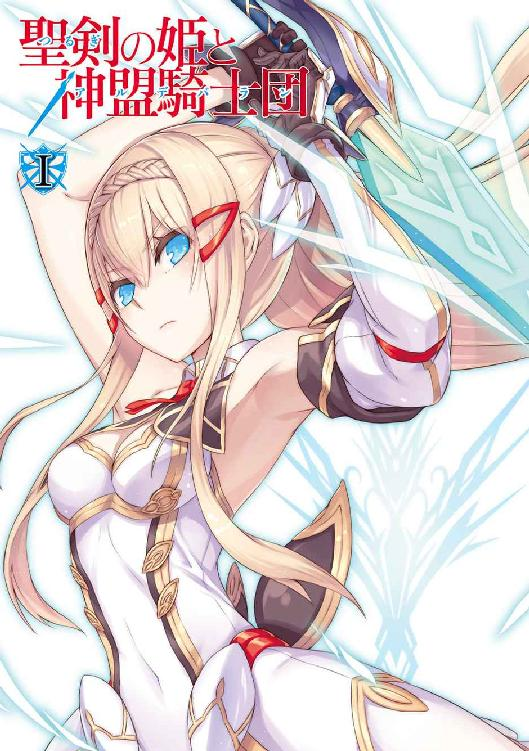
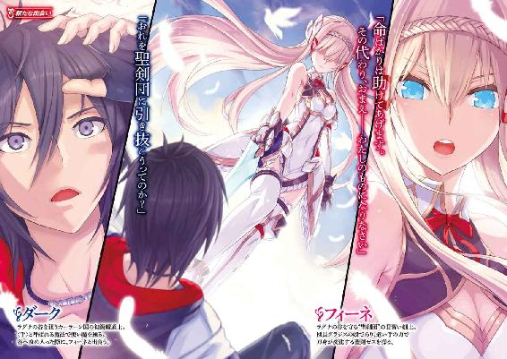
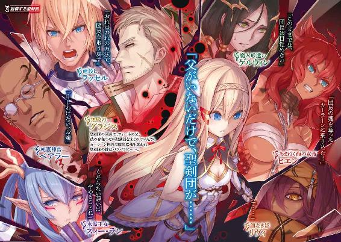
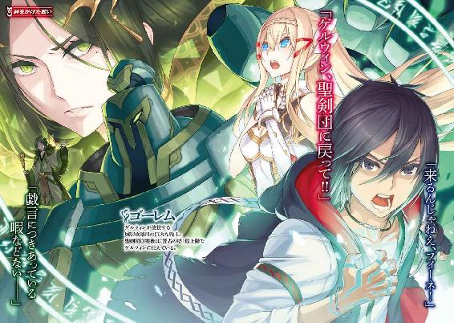
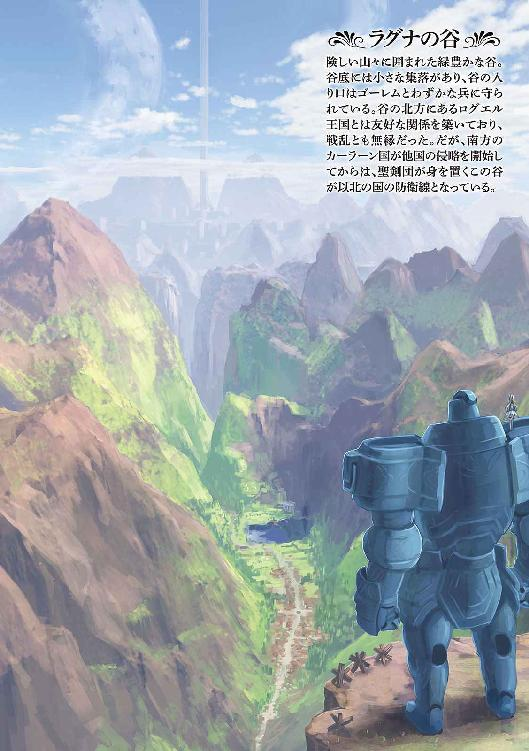
聖剣の姫と神盟騎士団Ⅰ
杉原智則
角川スニーカー文庫
本作品の全部または一部を無断で複製、転載、配信、送信したり、ホームページ上に転載することを禁止します。また、本作品の内容を無断で改変、改ざん等を行うことも禁止します。
本作品購入時にご承諾いただいた規約により、有償・無償にかかわらず本作品を第三者に譲渡することはできません。
本作品を示すサムネイルなどのイメージ画像は、再ダウンロード時に予告なく変更される場合があります。
本作品は縦書きでレイアウトされています。
また、ご覧になるリーディングシステムにより、表示の差が認められることがあります。
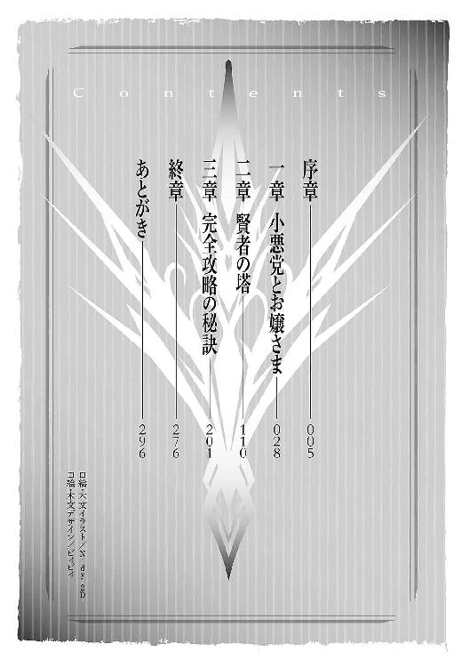
口絵・本文イラスト／Ｎｉｄｙ‒２Ｄ‒
口絵・本文デザイン／ビィピィ
～盲いた吟遊詩人の詩～
疾風の伝説を聞かせよう。
聖剣団初代団長が髪なびかせながら小高い丘の上に立つとき、
そのまなざしになにを見つめているかを教えよう。
右の肩に飛び乗って、まるで道先案内人を気取るように首をのばしている
竜の子アイアネスが、その耳もとでなにを囁いているかを伝えよう。
ジョッキは置かなくて構わない、背筋をしゃんとのばす必要もない、
ご同輩、酔いどれながらでも横になりながらでもいいから、
しばしこのしわがれた声にゆったりとつきあってくれないか。
彼らがわれらに残してくれたものは、つまるところそうした時間に
ほかならないのだから。
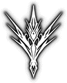序章
（ふてぶてしいガキだ）
と、その兵士が思ったのも無理はない。
薄暗い土牢のなか、少年はど真んなかに腰を落ちつけて座っている。肩よりやや長く垂れさがった髪を搔き、肩を搔き、背中を搔いて、それにも飽きるとぼんやり中空を見あげている。
これからの身の上を案じて、悲嘆に暮れているふうにも絶望しているふうにも見えない。かといって、すべてに諦めをつけて考えることをやめてしまった、というのもちがう。
表情に余裕がある。敗戦した直後、敵陣営に囚われてしまった身だというのに、今日も、明日も、そして当然明後日も、自分はなにひとつ変わることなくお天道さまを頭上に迎え、飯を喰って、日没とともに眠るのだ、という顔をしている。
「おい」
あまりに腹が立ったので、兵士は去り際にそんな声をかけた。
「いまに、お仲間がじゃんじゃん運び込まれてくるぞ。今夜は手足をのばして眠るというわけにもいくまい。せいぜいいい席を確保していろよ」
暗に、
（助けを期待しても無駄だ。おまえの軍勢は今日もこてんぱんにやられたんだからな）
ということを伝えたかったのだが、少年はわかっているのかいないのか、返事もしない。兵士はなおも腹を立てたが、
（どうせいまにわかる）
と思って、階段をのぼって地下牢から出ていった。
取り残された少年は、やはり動じない。
敗戦のあとである。それも、大惨敗だった、と少年自身がそう思っている。しかし、このダークという十七歳の少年、おのれの未来を悲観などしていなかった。
いや、正直にいえば、この土牢のなかで最初に目覚めたとき、彼は心底おびえた。おそらく戦場で意識を失ったのだろう。兵たちに引きずられて土牢のなかへ叩き込まれたのだ。
（お、おれは、どうなる）
自然と手足が震えてきた。
日没が近いのか、暗がりに支配されつつある空間がたまらなく空虚で、なおかつ獰猛にすら感じられた。なぜだか周囲がだだっ広いのが無性に気になって、牢屋のなかをいったん駆けずりまわって、自分の足が踏みしめなかった場所などない、と確認できるまで足を止めようとしなかった。
つまるところ、それくらいは取り乱していたのだ。駆けっこがいったん終わると、ダークは、肩で激しく呼吸しながら、牢屋の中央にどっかと座り込んだ。
そしてそのときにはもう肝が据わっていた。いや、元来小心者の男だ。肝が据わったなどというより、開きなおった、と言い換えたほうがいいかもしれない。
ダークは自分の悪運に自信を持っていた。
虜囚の境遇とてなにもはじめてではない。それでも今日の日まで生き抜いてきたという自負がある。
いまだって身体中が痛みを訴えてはいたが、目立った外傷はなく、五体満足である。それだけでも悪運の強さを証明しているようなものだ。
（大丈夫だ）
と、ダークは自分に強く言い聞かせた。
（おれは、必ず助かる。そのように予言された男なのだから）
いかにも大物のような態度でそう思い込むことで、冷や汗とともに小便もちびり出てきそうになる恐怖を肩から払いのけた。
このダーク、十七という年齢を考慮してみても、一国の兵士というにはやや体格が細い。さらに身につけているのがぼろぼろの衣服なので、どうにも冴えない。ここに叩き込まれる前に身ぐるみ剝がされたとはいえ、そもそも戦場でさえ剣を帯びず、また鎧兜もつけていなかった。
顔立ちは、まあ悪くない部類だろう。真顔でさえいれば、そこそこの美形にすら見えるかもしれない。
が、人相がよろしくなかった。
目つきが無駄にぎょろりとしていて、対した者に不安と反感を抱かせやすい。口もとに締まりがないため、薄笑いを浮かべている様か、への字に曲げられている図が容易に浮かぶ。つまり好感を持たれにくい。なんというのか、本人が耳にしたらさぞ気を悪くするだろうが、
『小悪党』
の相がもう隠しきれないほどの勢いで面ににじんでいるのだった。
少なくとも大成できそうな顔ではない。物語でいうなら、英雄にばったばったと斬り伏せられる雑魚兵士、もしくは山賊風情の役がしっくり来る。
ともあれ、本人はもちろん自分が『小』のつく悪党などとは自覚していない。むしろ天運に味方された、稀有な星のもとに生まれた人物だと思っている。
「まあ、やれることだけやっておこうかね」
未来の大人物になりきることで恐怖から逃れようとしているぶん、独り言も自然と大仰になる。
それでなにをはじめるかというと、冷たい床の上で背筋を伸ばして、両の目を閉じただけだ。
戦場で多数討死にしたであろう同志たちへの黙禱とはちがう。
急ごしらえの暗闇、その中央に意識を集中させる。一点に集められた意識はやがて光の珠となって輝きはじめ、それを、ダークは自分の体内に取り込んだ上で、胸の辺りから眉間にかけてまで、時間をかけてゆっくり光を『浮上』させていくようなイメージを抱く。
この作業、言葉で説明するほどには単純でも安易でもない。あれやこれやと混じり込みたがる雑念──過去の出来事やら、未来への不安やら、尽きることのない欲求やらが、こぞって邪魔をしてくるからだ。十七歳の少年ならばなおさらである。しかしそれを押し殺す術を彼はあるていどは心得ていた。
『浮上』させた意識を、眉間と額の中間辺りから、今度は外部へと『放射』していくようなイメージを強く心に抱く。
ただしそれは、ふたたび暗闇の世界に戻すという意味ではなかった。その暗闇をも突き抜けて──いうなれば、ダークという一個の肉体から、心だけを外部へ解き放つような感覚だ。
その、身体から切り離されたおのれの意識を、魔道士たちは〈手〉と呼ぶ。
ほかならぬ、彼に魔術を指導してくれた老人もそう呼んでいた。
上手くいけば、数秒としないうちに〈手〉はダークの身体から離れることに成功する。とはいえ、肉体がないのだからそこに視野はない。真っ暗闇のなかを、文字どおり手探りで這いずりまわるのと似たようなもの。もちろん手探りといっても、壁や床に触れたところで返ってくる感触などもない。探り当てることができるのは、物体ではなく、〈手〉と同じ、ダーク以外の何者かの『意識』なのだ。それも、まったく見ず知らずの他人や動物ではコンタクトが取れない。相手側もこちらに応じる意志が働いてはじめて〈手〉を握りあわせることが可能となるのである。
ダークはでき得る限り〈手〉をのばしてみた。肉体と同様、こちらの〈手〉にものばせる限度というものがある。すなわちそれが魔道士の熟練度や才覚といったものを推し量る基準にもなる。
時間をかけて暗闇を手探りしてみたが、しかし応じる気配はなかった。何度となく空ぶったすえに、ダークはあきらめて〈手〉を肉体へと戻した。
（ちくしょう、あいつら、ご主人さまを放っておいてどこで油売ってやがる）
ダークは胸中で毒づいた。
輝かしい未来を迎えるため、彼が思い描いた最初の策は失敗に終わった。が、まだ悲観にはほど遠い。
「そら、自分の足で歩け」
「暴れるな！」
いましも、甲冑に身を包んだ兵士たちにつれられ、ダークと同じ境遇にある男たちが土牢のなかへ投げ入れられているところだった。
いまのところ二、三十名ほどか。が、合戦の規模を考えればさらに増えるのは目に見えている。
全員、足取りがおぼつかなかったが、比較的軽傷を負った者ばかりだ。それも当然で、動けないほど重傷を負った者、もう助からないと判断された者は、たとえ命があったところで敵に止めを刺されて命運が尽きている。それが戦場の掟であり、特にダークらを撃退したあの傭兵集団──『聖剣団』は、それを徹底している。
「よう、ダーク。やっぱりおまえもここにいたか」
新たに投げ入れられた男たちのなかに、多少は見知った顔があった。ダークより二十は年上だが、隊のなかの位置づけは似たようなものだ。顔中泥と煤にまみれたその男はにたにたと笑いかけてきた。
「やっぱりってのはなんだよ」
「いや、おまえさんが死ぬはずはないと思ってな」
「そうだろ、そうだろう。カーラーン国一番槍、精鋭のなかの精鋭、この魔法士ダークを、敵が軽んじるはずがねえ」
「元気だねえ」
にやけ面の男は、名をベオルという。足を負傷したらしく、その足を引きずりながらダークの隣に腰かけた。
「おっさん、誰にやられた？」
「ラッセルだな、多分」
「多分？」
「おれの隊は三百人ばかりいてね、進行方向にいる敵はせいぜい七、八名が一隊になって、ばらばらに存在してるだけ。こりゃ負けるはずがねえ、ってぐんぐん進んでたら、側面から騎馬隊が突っ込んできたのよ。それでも数はたかだか二十、三十だ。あっさり跳ね返せると信じてたんだが、先頭の騎馬武者は兜をかぶってなかった。よくよく見たら例の金髪碧眼。あ、やばい、と思ったときにはもう大勢の仲間とともにひっくり返ってたんだよ。〈竜殺し〉の二つ名は伊達じゃなかったな」
「ラッセルか、ならおっさんは運がよかったよ。あいつは雑魚兵士相手といえど容赦しないからな。命があっただけでめっけものだ」
ラッセルなどすでに通った道だ、といわんばかりの態度でダークはうそぶく。つまりは一度敗れたことがあるという意味なのだから、あまり胸を張ることでもなかろうとは思う。
「そういうおまえはどうなんだ？ 前は確か〈水霊王女〉スィーに、地面の上で溺れさせられそうになったんだっけ。今度もそいつか？」
「馬鹿いえ。同じ相手に二度も敗れるおれだと思ってるのか」
「ほう。ということは？」
「聞いて驚け。これで七人目。聖剣団、部隊長七人全員コンプリートだ」
「そいつは凄え」
素直にベオルは目を丸くした。
「つまるところ、聖剣団に七回もやられて、その都度逃げ帰ってきた、ってことか」
「ば、馬鹿」ダークはこちらも素直にむっと気分を害した。「すなわちおれは、聖剣団の部隊長七人全員と戦場で出遭い、その上で七回とも無事生還した、って意味だ！」
「なるほど、そう取るか。それはいいが、七回目はまだだぜ、ダークの坊や」
無精髭の散った顎を搔きながらベオルが苦笑いを浮かべる。ほかに土牢に入れられた兵たちは口を利く元気もないようで、そういう意味では、敗戦した挙句に虜囚の身となりながらさっきからべらべらしゃべっているダークとベオル、この二人がやや異質だ。
「最後のひとりってのは誰だ？ さっきいった〈水霊王女〉スィー、〈竜殺し〉のラッセルのほかに、ええと、〈魔人形遣い〉ゲルウィンに、〈あまねく海の女帝〉ヒエン、〈顔なき影〉のリヴィ......っと、リヴィの場合は正体も知れないから、おまえの言葉が本当かどうか怪しいもんだが」
「戦う前に名乗っていたからまちがいないね。それに〈死霊神官〉のベアラー、そしてごくごく当然、聖剣団団長〈無敗の〉グラジス・エストールともとっくの昔に会戦済みさ」
「当然なのかよ」ベオルが指折り数えていたその手をはたと止めて、「待てよ、これで七人だ。重複してるんじゃないか？」
「え、いや待て、そんなはずない。今日はじめて見る顔にまちがいなかった」
「じゃあ、聖剣団以外の人間だ。おまえ、実はすでにコンプリートしてたんだよ。で、今日はそれ以外の無名の兵士にむざむざやられたってわけだ」
「いーや、このおれが、この魔法士ダークが、聖剣団以外の戦士に敗れてなどやるものか！」
どう言い訳したとて、八回も敗れた事実は変わりようがないし、そこばかりは本人も否定しなかったのだが、ダークは奇妙なことに強くこだわった。
「話してみろよ、どんな奴だった？ お得意の脚色は抜きにして」
「誰が得意だ、誰が」
苛立たしげに反論しつつも、ダークは首をひねって回想をはじめた。彼自身、今回の戦闘に関しては記憶がどうにもぼんやりとしていて、気になっていたところでもある。
カーラーン国による、『ラグナの谷』侵攻作戦はこれで八度目におよぶ。つまるところ、ダークはその八度すべてに参戦しているということだから、ある意味ではベテランといえないこともない。
そしてそのすべてにおいてカーラーンは大敗を喫した。
普通に考えればあり得ない。ラグナの谷には一千人を下まわるほどの人口しかなく、カーラーンといえば、ここ数年でにわかに勢力をのばしてきた南方の雄。実際、戦場に駆り出された双方の兵数は十倍、二十倍の差が平然とつくほどだ。
出陣前となると、毎回ダークは、
（今度こそ）
と勢い込んだ。上官が鼓舞する声にしたがって天に振りあげられた拳はいく千、いく万。それも人間のものばかりじゃない。カーラーン軍が布陣した場所から逬る鬨の声には、獣めいたもの、それも地上のどこをさがし歩いても決して巡り会えぬ、いわば異界の幻獣のものさえ含まれていた。
負ける気がしなかった。必ずや谷は焦土と化し、これまでカーラーンが周辺国で繰りかえしてきたのと同様、敵兵の死体がうずたかく積もるなか、男たちは苦役を担う働き手として、女はよその国へ売り飛ばす資金源として、縄を打たれながらつれていかれる光景がどの兵士の脳裏にもありありと浮かんでいたはずだ。
何回も敗北を経験したとて、出陣前のその実感が微塵も揺らぐことはなかった。ダークが経験浅い少年であったことなど理由にはならない。あきらかにカーラーンの上層部も同じ考えを抱いていた。であればこそ、ほかに外患を抱える事情がありながら、こうして何度も部隊を編制してはラグナの谷に攻めかかっていったのである。
なのに、敗れた。
八回も。
その都度ダークが味わうのは火のような悔しさでも、身を切るような悲しみでもない。
不可思議さだ。
（なんで？）
仲間に引きずられていきながら、あるいは仲間の死骸の山に埋もれてかろうじて敵兵の目を逃れて、誰もいなくなってからこそこそと落日後の戦場から逃げ帰りながら、ダークは首を傾げたくなった。
まるで、現実味がない。
それが、ダークにも、カーラーン軍上層部にも敗北を実感させない最大の理由だったかもしれない。
それほどまでにラグナの谷が召し抱える傭兵集団──かつては『神盟騎士団』といささか大仰に名乗っていたが、いまはなにがきっかけであったか、『聖剣団』と敵も味方もそう呼んでいる──の力は、並外れていた。度を越していた。常識外れであった。ある意味で、歴史の生んだご都合主義としか思えぬほどのものだった。
団長グラジスをはじめ、団を構成する七人の部隊長たちはいずれも一騎当千。それぞれが魔術、剣術、秘術、はたまた絶海の孤島に浮かぶ島にのみ伝えられている忍術とやらに長けていて、いずれも超一流の腕前である。
それほどまでの傑物揃いでありながら、この七人、敵には意外と顔が知られていないという。
戦場で敵として相対したが最後、誰もが命を絶たれているからにほかならず、またたとえ一生ぶんの幸運に恵まれて命が助かったとしても、どっちみち、ほんの一瞬のうちに〝のされて〟いるのだから、誰にも覚えようがない──という、そんな笑い話さえ真実味をともなって各地に伝わるほどだから、この七人が、いかに常識外れの力を有しているかわかろうというもの。
その七人と出遭い、七回とも生きのびたダークにして、やられた経緯も、その理由も、まったく不明のまま毎回逃げ帰った。だから現実味がない。だから新たに出陣を控えた際、圧倒的な数の味方と肩を並べれば、
（次こそは勝てるかも）
と根拠のない自信に駆り立てられもするのである。
というわけで、その八回目。
ダークは右翼の軍に編入させられていた。本隊が中央突破を図るその側面から支援をしようという動きであったが、本隊の前には巨大な騎士が数体立ちはだかって進軍を阻んでいた。どれほど巨大かというと、その兜は首を痛めて見あげねばならぬ高さにあり、地ひびきをあげて大地に振りおろされるその足は、大の大人三人でも囲めない、というほどのものだ。
当然、生きた人間などではない。
魔術によって命を吹き込まれた巨大な青銅像──すなわち魔人形どもだ。〈魔人形遣い〉ゲルウィンの操るものにまちがいない。ならば、とばかりにダークは部隊から離れて進軍しようとした。
彼とて魔法使い──魔術師、魔道士、妖術師、いろいろな呼び名があるが、いずれも同じものであり、この辺りの地方では国に仕える魔法使いのことを特に『魔法士』と呼ぶ──である。しかも極めてゲルウィンに近い性質の魔法を扱う。もちろんあれほどに巨大な人形を動かすほどの魔力はないものの、意のままに操れる配下のひとりや二人はいた。それらを従え、敵を側面から切り崩そうという構えであったが、見慣れた顔が丘の下に伏してあったので、すぐさま『回れ右』をした。
〈水霊王女〉スィー・ラン。前回、ダークをこっぴどく叩きのめしたのは彼女だ。
というわけで、戦場のあちこちを駆けまわり、見知った顔に出遭っては、くるりと背中を向けて進路を変えていった。彼は自信家である。ではあるが、その自信を上まわる信条として、
（勝てない戦いはしない）
というものがある。すでに一回敗れた相手に、
（血もにじむほどの修練と研鑽を重ねたいまのおれを、昨日のおれと同じだなどとは決して思うな）
などとふたたび挑みかかっていくほどに、彼は無謀でも無策でもない。そもそも修練も研鑽もしていないのだから勝てる道理がない。
彼は戦場を駆け抜けた。一陣の風と化して、なんとか勝てそうな相手、すなわち陣立てのもろい場所はないかを探して、部下たちとともにひたすら駆けた。
そんななか、戦場の一角に絶好の相手を見つけた。鎧兜に身を包んではいるが、その小柄な体軀はあきらかに子供のものだ。だというのに、兵数名を従えて、幼い声で指令を飛ばしている。
（高貴な身分の者か？）
とダークは見て取った。
ラグナの谷は大陸でいうと中規模ていどの集落だが、歴史はそこそこ長い。血筋による上下関係も存在していると聞いた。
ならばこれを捕らえて、身代金をせしめてやろう。決断までに時間はかからなかった。ダークは雄たけびをあげて配下とともに突撃した。どうせすぐに戦意喪失して降伏するだろう、と思いきや、その少年は腰の剣に手をあてがって、腰を落として身構えた。
（おっ）
意外にやるのか、と一瞬警戒したダークだが、少年の手が剣を引き抜くと、思わず失笑が洩れた。
それは剣と呼べる代物ではなかった。なにしろ腰から引き抜かれたのは柄の部分のみ。つづいてあらわれるべき刀身がなかったのである。おもちゃの剣を振りかざして『ごっこ遊び』をしているようにしか見えなかった。
「お覚悟召されい」
こういうとき、ダークはわくわくとして物語の登場人物になりきってしまう。
「身分卑しからぬ素性と見た。決して悪いようにはせぬが、抗うというのなら致し方ない、このカーラーン国精鋭隊隊長ダーク、小僧相手に不本意であっても手加減などできぬ性分......」
「はあ？」
「いや、もうちょっとひねった台詞もいえたがね、でも突然だったから、それで、その」
「そっちじゃねえよ。それで、どうなったんだ？」
「最後まで言い終わったかどうかも覚えてねえんだよ」ダークは仏頂面をして首をひねった。「気がつけば、この牢のなかだ。なんか、光みたいなものが目の前をよぎったのは覚えている。身体はちっこいくせに、なにしろこのおれを倒したんだ、相当な腕前といっていいだろう」
うん、うん、とひとりでしきりに頷いてから、
「聖剣団め、きっと何度となく立ちはだかってくるおれに対抗するため、新たな腕利きを雇ったにちがいない。考えてみれば、子供のような見た目でおれの同情を誘い、油断させたところを斬り伏せるとは、なんとも卑劣極まりない作戦じゃねえか。それだけこのおれを脅威に感じ......」
ベオルは遠慮のない大笑いをした。あまりに笑うので、ほかの仲間がぎょっとしたようにこちらを見たほどだ。元来小心者のダークのほうが人目を気にして、
「な、なんだよ。なにがおかしい」
「そりゃ、本物の子供だよ。多分おまえとそう歳は変わらないはずだぜ」
「どういうことだ？」
「八人目の聖剣団部隊長──になる、と目されている御仁さ。いまはまだ、団員特有の二つ名もない見習いの身分らしいがね。本名はフィーネ・エストール。ここまでいって、まだわからないか？」
「あっ」
「そう、〈無敗の〉グラジス・エストール、つまり聖剣団団長の娘さんさ。御歳十五か十六」
ダークは言葉を失った。まさか自分をのした相手が女、それも少女だとは思いもしなかったのだ。
「おまえさん、自分で切れ者を自称しといて、肝心な部分の知識が抜けてるな。作戦会議でハスターどのの説明を聞いてなかったのか？ さすがに八回目となると、部隊長それぞれの情報をまとめてご説明してくださったろう。そのなかにフィーネ・エストールの名前もあったはずだ」
共通の上官の名前を出されてもダークには返すべき言葉がない。怖さという意味ではその女上官も聖剣団団員とどっこいどっこいだ。
「たとえ無事逃げ帰ったところで、お仕置きのひとつは免れられないだろうな。まあ、あの上官どのになら仕置きされてもいい、という兵士も数多いとはいうが」
「冗談じゃない」ダークは震えあがった。「部下はともかく、友達が蛇しかいないって噂の上官どのだぞ。あの特別製の蛇に頭から嚙みつかれるにちがいない──、いや待て、おれのような美しい稚児をはべらすご趣味があったらどうしよう!? 夜な夜な、ベッドの上で無数の蛇と上官どのとくんずほぐれつ。ああ、考えるだけで鳥肌が立ってきた」
「逃げ帰ったあとの話で震えあがる、というのも考えれば馬鹿馬鹿しい話だな」
ダークの思いあがった台詞に突っ込むことなく、急に、ベオルは楽観的な顔つきを捨てて憂慮に沈んだ。
いまさら蒸し返すまでもないが二人は虜囚の身だ。
ラグナの谷の捕虜となった兵士のなかで、身代金を支払われて自由になった者はない。そも、カーラーン国はそのような甘い対処はしない。谷から要求されたところで、
「なら、殺せ」
と返答するのは目に見えている。カーラーン国君主はそのような人物だ。
考えられる未来としては、このまま見せしめに処刑されるか、他国に売り飛ばされるか、あるいは賃金なしの労働力にさせられるか。ラグナの谷は決して小さくはない集落だが、当然余分な人間を食わせるだけの余裕はないはずだ。
「急に悲観的になるなよ、こっちの気が滅入ってくらあ」
「さすがのおまえも捕まったことはないだろう」
「それが、一度あるんだよ」
むしろ誇らしげにダークはにやりとした。
「そのとき見張りについたのがほかならないラッセルで、これが知ってのとおり、熱血騎士を気取った大馬鹿野郎だ。仲間が挑発したところ、大剣を力いっぱい振りおろしてきやがった。おかげで何人か犠牲になったけど、壁も檻もぶっ壊れて、その騒動にまぎれて逃げおおせた、ってわけ。見ろよ」
ダークが顎をしゃくったところを見ると、確かに壁に補修のあとがある。しかしベオルは喜ぶどころか、ますます顔色を暗くさせて、
「最悪だ。そんな前例があるなら、今度は見張りも強化されるにちがいない」
そういったが、不意に目を輝かせて、
「しかし、おまえさん、ずいぶん余裕だな。まさか、頼みのゴルボ族が助けに来てくれるのか？」
「いや。さっき〈手〉をのばしてみたけど、応じる気配がない。多分、〈手〉の届く範囲外に逃げ散ってるんじゃないかね」
「それで、なんで余裕でいられるんだよ」
一瞬喜びかかっただけに、ふたたび落ち込んだ絶望の谷間は深い。ベオルは死にそうな声を出した。
「それは、ここにいるのが、このおれ、ダークだからだ」
「ああ、あ。一応年長者からの助言を送っておくが、根拠のない自信は身を滅ぼすだけだぜ、若造よ」
「根拠ならあるさ」
ダークはふたたび天井を見あげた。
口にした言葉に噓偽りはない。ダークは、今度もまた自分は助かるだろうという確信を抱いていた。
彼は強い。
悪運の強さだけなら天下一品だ。少なくとも本人はそう信じている。いまは『悪運』に過ぎぬそれが、やがては天下に並び立つもののないほどの幸運となって、自分をこの世の頂きに押しあげてくれるはずだと、本心から信じ込んでいるのだ。
ベオルはあほらしくなったか、ついに口を利かなくなって、ほかの囚人たちと同様、暗い目をして座り込んだきりになった。さすがのダークも話す相手がいないのでは口を閉ざすしかない。
あとには死のような沈黙が垂れ込める──、
と思われたそのとき、ぶ厚い壁越しにも大勢の人々のあげる声が波のように伝わってきた。
「来たぞ」
ダークは薄く笑って、つぶやく。
まちがいなく外では戦いが起こっている。
それがなぜなのか、何者と何者の戦いであるのか、どうしてこのタイミングなのか──。
詳しいことは彼にもわからない。わからないが、これが自分にとって瑞兆であること、ただそれだけはダークにはわかっていたのだ。
だから上へとつながる階段から足音が荒々しく近づいてきて、カーラーン軍の赤黒い鎧兜が見えたときも、彼らが扉の鍵を開けたときも、ほかの囚人たちのように小躍りすることも歓声をあげることもなく、ただにやりと口の端を吊りあげて笑っただけだった。
「いっただろ、ベオル」
もったいぶって腰をあげながら、ダークは呆然としている同僚の肩を叩いた。
「いつだって、運命はおれの味方なんだよ」
一章 小悪党とお嬢さま
１
フィーネ・エストールは先日、十六歳になった。
見た目にはまだまだ子供っぽさが抜けきれない。ととのった目鼻立ちには将来大輪の花を咲かせるきざしこそあるが、顔立ち全体は、同じ年齢の淑女と比しても幼いほうだろう。着飾って社交場に出ようものならきっと物笑いの種にちがいない、と彼女は自分で自分のことをそう思っている。
だから、というべきか、フィーネはひだの多いドレスは身につけない。贅を凝らしたパーティーにも好んで出かけようとはしない。
純白に輝く甲冑を身にまとい、羽根飾りのついた兜の下、その薄桃色の頰にいくさばの風を浴びるのが、フィーネ・エストールの日常である。
十六という実年齢から考えると、フィーネはこれまで恐ろしく様々なことを経験してきた。
が、その彼女にしても、これからのわずか数時間で、いままでにないほど激動の時間を過ごすこととなる。
戦勝の宴のさなかであった。
ラグナの谷にある、傭兵集団『聖剣団』の宿舎一階大広間。
彫刻を施された柱の立ち並ぶ広間に、部隊長たち六名が顔を揃えている。彼ら配下の傭兵やら、それぞれが馴染みにしている店の女たちやらも多数顔を出していて、会場は華やいだ空気に包まれていた。
「われらの勝利に乾杯！」
「ラグナ郷、未来一千年の平和と繁栄を祈って」
「ついでにわれわれのお給金が少しはマシになってくれることを祈って」
乾杯の音頭が絶え間ない。誰かれ構わず、率先してジョッキを宙に捧げたがっていた。
浮かれるのも無理からぬこと。十倍近い兵力で攻めかかる敵を撃退した直後であり、誰もがこの勝利に貢献した小英雄たちであった。
フィーネはこの宴にいちばん遅く参加した。
戦が終わっても気を抜かず、谷周辺を数名の部下らとともに哨戒していたからで、略式とはいえいまだ甲冑姿のままである。
広間の片隅に背筋をのばして突っ立ち、任務に当たっていたときとそっくりそのまま同じ眼光で広間一帯を見わたしている。皆が酒で浮かれているあいだに敵の間者が忍び込んでいるのではないか、そうでなくとも要らぬ喧嘩で怪我人が出ることがないか、これもいわば見張りの任務のつもりでいるのだ。
立派な心がけではあっても、なんというのか、一挙手一投足に余裕がない。酒に浮かれている男女も、フィーネと目があうといっぺんに酔いが覚める思いがするものだから、彼女に声をかけてくる者も皆無に等しかった。
と、
「へえ？ それはあたしへの嫌味のつもりかい、ラッセル」
喧騒のなか、ヒエン・インコルマの声がひときわひびいた。陽に焼けた肌がすでに酒で真っ赤に染まっている。
「そんなつもりはなかったが、おまえがそう受け止めたというのならそうなんだろう。おれは訂正するつもりもない」
一方、ラッセル・アーヴェンは酒の席にあっても乱れることがない。彼は自らを『この世で唯一の正当騎士』だと自称している。そのため、規律、戒律に厳しかった。金髪碧眼。顔の線が丸く、多少童顔であったが、その大きな目は常に闘志に満ち満ちているようであり、彼を軽んじようとする者はない。
年齢は二十代半ばほど。三年前、北方の山を根城として諸国を荒らしまわっていた巨大な竜を単身退治したことで、〈竜殺し〉の武名は諸国に鳴りひびいている。
一方のヒエンも勇名では引けを取らない。こちらはもともと南の海をわがもの顔でさんざん荒らしまわった海賊の頭である。年齢はラッセルよりひとつか二つ年上。すらりとした体格で、豪華なドレスでも着させれば女としてさぞ見栄えもしようと思われるが、丈の短い衣装から覗く腹筋は硬く引き締まっていて、そうした文明圏のなかにあるより、さんさんと降る陽光の下、野性味のある美貌を血まみれにしながら武器を振るっているほうがよほど活き活きと輝く女性なのである。ついた二つ名は〈あまねく海の女帝〉。
ヒエンもラッセルも、現在は聖剣団において各々五十名ほどの部下を率いる部隊長の身だった。
「ふざけやがって。今度の戦いでいちばん活躍したのはまちがいなくあたしだぞ。モーガウィル号を縦横無尽に駆って、敵軍団を散り散りにさせた。今日屠った敵兵の数は、両手両足の指をあわせて数倍しても足りないほどだよ。おまえはどうだ？ 決められた場所を動こうともしないで、ただただ無策に討ちかかってきた敵を追い払っただけじゃねえか」
「谷の南西拠点を防衛するのがおれの任務だ。与えられた死地といっていい。ここを一歩たりとて動かず、守り抜くことこそ、わが名誉と誇り。たとえ百万の軍勢が攻めあがってきて、こちらにもう一兵たりとて残されていなくとも、やはりおれは笑ったままこの拠点を動こうとはしないだろう」
知らず知らず、両者の距離が近くなっていく。ヒエンは女性にしては上背があって、ラッセルと並んでもまったく見劣りしない。目つきの鋭さでいえばヒエンのそれも燃えあがる原始の炎のごとき凄みがあったが、ラッセルはまったく引こうとせず、
「それをおまえのような、戦いのなんたるかも理解しないような奴が、考えもなしに引っ搔きまわすから面倒になる」
「なんだと」
ヒエンは口にしていた鳥肉の骨をぺっと床に吐き捨てた。
「もういっぺん口にしてみな、騎士の坊や。騎士道だの信条だの、そんなものを生き死にの世界に持ち込んでる手前みたいなアホが、いちばん戦いを冒瀆してるってんだよ」
「貴様こそ、いったな」
両者、いまにも摑みあいをはじめそうな雰囲気になった。ラッセルの近くで給仕していた女性たちが悲鳴をあげて逃げ散る。その拍子にテーブル上に並んでいた酒盃や料理を盛りつけてあった皿が落ち、あちこちで粉々に割れた。
その音に触発されたか、ヒエン配下の元海賊集団、そしてラッセル配下の剣士集団も、互いににらみを利かせはじめている。部隊長以外、宴に武器を持ち込むことは禁じられていたが、もとより血の気の多い連中だ。酒瓶やモップ、ナイフにフォークやら、とにかく武器になりそうなものをすでに片っ端から握りしめている。
このような騒ぎのなか、音に聞こえし聖剣団、ほかの部隊長たちはどうしているかというと、これがなにもしていない。
ゲルウィンは書物の解明に忙しく、スィー・ランは終始つまらなそうな顔をしながらぷかぷか漂っているし、ベアラーはベアラーで、自分の部下たちが今回の戦いによる殺生を彼に懺悔しようと列をつくっているためその対処に忙しい。リヴィにいたっては相変わらずどこにいるやら見当がつかない。
フィーネは小さくため息をついた。
「ヒエン、ラッセル」
声をかけながら両者のあいだに立ち入ろうとした。目をきりりと吊りあげて、
「こうやって皆が楽しんでいる場に、なにをいがみあっているのです。ご婦人方も怖がっておいでです。どちらも外に出て頭を冷やしておいでなさい」
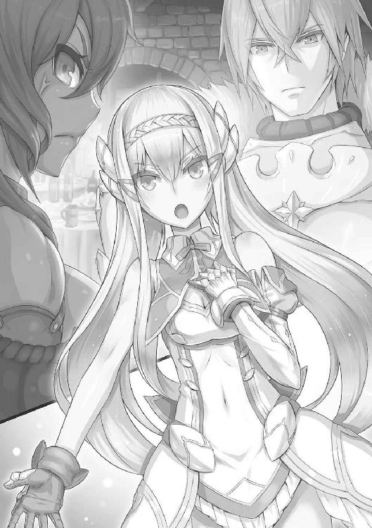
ヒエンはじろりと鋭い目を当てながら、
「見習いが偉そうな口を利いてんじゃねえ。おまえこそ酒の席はまだ早い。とっとと部屋に戻って、あったかいミルクでも飲んで寝ていろ」
「おやおや」ラッセルは大仰に肩をすくめた。「まったく、おまえという女は見境がない。仲間にもそうやってたやすく牙を剝こうとする。躾のなってない犬も同然だな。フィーネ、気をつけなさい。この女、そのうち戦場でもこちらの背中を狙ってこないとも限らない」
「それがお望みだってんなら、いつだってかなえてやるよ。どのみち、手前のお坊ちゃん面にはほとほと嫌気が差していたとこだ。あたしの鎖で傷をつけてやったらさぞ男ぶりもあがるだろうねえ」
ヒエンは、ありったけの敵意を火のように叩きつけて怒鳴った。肩から腰にかけてまで巻きつけてある鉄鎖がじゃらりと音を立てる。
「ほほう、いままでは我慢してたというのか？ 獣同然だと思っていたが、なるほど多少のお預けくらいは学んでいたと見える。そうだな、ここで一からおまえを躾けてやるのも悪くないだろう」
「抜かしやがれ」
もはやフィーネのことなどまったく無視して、双方、さらなる火花を散らしはじめた。
「いい加減に──」
とフィーネが詰め寄ろうとしたところ、口論のあおりでヒエンの振るった腕に胸を小突かれ、後ろ倒しになった。
一瞬の間。
尻餅をついていたフィーネが、ゆっくりと立ちあがる。そのときには本来雪白の肌が、真っ赤に染まっていた。当然、彼女の場合は酒が原因ではない。
尋常じゃない角度で眉が吊りあがっていた。
と、
「おっ」
「うわっぷ」
ヒエンとラッセル、二人の顔面に突如として水飛沫が飛んだ。
これがフィーネの仕業でないのは、怒りから一転、きょとんとなった彼女の表情からもあきらかだ。
飛沫はなぜかそのまま飛び散らず、水滴同士が空中でつながりあうと、人によく似た形をつくりあげた。いわば水でこしらえられたその小人たちは、二人の顔に小さな手足をのばしてしがみついている。ヒエンとラッセルが二人ともにあわてて腕で振り払うと、小人は空中で〝けたけた〟と笑いつつ、四散して、床に跳ねたころにはただの水滴に戻っていった。
二人、実は仲がよいのではないかというほど同じタイミング、同じ速度で、同じ方向をにらみつけた。これが誰の仕業であるのかわかっていたからだが、二人は一瞬、やはり共通して呆然としたような表情になった。
そこに立っていたのはひとりの中年男だ。くたびれたような革鎧を身につけていて、全身から鬼気のごとき迫力を漂わせるヒエンや、若いながら一種の威厳すら見せるラッセルに比べると、いかにも平凡な男である。
「おれがスィーに頼んでつくってもらった」
中年男は空の酒盃を見せると、髭を散らした口ににやりとした笑みを浮かばせた。『つくってもらった』とは先ほど二人の顔面にしがみついた小人のことか。聖剣団どころか、その辺の体格のいい男が小突いただけでもよろめきそうに見えながら、恐れた様子は少しもない。二人の怒りはいよいよ頂点に達するかと思われたが、
「ひでえや」
とヒエンはいかにも情けなさそうな顔になり、
「なんでおれまで」
ラッセルまでもが不服そうな、それでいて先ほどヒエンに向けていた敵意や怒りなどは微塵も感じさせない顔でいう。
中年男は笑いながら、
「ラッセル、戦のことで不満があるんだったら、まずおれにいえ」
ラッセルの顔を服の袖で拭いながらいった。やんちゃ坊主を相手にした父親のような仕草に、ラッセルは一瞬嫌そうな顔をしたが、抗いもしない。
「戦の指揮を執っているのはおれだ。勝利による功績と喜びは戦っているおまえら全員が公平にわけあうべきだが、敗北や要らぬ痛手をこうむったときの責任は、すべておれが負うべきものであって、決しておまえの仲間や部下のものじゃない。この責任という奴ばかりはな、いかに愛するおまえたちといえどおいそれと渡すわけにはいかんのさ。それと、ヒエン」
今度はヒエンのほうに向きなおる。この世に恐れるべきものなどなにもないといった風情の海賊女が、急に緊張した面持ちになった。
「おまえはおまえで、自分の戦果を誇りすぎだ。おまえが戦場で好きに暴れまわることができるのも、ひとえに仲間たちが自分たちの任務を忠実にこなしているからこそだよ。ひとりで戦って、ひとりで勝利したわけじゃない」
「お、おう」
ヒエンが顎を引けば、
「わかったよ、団長どの」
ラッセルも濡れた金髪を手で払って、不承不承ではあるものの納得した顔を見せる。その二人に、
「ははは、うちのあばずれも、皮肉屋の騎士どのも、彼にかかればでっかい子供同然でござるな」
ベアラーが近づいてきて、双方の肩を叩いていた。
「うるせえ、生臭」ヒエンがぎろっとこの男をにらみつけた。「手前は笑うな。笑うと、また死霊、悪霊どもが寄ってきちまう」
「安心いたせい。この宿舎には亡者除けの結界が張ってある。わしの、天地余すところなくひびきわたるこの加護ある声も、結界を越えて広がりはしまい」
〈死霊神官〉の二つ名で知られるベアラーという男、体格でいえば部隊長の誰よりも背が高く、肩幅も広い。顔も石塊をのみで削ったように彫り深く、無骨そのものに見えながら、意外とととのった目鼻立ちには奇妙なあたたかみがある。
身につけているのは濃い藍色の僧衣。ただし首には人間の頭蓋骨を数珠つながりにして巻いてある。いよいよ奇妙な風体だが、
「ヒエン、いつまで喧嘩腰でいるつもり？ なんだったら、さっきみたいにわたしが遊んであげてもいいのよ」
奇妙といえば、音もなく忍び寄ってきた〈水霊王女〉スィー・ランもまた普通ではない。妖艶な笑みを浮かべた顔は、ヒエンよりさらに高い位置にある。といって、彼女がひときわ長身なのではない。身体が宙を浮いているのだ。
床とスィーの足とのあいだに水柱が立ちのぼっていて、それが渦を巻いてスィーの身体を支えている。移動するときはこの高さ半メートルほどの渦巻きとともに宙を漂うのである。
水の魔法に長けた魔術師であり、スィー本人はまた、水の妖精と人間とのあいだに産まれた子供であるらしい。
「スィーまで挑発するな」革鎧の男は苦笑いを浮かべた。「おう、ゲルウィン。今日もご苦労だった。相変わらずの遣い手だ」
「う、うん」
〈魔人形遣い〉ゲルウィンもいつしか彼らのそばに寄っていた。巨大ゴーレムを何体も同時に操れるという、ひとりで一千の軍勢にも等しい活躍を見せる魔法使いである。さらには美女と見まがうほどに艶めいた容貌をしていて、聖剣団のなかでもさぞ女性にもてはやされる機会が多いだろうという若者なのだが、いかんせん、これも常軌を逸した特徴があって、人づきあいが究極的なまでに苦手なのだ。誰とも目をあわさず、誰とも口を利かず、ばかりか、任務のない日は暗い部屋に閉じこもって一歩も外に出ない。
さらに、そこへひとりの若い女性があらわれ、いつしか輪の中心となっていた革鎧の男に新しい酒盃を載せた盆を捧げた。どこかの店から引っぱってこられた給仕役の女性かと思いきや、男は酒盃を受け取ったあと、その女性の肩を叩いて、
「リヴィも、よく敵を搔きまわしてくれたな」
と笑いかけた。
あっ、というようにヒエンやラッセル、スィーまでもが驚いた顔をしたのは、
（今日はこいつがリヴィだったのか）
と誰もが共通して同じ思いを抱いたからである。
見た目、地味な外見をした女だが、それがリヴィの真実の姿とは限らない。彼女の二つ名は〈顔なき影〉。他人になりすます術を極めており、見た目はおろか内面までも見事に化けるので、内偵、暗殺の任務に長けている。彼女がひとたび何者かになりすますと、いまヒエンたちが驚いたとおり、聖剣団の仲間さえ見わけがつかない。というよりも、彼らは一応リヴィの『素顔』も知ってはいるのだが、果たしてそれが真実かどうか、そもそも本当に女性なのかどうかさえも疑わしい、というのがリヴィという存在であった。
〈竜殺し〉ラッセル、〈あまねく海の女帝〉ヒエン、〈水霊王女〉スィー、〈魔人形遣い〉ゲルウィン、〈死霊神官〉ベアラー、〈顔なき影〉のリヴィ。
革鎧の男は、彼らそれぞれにわけへだてなく声をかけてやりながら、その途中、フィーネに向かっても微笑を与えていた。
そう、この男が──近所の子供たちに朗らかな声をかけ、いい遊び相手になっているのがお似合いに見える男こそ──、聖剣団団長、〈無敗の〉グラジス・エストールその人であった。
すなわち、総勢三百にも満たぬ傭兵団を率いて、南方の雄カーラーン国の進撃をいく度となく喰い止めている男であり、同時に、フィーネ・エストールの父親でもある。
フィーネは父親の笑みに応じつつも、先ほど頭に血がのぼった自分を恥ずかしく思った。
まだまだ父上のようになるには修行が足りない。
「しかし聞いてくれよお、団長、この小僧っこがいけないんだぜ。いつも挑発してくるのはこいつだってこと、団長ならもうわかっているだろう」
「な、なにをいうか。急に猫の子のような声など出して。おまえこそ、いつもいつもおれをそうやって小僧扱いして──」
またもヒエンとラッセルは火花を散らしていたが、先ほどのような、いまにも取っ組みあいやら殺しあいやらに発展する恐れなどは少しも感じられない。まるで、父親に見守られながら罵りあいをする姉弟のようにも見えた。
「相変わらずですね」
振り向くと、さらにフィーネは顔が赤らむ思いがした。柔らかそうな髪を後ろに撫でつけた青年が微笑んでいる。
「これは、クロム王子。お恥ずかしいところをお目にかけました」
「いえ、にぎやかでなによりですよ」クロム王子は髪ばかりでなく、表情も物腰も、少しも他人に痛みというものを与えることがないというほど柔らかだ。「わが国では戦勝の宴とて格式ばっていて、やれ序列だ、しきたりだ、と細かいところに気を遣ってばかりで、ちっとも楽しくない。ログエルにこもっていたころは、お酒がおいしいなどと思ったこともなかったほどです」
王子はにこやかに酒盃を掲げる。それから団長をはじめとした聖剣団のメンバーをいかにも感じ入ったように見つめながら、
「しかし、手腕ですな」
「ええ、父の率いる聖剣団に、決して敗北の二文字はありません」
「戦いももちろんそうだが、なにより、お父上の人柄ですよ。聖剣団、それぞれの隊を率いる面々はいずれも一騎当千。ひとりでもいれば陣営にとって心強いことこの上ないが、その実、厄介な面々でもある」
「厄介？」
「ああ、これは彼らには内緒ですが」クロムは唇の前に指を一本立てて、悪戯っぽく笑いつつ、「なにしろ愛国心やら忠誠心やらには無縁な方々ばかりだ。待遇に不満を持ったら、あっという間に出奔するか、力ずくで待遇そのものを変えようと試みかねない。国にとっては実のところ敵対者よりもよほど厄介な仲間といえるでしょう」
「そういうものでしょうか」
「ええ、あれほど強烈な腕前や個性を持ち、それぞれの事情を抱えた彼らがいまひとつの目的のもとに集っていること自体、もはや奇跡と呼ぶにふさわしい。だからこそ、そんな彼らをこうも団結してまとめているのは、お父上の手腕ですよ。そういう意味では、もしグラジス・エストールがどこかの国に召し抱えられていたとしたなら、そのグラジスこそ国主がもっとも恐れを抱くべき相手かもしれない」
なるほど、といった具合にフィーネは軽く顎を引いた。父のことをこうも持ちあげられると、自分のことのように嬉しくなる。
と、
「おお、そちらにいらっしゃるのはクロム殿下か」
グラジスが娘の様子に気づいて、声をかけてきた。
クロム・タッカー王子も一礼して応じる。
「今日も、実にお見事な戦ぶりでございました」
「なに。胸を張ってお見せできるようなものではない」
グラジスは闊達に笑う。
ラグナの谷の北方にあるログエル国。その国の王子が谷を頻繁に訪れるようになってから半年は経つだろうか。
最初のうちこそ、クロムとグラジスが並ぶと、一種いいしれぬ緊張感が漂った。そうした空気をつくったのは本人同士ではなく、見守っている周囲の人間たちのほうだ。多少でもグラジスの過去を知る者なら、この二人が並んで声を交わす姿に固唾を吞まずにはおられなかったのである。
とはいえ、そうした空気もいまはだいぶ和らいでいる。この王子が北方からの間者などではなく、また、グラジスに他意を抱いてはいないということが、この半年間、王子本人の挙措から知れわたったためであった。
「お国の様子は変わりないか」
「相変わらずで。お歴々は、カーラーンの台頭など見て見ぬ振りですよ。よほどわが国の防衛に自信があるのか、ただ事態を見ようともしない愚か者なのか、あるいは──、すでにカーラーンに通じて自分と自分の財産だけはなにがあっても大丈夫なように取り計らっているのか」
「殿下は、いつもながら手厳しいな」
「自分の国のことだからこそ、他者に向けるよりも厳しい目を。ほかならぬあなたに教わったことです」
「ご無礼にも、この無法者が殿下になにか言葉を進呈するような真似をしでかしたか」
「いえいえ、言葉なき教えを、わたくし自身で摑み取った次第」
二人の会話はあくまで穏やかだ。クロムは手を叩くと自分の小姓を呼んだ。小姓の抱えていた酒瓶をそのままグラジスに手渡す。
「懐かしい、ログエルの葡萄酒か」
グラジスが相好を崩すのに、このときクロムはきらっとした眼差しを当てて、
「懐かしいといえば、わが母上がグラジスどのにお会いしたがっておりました。カーラーンとの戦があったと聞くたび、グラジスどのはどこかお怪我をされていないか、兵が不足しているということはないか、ああ、訪れてくださったら欲しいものすべて差しあげるものを──と、まあ、聞いている家臣たちが滅入りそうなくらい、あなたの話題ばかりで」
そういった途端、いつしか忘れかけていた空気が一瞬にしてよみがえった。
酒に浮かれて裸踊りまでしていたような連中が、ぴたりと騒ぎをやめて顔を見あわせた。
（また、『母上』どのの話など、よりによって）
とどの表情にも書いてある。
酒宴のさなかとは思えぬほど、まるで抜き身の刃が喉もとに突きつけられたような空気が漂うのを、
「イオどのか。いまもさぞお美しかろうな」
グラジス本人は吞気にそう笑う。
「さあ。息子の口からはなんとも申せませんが」
クロムは笑って、肩をすくめた。ともあれ、二人とも平素と変わらぬ様子だったので、兵たちは安心して酒と食事に戻り、ふたたび乾杯の音頭と、自分の手柄話を語るのに忙しくなった。
──それから一時間ほど。
宴もたけなわになったころ、もう誰もが安心しきって、団長とログエル国王子の様子を気に留めている者はなくなっていたが、
「実は」
とこのとき、クロムが声をひそめてグラジスに耳打ちしていた。
「ほう」
と小声で何事かいわれたグラジスは首をひねって、
「それは、なかなか面倒な用事であるな」
「ですが、必要なことです」
「だから面倒なのさ」
グラジスは笑い、相変わらずホールの片隅で『見張り』をしていたフィーネを眼前に呼びつけた。
「なんでしょう、父上」
厳しい武家に育った父と娘、といった風情の二人だが、別段グラジスは娘を男に負けぬ武人にしようと躾けたわけではない。すべてはフィーネ本人の意志によるものだ。
「少し席を外す。皆が羽目をはずしすぎないように見ていてくれ」
「はっ、もちろんです」
「おまえも多少は楽しんでよいが──、まあ、いっても無駄だな。このあとで、軍司令のフォルテどのも宴に訪れるやもしれん。その応対も任せたぞ。なに、あの御仁から逃げようというのではない。ただ、おれにはこれから、フォルテどののお小言を耳にするよりよほど大事な用件があるのだ」
「ご用件とは？ 差し支えなければ、お教えいただきたいのですが」
「女との逢引きさ」
「それは、はい、お気をつけて」
父の冗談に目を白黒させながら、フィーネはそれでも実直に踵をあわせる。
グラジスは軽く笑って、娘の肩をひとつ叩くと、ホールから出ていく足取りとなった。
２
王子がいうには、ログエル国から客をひとり招いているという。それも、ログエルに七人いる軍事部隊の長である将軍、そのひとりからの使者らしい。
かねてよりクロム王子はログエルとラグナの谷が本格的に軍事同盟を結ぶべきだと主張しており、将軍もその路線に賛同するひとりだった。今回、その初会合の席を設けるのでいろいろと打ちあわせておきたいという申し出である。
酒の席を抜け出してまで会わなければならないのは、いかにも面倒だが、グラジスも現状のままでいいとは思っていない。いかに聖剣団が一騎当千のつわもの揃いとはいえ、カーラーンからの侵攻をただ守っているだけでは疲弊、消耗する一方。正面切って戦争をするためにはそれなりの手札と後ろ盾が必要である。
ちなみにこの場合の『戦争をする』とは、そうなる事態を匂わせることでカーラーンの行動を鈍らせるという意味あいも含まれていて、なにも実直に剣と剣をあわせることだけを意味しているのではない。
グラジスとてただ戦っていれば満足、という人物ではないからその必要性は前々から感じていた。しかしここは彼本人の事情があって、ログエル国に自分から同盟、もしくは協力態勢を依頼できる立場にはない。だから、クロム王子の申し出を渡りに船とばかりに引き受けた。
とはいえ、このときグラジスは酔っていた。
酔っているという自覚があるうちは大丈夫、とグラジスは踏んでいる。足の運びも、腰に吊るした剣の柄にあてがった手の感触もいつもどおり。
が、この判断そのものが錆びついているという自覚はない。
さしものグラジス・エストールも疲れていたか。
ともあれ聖剣団を統率する英雄は大広間を抜け出て、宿舎二階にある応接室へ向かった。
宿舎の通路のいたるところには甲冑像が飾られてある。鉄兜の列に無言で見送られるまま扉を開けると、ひとりの男が待っていた。
身分を隠すためか、フードのついた厚手のマントを着ている。フードの下から覗く顔は瘦せこけていて、汗をびっしょり搔いていた。
「ログエルよりはるばる、よくぞ参られた」
グラジスが声をかけると、使者は椅子を蹴倒さんばかりの勢いで立ちあがった。
「え、英雄どのと間近にお会いできる機会を得られて、こ、こう、光栄の限りです。ログエルにいらっしゃった当時は、と、遠巻きに見ることしかかなわず」
使者は何度も舌をもつれさせながらも、必死で愛想笑いを浮かべた。よほど緊張しているのか、頰と唇が震えている。なにしろグラジス・エストールは生ける伝説だ。彼を間近にして、こうなる人物は珍しくない。そのためか、
「失礼ながら、知らぬ顔ですな」
グラジスはずけずけという。使者は汗を拭いつつ、愛想笑いを深くして、
「い、いえ、実のところ、ログエルにおいて、二、三度はじかにお声をかけさせていただきました。遠巻きにしか見られず、と申したのも、グラジスどのほどのお方がわたしなどを覚えておられるはずがあるまいと思えばこそ。実際、英傑どのはわたしのつまらぬ顔など忘れ果てておられるようで──」
あらかじめ準備しておいた冗談なのだろう、そのくだりだけやたら流暢にしゃべった使者だったが、グラジスはばつの悪そうな顔もせず、また笑うでもなく、
「いやさ、確かに貴君の顔には見覚えがある」
「ま、また、そのような......」
「わたしが知らぬと申したは、もうひと方のほう」
「も、もうひと方？」
使者が左右をきょろきょろと見わたす。愛想笑いは顔にへばりついた肉色の仮面のように維持されていたが、それが突如として剝がれ落ちた。グラジスの腰から鞘走る光があった。
「な、なにを」
「ここへ来て名乗らぬばかりか、お姿を見せぬは無礼千万。このグラジス流に作法を叩き込ませていただく」
刀身がランプの光を反射した、と見えたときには、使者は声もなくばたりと倒れ伏していた。
信じがたいほどの速度で一撃を見舞ったのだ。
しかしグラジスは構えを解かない。使者からは血一滴流れ出ていなかった。その代わりというべきか、うつ伏せになったその背中から黒い煙のようなものがもくもくと立ちのぼると、それはやがてランプの灯りによって壁に投じられた人影めいた形となっていく。
いや、最初は影と見えていたそれが、徐々に実像を備え、しまいには黒いローブを全身にまとった男の姿となって、グラジスの目前にあらわれたのである。
「改めて、お初にお目にかかる」グラジスは構えた剣の先端越しに相手を見据えながらいった。「しかし、害のない人間に乗り移ってきたとはいえ、よう忍び込まれたものだ。聖剣団には魔道に通じた者も多い。強力な魔法を使おうとすれば彼らに気取られ、かといって魔法を使わねば同じく魔法によって張り巡らされた守りを突破できず。──なまじの城より堅牢なはずのわが砦へ単身侵入してくるとは、なかなかの術者と見受けた」
「さすが」
実体をあらわしてなお影のような姿をした男が笑う。
「ほう、笑うかね」
「笑うとも」
黒ローブの男は直後に、呪文の詠唱をはじめた。この男が魔道士であるのはもはやいうまでもない。グラジスもこうした相手とはいくたびも戦ってきた。相手の放つ魔力の強弱も肌身で感じ取ることができる。
グラジスは、
（微弱）
と踏んだ。
おそらくグラジスが口にしたとおりの理由で、ほかの部隊長たちに気取られぬようにという配慮であろう。ただしグラジスも魔法に対するあるていどの耐性がある。本人にそうした素質があるのと、魔法の効果を減じさせる『呪紋』という独特の紋様を首の後ろに彫り込んでいるためだ。
だからためらわず踏み込んだ。
斬りかかる。
グラジスの剛剣唸るとき、それすなわち哀れな敵対者の首が宙に舞うとき。
が、剣は空を切った。
二度、三度と立てつづけに振るわれた追撃も敵をとらえられない。
足もとがふらついている。どっしりと腰を落として剣を身構えれば、その体勢を一日でも二日でも維持できるはずのこの男が、小刻みに震えているのだった。
グラジスの顔に驚きの表情が湧いていた。
それ自体恐るべきことだ。戦いのさなかに彼が感情を露わにすることなどほとんどない。だというのにいまや必死の形相となり、まためまいさえ起こしているのか、何度となくすばやい瞬きを繰りかえしていた。
黒ローブはなおも笑った。
「眠ってもらうぞ、グラジスどの。なに、心地よい眠りと夢を約束しよう。目覚めたとき、そなたにはわが勢力の先鋒となって働いてもらう」
「馬鹿な」
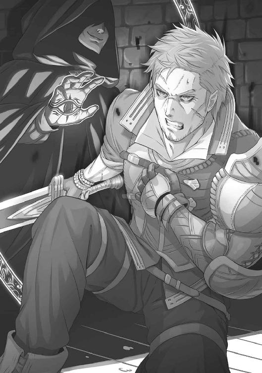
男の身体から、ふたたび黒っぽい煙状のものが立ちのぼっていた。あたかもローブを染める黒い『色』そのものが服から剝離したかのようだ。その『黒』はグラジスの身体にまとわりつくや、気体状の性質をいっぺんに変貌させ、それぞれが黒い鋼鉄をよじりあわせたような縄となって四肢を拘束した。
最後の一本がグラジスの首に巻きついてくる。
「うおおお」
グラジスが発した唸りは、しかし苦痛の声ではなかった。彼は渾身の力を込めて剣をひと振りした。身体に喰い込んだ縄によって全身から血が噴き出し、骨がきしもうとも構わなかった。
刀身が青ざめた光を放ったと見えたときには、剣を持つのとは逆の腕が解放されていた。引きちぎられた『黒』がばらばらになって消えていく。
「おお!?」
驚きを露わにしたのは、今度は黒ローブのほうだ。見る間に縄が断ち切られていくのを前に、
「まさか。薬の量が足りなかったか」黒ローブは心底恐ろしげに唸った。「しかしあれは魔界の〈七つ色の花〉アントランから抽出した薬で、竜の成体ですらたやすく眠りに落とせるほどのものだ。おそろしやグラジス、もはや人の子ではないわ」
グラジスは応えない。拘束からは解き放たれたとはいえ、いまので体力の大半を使い果たしたか、すでに剣の切っ先は床に落ちている。足腰も先ほど以上に定まっていない様子だ。
が、
（ぬ）
素顔さえ見えぬ男はローブの奥から警戒の唸りを発した。
グラジスの目は死んでいない。必殺の一撃を繰り出す好機を、茂みの奥から獲物を狙う肉食獣のごとき殺意をもってうかがっている。
普段はにこにこと笑顔を絶やさず、いかにも人の好い親父さんといった風情のグラジスだが、そうして剣をふたたび身構えようとしている姿はまさしく稀代の英雄そのもの。目つきは千の剣より鋭く、相対した者にとっては、万の兵と対峙しているに等しい圧迫感を感じるほどだったろう。
「おおお」
ローブ姿の男が吠えたのは、敵の発する無言の圧力に頭から嚙み砕かれてしまわぬよう、自らを鼓舞する意味あいもあったかもしれない。
彼は吠えながら懐からなにかを取り出した。人の頭蓋骨とほぼ同じ大きさをしたそれは、光ひと筋差し込まぬ海底の色をたたえた水晶玉のようである。
「まさか、ここにて禁断の術を解き放つ羽目になろうとは。グラジスよ、貴様に最大限の敬意を表する。だがこの術を解き放ったが最後、貴様の勝利はない」
グラジス、もはやひと声も返さず、爪先で鋭く床を蹴った。
ぐわっ、と重力さえ引き裂く勢いで躍りあがる。
グラジスの繰り出す剣が白光を放てば、ローブ姿の男が目線の位置まで掲げた水晶玉からは、黒い、闇の波動が放たれた。
同じころ、宴の催されていたホールからそそくさと立ち去る者があった。
聖剣団部隊長がひとり、〈魔人形遣い〉ゲルウィンである。
先述したとおり、彼は極度の人見知りで、人が大勢いる場所は苦手であった。いや、苦手などといった生易しいレベルではない。彼にとって他者の存在とは苦痛をもたらすもの以外の何者でもなかった。それは生死をわかちあう戦場でともに戦う聖剣団の仲間であっても同じことだ。彼が心を開いて接することができるのはこの世においてグラジス・エストールただひとりきりであった。
彼は常に、他者と触れあわねばならぬ機会においては、周囲に『護衛』を多数配していた。もちろん人嫌いの彼だからその『護衛』とやらも人間ではない。
魔法によって命を吹き込まれた人形──そう、ゴーレムだ。彼は戦場で用いていたような巨大ゴーレムばかりでなく、外見もサイズも様々な人形を用途にあわせて多数所持していて、今回のような宴席では一応雰囲気を配慮して、黒い礼服を着用させた若い男女のゴーレムを引きつれることにしている。精緻につくられているとはいえ、そこは人形なので、表情が変わることも自主的におしゃべりすることもなく、いわば等身大の人形が歩いているのと同じことだから、それはそれで出席者から不気味がられることも多い。
グラジスが退室してからほどなくして、ゲルウィンは挨拶もそこそこにホールをあとにしていた。団長がいないのでは、そこがどのような場所であれ、もうこの孤高の魔道士に居場所などはない。逆にいえば、グラジスさえいれば、戦場であろうと、他人の家であろうと、拷問器具の並んだ恐るべき敵陣営の牢獄であろうと、そここそがゲルウィンの居場所なのである。
宿舎にあてがわれた部屋に戻って、今夜も眠るまでの時間を魔道の研究に費やすつもりだったゲルウィンだ。
やや猫背気味に足を運んでいた彼だが、不意にその足を止めた。肌に突き刺さるような冷気があった。
（いかん）
ぼそっと声にもならない声でつぶやいたときには、彼は走り出していた。すでにその前後を若い男女のゴーレムが駆けている。命令を声に出す必要などはない。彼は常から意識の何割かを──すなわち〈手〉を配下の人形たちにつないでいる。
およそ運動といったたぐいのものがからっきし苦手な彼が、息を切らし、不格好によろめきながらも、必死の形相でひたすら走った。
駆けてきた先は、二階応接室。ゲルウィンにとっては迷いようがなかった。それほど強い魔力を肌身に感知したのである。
先頭のゴーレムに扉を開けさせた。
そこに、グラジス・エストールの姿があった。
「団長」
蚊の鳴くような声で安堵の感情を面に出したゲルウィンだったが、すぐに細い目が見開かれた。
グラジスの顔に生気はなかった。
どんなときでも、陽だまりの下で柔和に笑いかけてくる父親のようだった顔は、血の気を失い、表情をも失って、そのまま前のめりに倒れた。
その向こう側には、やはり同じ姿勢で意識を失っているログエル国の使者がいたが、ゲルウィンの目はそちらではなく、グラジスの背後に黒雲のごとくわだかまった闇の塊を見据えていた。
「貴様」
「ちいっ」闇の塊──すなわち、黒いローブ姿の男が舌打ちするのが聞こえた。「遅かったか。だが、いかに聖剣団といえど、この秘術は破れまい。肉体のほうはあとで貰い受けに来る。それまではそなたらに預けておくぞ。せいぜい大事に守りぬけ」
意味不明の言葉を発したかと思うと、黒ローブの男はグラジスの前にあらわれたときとは逆の経緯を辿って、徐々に実像を失わせていき、壁に投げかけられた影も同然の姿となっていた。
「ま、待てっ」
ゲルウィンは手をのばした。無言の命令を受けたゴーレムたちも三方から殺到した。
だがその直後、ゴーレムたちが正面衝突して、床に崩れ落ちた。ゲルウィンは息を吞みつつ足を止める。
影は、室内から完全に消え失せていた。
数分後には、その応接室に聖剣団の部隊長たちが全員顔を揃えていた。フィーネ・エストールも例外ではなく、〈顔なき影〉のリヴィも大広間で見たときと同様の姿で駆けつけている。
といっても、彼らは最初のうち、その事態を目の当たりにしても深刻な空気にはならなかった。
まさか、〝あの〟グラジス・エストールがこうも呆気なく命を絶たれようなどとは思いもしなかったし、酒の席での余興かなにかかと勘ちがいした者もいたほどだ。
ゲルウィンは慎重にグラジスの身体を検分した。目を閉じ、横たわっている団長の姿は深い眠りに陥っているかのようだ。
隊長たちが確信したように、グラジスは確かに命を奪われてはいなかった。
が、
「魂を抜かれている」
検分を終えたゲルウィンの結論は残酷であった。いや、正確にいえば、声を発したのは彼ではなく、彼の後ろにぴったりと寄り添った人型ゴーレムである。この場においてさえ、彼は他人と直接接することができず、自分の声で話すことができなかった。
元海賊の女首領ヒエンが鼻の頭に皺を寄せた。
「魂だって？」
ゲルウィンは頷いたが、声を出して説明したのはやはりゴーレム。
「魔界から力を借りるという、禁断の黒魔術によって、団長は肉体をそのままに魂だけ持ち去られたのだ。黒魔術は、われわれが扱っているような魔法とはその次元が異なる」ゲルウィンはゴーレムに話をさせながら、自らは肩を震わせていた。「由来を語れば長くなる。その昔、切り離した意識のいきどころに迷い、あろうことか三界の掟を破って魔界の〈門〉を開いた魔道士がいた。その直後に巻き起こった、〈門〉を巡る大戦争は皆も知ってのとおり──」
「いや、知らねえよ」苛立ったヒエンが口を挟む。「由来なんざどうだっていい。黒魔術ってのはあれだろう、カーラーンの王が復活させたって魔法だ。それさえわかれば十分じゃねえか。で、いま知りたいことはただひとつ、魂を抜かれたという団長はどうなるんだ？ いつになったら目を覚ます？」
ヒエンだけでなく、ラッセル、ベアラー、スィー、リヴィ、そしてもちろんフィーネも固唾を吞んで次の言葉を待つ。
「無理だ。このままでは、団長は目覚めない」
そういったゴーレムは人形そのもので、表情にも声にもおよそ感情といったものが感じられない。だが、それを操るゲルウィンの顔面は蒼白になっていた。
「あの秘術を使ったということは、カーラーンは、人間の魂を閉じ込められる唯一の物質、ダコール石の水晶をもよみがえらせたにちがいない。この谷に忍び込んだ魔道士は、その水晶に団長の魂を閉じ込めて連れ去ってしまった。魂を奪い返さない以上、ここにある団長の肉体は中身を失ったただの器も同然。もう声を発することも、指一本動くこともない。そう──、わたしの使役するゴーレムたちと同じだ」
フィーネをはじめ、聖剣団員は皆無言になった。
ほどなくして、
「手前！」
ゴーレムの陰に隠れる形になっていたゲルウィンを、ヒエンが力任せに引っぱりあげた。全身のバランスがいいから、遠目には細くさえ見えるヒエンだが、瘦せこけたゲルウィンと並ぶと大人と子供ほどの体格差がある。
「谷や宿舎の守りは、手前のゴーレムたちが請け負っていたはずだろう。彼らの『目』はおまえ自身の『目』と同じだといっていたはずだぜ。それが、どうしてむざむざと侵入を許した！」
「よさないか、ヒエン」
〈竜殺し〉の騎士ラッセルが割って入った。
「侵入を許した、という意味では、われわれとて同罪だぞ。彼ひとりを責めるのは道義に反する」
「うるせえ！」
ヒエンはゲルウィンの身体を軽々と放り投げた。背後に控えていたゴーレムがかろうじてキャッチに成功する。ラッセルとヒエンがにらみあうのを、
「仲間内で争っている場合ではない」ベアラーが深みのある声で制する。「いますぐに全員の部隊を総動員させ、ラグナの谷内外を手わけして捜すといたそう。その魔道士とやらを捕まえれば、魂をもとに戻せるのであろう？」
ゴーレムの腕に抱かれながら、ゲルウィンはおびえた表情で首を上下させた。
聖剣団はいったん散り散りになった。
そして彼らが同じ部屋に戻ってきたのは、夜も深まってだいぶ経つころ。
全員の顔が疲れと焦燥に満ちている。たとえ雲霞のごとく押し寄せてくる敵軍勢と一昼夜かけて戦いに戦って、頭のてっぺんからつま先まで返り血にまみれようが、疲れのかけらも見せないような連中が、揃いも揃って憔悴している。
なんの成果も挙げられなかったのは一目瞭然であった。
ヒエンはギリギリと歯を嚙みしめながら、
「ゲルウィン、例の魔道士は最初、ログエルの使者に取り憑いていたとかいったな。あいつを拷問にかけてでも首謀者を暴きだせ」
「使者にはすでにあれこれと術を試してみたのよ」応じたのはスィー・ラン。「だけど、国を出立してからの記憶を失っている。おそらくログエルも、そして彼自身もこの事件には無関係だと思うわ」
「なら、このまま敵地へ殴り込みだ！」
そう息巻いたヒエンは、ここに集まる以前からそのつもりだったのだろう、すでに完全武装している。
「敵地とはいったいどこのことだ、ヒエン？」
冷ややかにたしなめたのはラッセル。ヒエンは獣の牙にも似た犬歯を剝いて、
「さっきもいっただろう、団長の魂を抜いたのは黒魔術。そんな物騒なものを操っているのはカーラーンだけだ。だから、カーラーンを叩く！」
「こちらから攻め入ったことなど一度としてないのよ」スィー・ランがやはり冷たくいい放った。「大体、そのような真似ができていれば、わたしたちの戦いはすでに終結していたはず。団長のいないいま、軽はずみな行動は慎むべきだわ」
「それに」ベアラーが首に巻きつけた頭蓋骨の数珠を握りながらいった。「敵地に攻め入ったところで、団長の魂を人質に取られたのでは意味がなかろう。ゲルウィン、ほかに方法はないものか？」
「肉体と魂は本来ひとつのもの。結びつきあう習性がある。離れ離れになった肉体と魂を自然と引きあわせる秘術もあるとは聞くが」
「なら、その方法をそれぞれ探索すべきだ」
「くそったれが、まだるっこしいんだよ。おい、ゲルウィン、ついてこい。あたしといっしょにカーラーンに乗り込むぞ」
「わ、わたしは......」
意見がばらばらに割れていた。人見知りの激しい魔法使いゲルウィン、そして本来グラジスしか信用する者のないスィーなど、グラジスがいなくなっただけでもうこの場にいたくないというような者まである。
「ヒエン、勝手な真似をするな。おまえの勝手な行動が、今度は団長の命をも危うくするかもしれん。今度という今度は許さんぞ」
「許さないだと？ 手前のお許しをもらうつもりなど、はなからないね。おまえといっしょになにかをやってきたつもりもない。あたしはあたしで好きにさせてもらうさ」
「これでもか？」
ラッセルがいよいよ剣を引き抜いた。無論、ヒエンは一歩たりとて引かない。「望むところだ」といわんばかりに身構えようとする。
「くだらないいさかいはやめることね」鼻で笑い飛ばしたのはスィーだ。「ここであなたたちが殺しあったところで、なんになるというの？ 死骸を片づける手間が増えるだけよ」
「手前もだ、スィー！ いつもいつも高みから見くだすようなこといいやがって。いつか手前の澄ました顔に張り手のひとつも見舞いたかったところだ」
「いつかといわず、いまやってみせたらどう、ヒエン？ 望みがかなうかどうかは保証しないけれど」
「待って、皆、待ってください！」
フィーネは誰かと誰かが険悪になろうとするたび、声を張りあげ、小柄な身体を割って入らせて、必死に制しようとした。
団長が魔道の呪いにかけられたことにいちばんのショックを味わっているのはほかならない彼女だ。
父親が目を閉じて横たわっている姿は、何度見てもただ眠っているだけのようにしか見えず、いまにも、
（おはよう、フィーネ。今日はまた馬鹿に早いな。昨日は飲みすぎて頭が痛い。水を持ってきてくれないか）
と優しく声をかけてきそうだった。
だが父はまるで目覚めようとしないばかりか、瞼ひとつ動かさず、血色も段々と失せてきて、その肉体はあたかも英雄グラジス・エストールの姿を精巧に写し取った彫像のようにさえ見えてくる。
（魂を抜かれた）
（もう目覚めない）
ゲルウィンからそう説明されて以降、フィーネは目に見えない誰かの手でずっと首を絞めつづけられているような、そんな圧迫感を味わいつづけてきた。正直、自分が現実のただなかにいるのか、それとも悪い夢に囚らわれてずっとうなされているだけなのか、それすらもわかりかねるような状況だったが、フィーネが味わった衝撃は父が倒れたことばかりが原因ではない。
「ベアラー、そのでかい図体が邪魔だ、どけっ。その小僧と女狐に今日という今日こそ思い知らせてやる」
「小人ども度しがたし。草葉の陰で団長も泣いておられるわ」
「まだ死んでねえっ。〈死霊神官〉の手前がいうと縁起でもねえんだよ、この腐れ坊主が」
「ほほう、霊峰マクリアの寺にて顕密極めしわしによういうた。その毒ひとつ吐いただけで、極楽浄土への道は閉ざされたと覚悟するがいいわ」
いま、目の前で繰りひろげられている争いの図。
聖剣団を構成する部隊長の面々は、確かに普段から仲がよすぎるということはなかった。
だが、ひとたび谷に外敵が迫り、父の掛け声ひとつあれば、どのような強国の軍隊よりもはるかにかたく結束して、ほかの何者にも決して断ち切れぬ絆をももって決死の戦いにいく度となく挑んできた。その、無敵を誇った聖剣団がこうもたやすくバラバラになってしまったことにこそ、フィーネは世界がひっくり返るほどの衝撃を受けていたのだ。
「確かにここで争っている時間も惜しい。命だけは預けておいてやろう、ヒエン」ラッセルは唇を引き結んだまま剣を腰におさめた。「おまえはおまえのやり方で好きにするがいい。おれはおれの方法で、団長を取り戻す。ただしそのとき、もしおまえの『やり方』とやらがおれの邪魔になるようなら──、わかっているな？」
「こっちの台詞だ、ラッセル」
「待って、ラッセル──お待ちなさい、ヒエン！」
フィーネはなおも懸命に声を張りあげるのだが、誰も聞く耳を持とうとしない。
ラッセル・アーヴェンが去って、ヒエン・インコルマがその姿を消えさせると、複数のゴーレムとともにゲルウィンもが部屋をあとにし、スィーとリヴィもそれにつづいた。
「申しわけない、お嬢」
最後に呆然としたフィーネの肩を叩いたのは、ベアラーだ。
「皆ああはいっているが、団長の身を案じているのは同じだ。団長は必ずもとに戻してみせる。お嬢はここで、お父上の身を守っておいてほしい」
大柄な背中を向け、結局は彼も部屋を立ち去っていった。
残されたのはフィーネ・エストールただひとりきりだった。
（手腕──）
という言葉がぽつりと彼女の脳裏に浮いた。ログエルのクロム王子がいっていた。
一騎当千の聖剣団を統率していたのは、グラジス・エストールの手腕。
いいかえるなら、グラジス・エストールただひとりの手腕。
そのグラジスの意識がない以上、彼らが糸を切られた真珠のネックレスのように、結びつきを失ってばらばらと床に落ちていくのは、ある意味必然。
どれくらい、ひとりきりで立ち尽くしてたろう。窓の外がそろそろ白みはじめようかというころあい、近づいてくる荒々しい足音があった。
はっとフィーネはそちらに目を向ける。誰かが戻ってきてくれたのだろうか。目もとをすばやく拭った彼女だったが、部屋に飛び込んできたのはラグナの谷の兵士であった。
「申しあげます──」
兵は、部屋にいるのがフィーネひとりと、まるで眠ったように突っ伏したグラジスだけなのに驚いた様子だった。が、緊急の用件なのだろう、兜の下の顔は汗にまみれている。
「何事です？」
かろうじて虚勢を張って、フィーネは聞いた。
「はっ、て、敵襲です」
「敵？」
呆然としたような自分の声を、フィーネは他人のそれのように耳にしていた。
「カーラーン国の部隊が、わが谷に向けて再侵攻をはじめております！」
３
これは、カーラーン国大隊長ヴァニスの手柄だ。
ラグナの谷への侵攻軍司令官を任じられた将ドレームの副官である。ヴァニスはそのドレームから撤退する軍のしんがりを任されていたが、足を負傷してどのみち遠くまでは逃げられなかった。しかしながら聖剣団はもともと執拗な追撃はしかけてこない。今回もかろうじて生きのびることができた、と安堵しつつも、おめおめと本国には帰れまいという暗澹たる気分でもあった。
つまりはここで手柄のひとつも挙げねば『次』がないというほど追い込まれた立場であったわけだ。
だからいったん撤退の足を止めると、谷近辺に斥候を放った。敵が大勝利に浮かれていればつけ入る隙のひとつもあるのではないかという淡い期待でしかなかった。が、これが思わぬ報告を彼にもたらした。
聖剣団の部隊長たちが次々と谷を離れているというのだ。ヴァニスは当然知らぬことながら、団長を欠いた彼らは統率面ばかりか、配慮においても大幅に欠けるところがあり、ひとりひとりが勝手に、それも大急ぎで出立したために斥候の目についたのである。
聖剣団の強さは、部隊長各々の武力によるところが大きい。これが揃って不在となると、つけ入る隙どころではなかった。
（大勝利）
夢にまで描いていた事態が目前にあるとあって、ヴァニスは決断した。
こちらを引き込む罠か、という疑惑もあるにはあったが、どのみち、先ほど述べたように目に見えた戦果のひとつもなければ『次』はない。
彼はしんがりを任されていた自分の部隊と、近辺を逃げ惑っていた残存勢力をまとめあげた。
カーラーン国軍は他勢力から『魔軍』などと呼ばれて、揶揄され、あるいは恐れられている。幻獣や魔物といった、他国ではあり得ぬ兵力が存在するからだが、それら『魔軍』の象徴はなにも飼いならしたりカーラーンに忠誠を誓わせたりしたものではなく、魔法によって操られているものである。今回、魔法士たちの大半は戦場で討たれたか、あるいは優先して逃がさねばならぬ立場にあったため、幻獣や魔物のたぐいは集められなかった。が、
「それでこそ」
とヴァニスは勢い込んでいる。昔かたぎの軍人である彼は、魔法やら化け物やらが軍事にかかわるのを嫌っていた。そういう意味では、上官のドレームとて、ヴァニスには嫌悪の対象である。聖剣団との戦いで右腕を失ったドレームは、王に直訴までして魔界との契約をおこない、失った腕の代わりに魔物の腕を得ていたからだ。
ここ数年で急激に魔法の力を高めた王にうべなうつもりであったとしか思えない。
「われわれの剣で谷を切り取るぞ。国王に、われらカーラーン戦士の力をお見せするいい機会だ」
五百ほど集まった兵を前にして、髭を震わせながらヴァニスは剣を振りあげた。
夜明け寸前に、ラグナの谷への再侵攻を開始。
この時刻特有に、谷の風景は水に溶けたような色あいに支配されていた。
芸術的とすらいっていい風景を、武装した兵士の群れが、花を犯す甲虫さながらに赤黒い色を添えながら侵食していく。
カーラーン軍は、これまで経験した八度の敗戦を思えば、呆気ないほど守りを突破することができた。
なにしろ谷の入り口を常から守っている巨大ゴーレムはまったく動こうとしない。
こうなればただの彫像も同然なので、兵たちは景気づけに青銅のかけらを切り取ったり、落書きしたり、あまつさえ味方にはやしたてられるまま小便を引っかける者さえ出た。
ゴーレムが動かず、またゲルウィンやスィーが仕掛けてあるはずの魔法の罠さえ発動しないことから、ヴァニスは部隊長たちが不在にしているという確信を得た。
ますます勢いづいたカーラーン軍が、谷の入り口からどっとばかりに雪崩れ込む。
あわてて駆けつけてきた谷側の兵士にも統率はなく、申しわけていどに矢を放ち、剣をあわせては背を向けて逃げ散っていくだけ。
「ここがラグナの谷か！」
ヴァニスは興奮して、足の負傷も忘れて最前線に出ていた。自ら剣を振るって兵の頭をひとつ、二つと刎ねながら、
「そしてこれがラグナの谷か！ いち早く逃げたドレームの馬鹿垂れめ、今宵は散々おれの手柄話を聞かせてやるからな」
といっても、五百のうちヴァニス直属の兵は百にも満たない。あとはもう、少しでも金品を得ようと家々に押し入ったり、蔵を打ち壊したりと、好き勝手に暴れまわるばかりだ。
ヴァニスも黙認した。ご馳走を前にした犬を蹴飛ばそうとすれば、それがたとえ飼いならした犬であっても嚙みついてこよう。かえって統率が乱れるだけなので、彼は直属の兵のみで、谷の要衝を押さえようと行動を開始した。
例の、自称『カーラーン国の精鋭』少年魔法士ダークが牢から解放されたのもこのときである。
ひと振りの杖を手にしている。捕らえられた兵たちは当然武具を奪われていたが、あとで整理する予定であったか、ひとまとめにして土牢の上層部に放り投げられていた。ダークは戦場で手にしていた唯一のその武器を取り戻したのである。
地下から抜け出ることに成功すると、ダークは思いきりのびをして新鮮な空気をひと吸いした。
「さて」
とばかりに駆け出そうとする。とりあえず部隊と合流しようとしていたベオルとは逆方向だ。
「おい、どこへいく？」
「味方がいってたろ、あのにっくき聖剣団がいないと来た。復讐を果たせないのは残念だがよ、せっかくの機会だ。仲間に取られる前にいちばんの手柄を頂くんだよ」
説明しているようでいて、いい終えるころにはもうベオルなど見えない距離にいる。
彼は彼でヴァニスに負けず劣らず高揚していた。
（見ろ、見ろ、見ろ）
（おれのこの悪運の強さを。どんな窮地に立たされても、おればかりは必ず命が助かるようになってるんだ。ああ、天よ、そんなにもおれを愛して、いったいこのおれになにをさせようとしていやがるのですか？）
「天下統一だなんて、そんな、畏れ多い」
ひとり言をつぶやいて、でへへと照れ笑いを浮かべる。気色悪いことこの上ない。
が、ダークもひとりきりで大手柄を挙げようと考えるほどのぼせあがってはいなかった。
その証拠に、走りながら〈手〉をのばしていた。本来なら時間のかかる作業だが、すでに地下牢で組みあげた〈手〉があるため通常より速い。
地下ではまったく反応がなかったが、今回はすぐに〈手〉ごたえを感じた。
「なんだ、近くにいやがったな」
ということは、牢のなかには〈手〉を──つまりこちらの魔法を無効化する仕掛けかなにかがあったと思われる。〈手〉を遮断し、外部へ魔法の効果が届くのを阻止していたのであろう。
〈手〉ごたえは三つあった。ダークがこれを自分のもとへ導こうとすると、一瞬抵抗するような素振りがあったが、ぐいっとなかば強引に手もとへ引き寄せる。
ほどなくして、谷の斜面から、木々の合間から、土塀の陰から──三つの人影がのそのそと這い出てきた。
いや、人間ではない。背丈は低く、せいぜい十代なかごろの少年ていどだが、節くれだった腕のほうは異常に長く、常に前屈みの姿勢でいるために地面に届きそうなほどだ。目は左右の角度を変えて不自然なくらい吊りあがり、鼻は手で押されたみたいに潰れ、めくれあがった上唇には二本の牙が覗く。なにより、額の辺りからちょこんともののついでみたいに生えた一対の角からその素性が知れた。
ゴルボと呼ばれる種類の小鬼族である。
通常、薄暗い洞窟や山奥で暮らしている種族だが、時には十匹ていどで徒党を組んで村を襲って家畜を奪うこともあり、また非常に稀だが人間そのものを喰うことすらある。しかしこの三匹に関してはダークの部下という位置づけだった。正確には、単純な上下関係があるわけではなく、いわば心の一部を強制的に『共有』している形なのだが、詳細はおいておく。
「よし、揃ったな、ゴーン、ルーン、ボーン」
三匹のゴルボ族は踵を揃えて直立した。それぞれにつけた名前をダークは気に入っていたが、これだけで彼のセンスの度合いがはかれようというものだ。
「いまからもうひと働きするぞ」
ダークがびしっと指を突きつけて命令すると、ゴルボ族は互いに顔を見あわせた。戦場から奪ったり、使い捨てられたりした武器や甲冑を身につけている。一匹の兜はあきらかに大きすぎて、顔を動かすたびにずれ動いていた。
「なんだ、その不満そうな顔は」
ゴルボ族は三匹ともに鼻からブーブーと濁った息を洩らしている。
「ブーブーじゃない。おまえら、ご主人さまの一世一代の好機だぞ。いつもいつもネズミや草を喰うばかりの生活でいいのか。いいか、今日はご馳走してやろうというんだ。異論はないな」
ダークは頭のなかで精いっぱいのご馳走を思い描いた。そのイメージを共有したゴルボ族たちのテンションが傍目にもあきらかなほど上昇する。涎を垂らしつつ、ぱちぱちと不器用に手を叩いたり、足を踏み鳴らしたりして喜びを表現していた。
「決まった。ならいくぞ！」
本来、ダークが使役する魔物はもう一匹存在するのだが、なにしろ行動範囲が広いのでいったんはぐれるとなかなか〈手〉でも探れない。いまはこの三匹の『精鋭』で我慢するほかはなかった。
三匹を前に押し出して、ダークは後方からついていく。
すでにカーラーン軍の仲間たちが家々を襲い、略奪行為にいそしんでいたがそちらには目もくれない。むしろ目先の利益にたかる彼らが憐れと感じるほどで、ダークが目指すべきはもっと大きなものだ。
「化け物め！」
と、右方から斬りかかってきた兵士がいた。ダークの位置からは見えないはずだが、彼は小鬼族と心ばかりではなく視界をも共有することができる。いわば視野が数倍にも膨れあがっている状態だった。襲撃を見て取ったダークは、脳に信号が駆け巡るのとほぼ同じ速度で、声なき命令を前方のゴルボ族に届けた。
錆を吹いた曲刀で敵兵の繰りだした槍を撥ねあげる。体勢を崩した兵の足をそのまま返す刀で払った。
「うわっ」
と声をあげ、太腿から血のりをあふれさせつつ兵が転倒する。
と、ダークの意識野が血と同じ真っ赤な色に染まりあがった。興奮したゴルボ族の本能が殺戮を求めて荒れくるっているのだ。それを、
「雑魚に構うな！」
今度は声をあげてダークが命令する。意思や五感を共有している以上、相手側の精神力がダークを上まわれば、今度はダークのほうが意識を引きずり込まれる危険性がある。
幸い、ダークがこのゴルボ族たちを使役するようになって長い。ゴーン、ルーン、ボーンの精神的な『癖』は知り抜いていた。強引に意識を引き戻すと、ふたたび自分の前を駆けさせる。
奥へ奥へと進もうとするのだが、逃げ惑う人波もその都度増えて前進がままならない。
と、ルーンの視界が右方の路地に向いた。
狭い路地の向こうに開けた場所がある。そこに、鎧兜姿の人影を見つけたのだ。
ぴかぴかの鎧が、小柄な身体にはいかにも似つかわしくない。まるで子供が『騎士ごっこ』をやっているようにすら見える。
（いた！）
あいつにまちがいない。八人目の聖剣団。今日の戦闘で、ダークに地べたの味をいやというほど味わわせてくれた相手だ。
そのからくりはいまもって不明だが、こうして遠目にすると、やはりその姿は子供以外の何者でもなく、
（油断さえしなきゃ、次は絶対勝てる）
と思えた。勝てる、ということは、あの無敵の聖剣団、そのひとりを地べたに叩きつけてやれるということだ。ほかならない、この魔道士ダークが！
が、その狭い路地を入っていく老人がいた。おかげで小柄な影を見失いそうになる。
「おい、じじい、どけ。なにをちんたら走ってやがる」
ダークは怒鳴り声をあげるのだが、腰の曲がった老人は逃げるので精いっぱいだ。後ろから凶暴な顔つきをした小鬼族が迫っているのだから、それは当然だろう。ふがふがと口から声にならない息を洩らしていた。
「ああ、もう！」
ダークは髪を搔きむしって、仕方なく強硬手段に出た。彼は冷酷無情で知られるカーラーン軍の兵士だ。この場合、手段を選んでなどいられない。
ダークの命令を理解したゴルボ族ルーンが足を速めた。どすどすと足音も荒々しく一気に老人との距離を詰める。節くれだった緑色の腕がのびた。振り返った老人の顔が一気に青ざめる。それをルーンと共有した視界で正面からとらえながら、
「悪いな、爺さん」ダークはニヒルに微笑んだ。「運命を呪いな」
ルーンの腕がついに老人の肩を摑んだ。
ひょいとばかりに両腕で老人を担ぎあげると、そのまま速度も落とさず駆け抜けた。
路地の反対側につくのと同時に老人を地面におろす。あとを駆けてきたダークは、腰を抜かした様子のご老体に一瞥をくれて、
「ゴルボ族の体臭はきついぞ。孫に嫌われたくなかったら、今日の湯浴みにいつもの倍は時間をかけろ」
といい捨てて、さらに走った。
なんとも無情。
ともあれ、例の、小柄な人影は広場の中央にいた。ほかに仲間らしき姿はない。今日のダークはとことんツキに恵まれているらしかった。
「よし、陣形配置壱！」
ダークがひと声あげると、ゴルボ族たちはダークの前方で左右に散り、後方中央のダークを含めて菱形状の配置となった。
「聖剣団、お覚悟召されい」
先頭のゴルボ族が跳躍する。小柄な鎧兜はあきらかにそちらへ意識を奪われた。その隙に左右から仲間のゴルボ族が疾走。
駄目押しに、ダーク本人も正面から駆ける。振りかざした杖からばちっと稲光が散った。彼が所有する唯一の武器で、魔法の力が蓄えてある。これで一撃されれば、大の大人でも昏倒を免れない。
四つの視界が、それぞれの角度から鎧兜姿をとらえる。もはや敵に逃げ道はなかった。
なにより、敵が腰から引き抜きかけた柄の先には刀身がない。
「もらったああああ」
喜色満面に叫んだダークの、「あああ」という語尾が、急激に、
「はぶしっ!?」
奇怪な叫び声に取って代わって、そして消えた。
気がつけば、ダークは蛙のように腹を天に向けて倒れていた。ほかの視界も同じことだ。ということは、ゴルボ族たちもまったく同じ目にあったということだ。わずか一瞬にして。
と、朝の訪れに闇を駆逐されかけている空に、別のものが映りこんだ。
顔をすっぽり覆う兜の持ち主は、その手で面の部分を上へと跳ねあげた。
翡翠色をした双眸があらわれる。と同時に空気に触れた素顔は驚くほど白く、また予想していたよりもずっと幼かった。
確か、名前はフィーネ・エストール。
目が美しく切れあがって、鼻筋は通り、唇は控えめなほどに小さい。しかし幼さのせいもあってか、女性の艶めいたものは微塵も感じさせず、一見、美少年とまちがえそうなくらいだ。
おかしな沈黙が吹きわたった。
「や、やい」
生殺しのような状態に耐えかねて、ダークのほうから声をかけた。
「なにをじろじろと見ていやがる。敗者になったとはいえ、おれは正々堂々、手前と一騎打ちした身だぞ。これ以上戦士を辱めるつもりか」
正々堂々でもなければ一騎打ちでもなかったはずだが、こういうとききっぱりと噓をいいのけられるのはダークの強みである。
「さあ、殺せ」
ダークはあえて自分から胸の部分を指差した。
潔い敗者の態度であったが、ダークはもちろん自分の悪運が尽きたなどとは思っていない。いや、実はほんのちょっぴり、
（あれ、おれ、やばいかも）
とは思っているのだが、最後まで生への執着を失うような男ではなかった。
彼は天へ向けてひとつ嘆息して、
「なあ、殺すのはいいが、おれの最後の頼みを聞いてくれないか。ラグナの谷から東、ティオルグ火山を越えた先に、おれの生まれ故郷がある。そこでは年老いたおれの両親と幼い妹、それと結婚を誓いあった幼馴染の少女がおれの帰りを待っているのだ。いずれその身が空いたときでいい、そこへいって、彼らにおれの最期を伝えてくれ。最後までダークは立派で、雄々しく戦った、と。なに、家族も覚悟はできている。死力を尽くして戦った強敵相手に、恨みを抱くことなどあるまい」
べらべらとよくもまあしゃべる。
相手が自分より幼い身だと知ればこそ、こうして同情を誘い、隙のひとつでも見つけられまいかとしているのだが、この少年、いやちがったこの少女、まったく、これっぽっちも動揺の気配がない。というか、聞いているのかどうかも怪しくなるほど、先ほどから一心に穴が空くほどダークを見つめているきり。
「あとは......そう、家にいる犬っころにも餌をやってくれないか。あいつはおれが子供のときに拾った犬なんだ。雨に打たれて、ぶるぶると震えていてさあ。抱きあげたときのぬくもりと、甘えたような鳴き声が、ああ、いまも忘れられない」
「ふむ」
そろそろ同情を引くネタも尽きかけたころ、長い沈黙を破ってフィーネが口を利いた。ダークの近くで同じくひっくり返っている小鬼族たちを見わたすと、
「誰もいないよりはよいでしょう。命ばかりは助けてあげます。その代わり、おまえ、わたしのものになりなさい」
とんでもないことをいってのけた。
さすがのダークも芝居を忘れてぽかんとなり、それから立場のほうも忘れて頭から湯気を噴かんばかりになった。
「さっきからじろじろ見ていやがると思ったら、アレか、おれにひと目惚れしたってか。まあそれも無理はないが、腐ってもこのダーク、命惜しさに手前みたいなガキの男娼になんぞなれるかってんだ。ふざけやがって、あんまり笑えねえことばかりいうようなら、鎧兜剝いて、地べたに押さえつけてゴルボ族に尻捧げちまうぞこのガキ」
ついには『地』をさらけ出してわめきまくるダークに、少女剣士は一歩詰め寄った。
とともに手にしていた剣の柄を捧げ持った。
相変わらずその先にはなにもない。
いや、ないはずだった。
フィーネがその柄を逆手に握ったまま振りあげた刹那、ダークの目にはきらりと光を放つ刀身部分が柄からのびたように見えたのである。
狙いは過たなかった。「命ばかりは助ける」というありがたい宣言もどこへやら、切っ先はダークの胸をひと刺ししていた。
「う」
ダークはびくんと背中を痙攣させて、胸に潜り込んだ刀身を愕然と眺めた。
「う、噓つきい」
人生最期にしてはしまらない言葉を紡いで、ダークはがくりと首を後方に折って、そして、動かなくなった。
４
死の瞬間、記憶が走馬灯のように駆け巡るのだという。
しかしダークの脳裏に浮かんだのは、暗く曲がりくねった一本の道。
そこを、息を切らしながら駆け抜けていく自身の姿でしかなかった。
（ああ）
ダークは慨嘆した。
思えば、いつもなにかに追い立てられるままに、夜道を汗だくで走っていた覚えがある。
生まれ故郷の村を飛び出したのはわずか一年前。
「おまえは歴史に残る傑物となる」
というある人物から授けられた予言を信じて、青雲の志を胸に、夜半、村を出た。
出たはいいが、十日後くらいにはさっそく挫折しそうになった。なけなしの路銀も尽き果てたので、空よりも高かった志はどこへやら、食い逃げ、かっぱらいでかろうじて糊口をしのぐようになった。
畑から作物を盗んでは、鍬を振りあげた筋骨たくましい百姓たちに追われることも日常茶飯事であった。
そればかりではない。このご時世、少年のひとり旅はいうまでもなく危険に満ちている。いく度となく山賊に襲われかけ、その都度命からがら逃げのびた。
しかし数ヶ月後には、結局食い詰めて、自分を襲ったのと同じ連中に仲間入りするまで落ちぶれた。まだまだ未熟者だったとはいえ、一応魔法を扱えるダークは、山賊、夜盗のたぐいにならば腕を買われる身分でもあったのだ。
（いまだけだ）
とダークは胸に決めた。後世に名を残した英雄とて若いうちは海賊、盗賊であった、という人物は数多い。
（いまはまだ雌伏のときである）
ダークはいつもながら未来の大人物になりきることで、ただひと切れの肉と、硬いパン、野菜のスープ欲しさに盗人集団にまで落ちぶれたわが身を慰めた。
が、その集団に入って、最初に襲った荷駄隊が、なんの因果かカーラーンの所属であった。
油断しきっていた隊から荷物を奪うことには成功したが、その後、護衛の兵たちに死ぬほど追いかけられた。悪いことに護衛のなかには魔法士もいた。カーラーンの黒魔法士たちは、禁断の秘術を紐解いた国王自身からじきじきに力を与えられた者たちだという。彼らの使役する、疲れ知らずの猟犬──めらめらと炎を宿した目に、霧のような身体をした狼、すなわち異界の獣に追い立てられて、魔法で抵抗する間もなく追い詰められた。
追いついてきた兵たちに縛りあげられたが、
「こんな奴らを本隊につれていったところで、報奨金が出るはずもなし、つれていく手間が面倒なだけだな」
「いっそこいつらには逃げられたことにして、荷物をおれたちで山分けして売りさばいたほうがよくないか？」
「よし、ならこいつらはここで処刑しちまおう」
あまりにあまりなご裁断に、ダークは必死で抗った。とはいえその場を切り抜ける便利な魔法などは持ちあわせていなかったため、残された最後の武器といえば考えるより先に動く軽やかな舌しかなかった。
「前々からカーラーンに憧れていたんです。禁断の力を解放して近隣諸国を切り伏せる、ってかっこいいじゃないですか。この古い時代の殻を打ち壊して、新たな時代への扉を開くのはカーラーン以外にはないんじゃないかと常々思っておりました。部隊の末端に加えていただけるなら、給金もさほど要りません。どうかこのケチな魔法使いめの力をお役に立ててくだせえ」
そうへりくだったかと思えば、
「なにを、こいつ。適当なこと抜かしやがって」
まだ若い兵の不興を買ってしまい、いよいよ剣を喉もとに突きつけられた際には、
「馬鹿め、まだわからぬか」いきなり大上段に構えて怒鳴り声をあげた。「このおれ、未来の傑物ダークがカーラーンに力を貸そうといっているのだ。おまえらの荷物を奪ったのも、おまえたちの力を試したかったがため。そのおれがカーラーンこそ身命をかけて仕えるにふさわしい国だと決断したのだ。いいだろう、このままおれの首を断ち切るがいい。ただしおまえたちの一存でそうしたということは、あとで国王陛下のお耳にこのことが入ったとき、責任を取らされるのもおまえたちだということだ。今日おれの首を刎ねた剣が、明日はおまえたちの首を宙に撥ねあげる、などということにならなければいいがな」
巧みな弁舌、というよりはもはや情緒不安定、あるいは気が触れて戯言を抜かしている人間の領域だ。いや、実際刃を突きつけられた状態ではまともでなどいられなかった。とっくの昔に汗、涙、鼻水はだだ洩れになっている。失禁も時間の問題であったが、このとき、
「面白い」
とダークの態度を気に入ってくれた人物があって、命拾いし、ついでにカーラーンの部隊に加わることもできた。
カーラーンといえば、つい数年前まで歴史が古いだけが取り得のような小国であったのが、ここ数年で一気に勢力を拡大した南方の雄。たとえ末端であれ、その部隊に取り入れられたということは、
（ツキが向いてきた）
ということにもほかならない。村を飛び出て一年。あれこれと道に迷ってきたが、ようやく働き場所を得て、ここから英雄物語のはじまりだという実感があった。数々の手柄を立てて、故郷に錦を飾る自分の姿をダークは恍惚感とともに夢想したものだ。
が、その後の経緯は何度も語ってきたとおり。
結局はラグナの谷の侵攻戦で八度失敗し、このざまだ。
走馬灯とやらはろくすっぽ感動的な場面を映すこともなく、すぐにネタ切れした。
「ちくしょう」
最後の最後までしまらねえ──そう思ってつぶやいたダークは、「ん？」と薄目を開けた。
先ほどよりやや明るさの増した空がひろがっていた。すう、はあ、と呼吸する。ややいがらっぽい煙が忍び込んできたが、あとは清涼そのもの、朝の空気だ。
「おれ、生きている？」
「生きてますよ」
その空の端っこにちょこんと顔を覗かせた少女が請けあってくれたが、
「いまは、まだ」
となにやら不気味な台詞をつけ足した。
「いまは？」
「あなたの命はもはやわたしの胸三寸にあるということです。これを見なさい」
フィーネは例の柄を見せつけた。その先に刀身はない。
「これは、父から賜った聖剣ゼス。柄のみに見えるでしょうが、刀身はわたしの意思によって自在に発現する、魔法の剣なのです。長さも幅も調節自在。もっとも、わたしの未熟な腕ではそれほど巨大化させられるわけではありませんが」
淡々としたものいいに、
「はあ」
としかダークは返せない。
「その聖剣ゼスの刀身の一部を、あなたの心臓に埋め込みました。これがどういう意味かおわかりですか？」
「いや、わからんね」
「もう少々お考えになってから返事なさってもよろしかろうとは思いますが。なにしろあなたのお命にかかわることです」
「だから、どういう意味だ？」
「あなたの心臓に突き刺さった目に見えない刀身は、わたしの意思と直結しているのです。いまでこそそれは存在してないに等しく、すなわち無害ですが、わたしフィーネがひとたびあなたを殺すと決断したならば、たちどころに鋼鉄の姿を取り戻して、そのときにこそ心臓を冷たい刃に貫かれたあなたは死にいたるでしょう」
「噓っ!?」
「本当」
「なんだ噓か」
「本当です」
現実逃避するダークをあざ笑うように──実際は表情ひとつ変えぬまま──少女はあっさりといいのけ、それからなにを思ってか、手にした柄を後方へと振った。
ちょうどそのとき、後方からカーラーン軍兵士が二名、そろそろと忍び寄っていたのだ。
遅ればせながらそれに気づいたダークは、思わず胸のうちで、
（頑張れ、それいけ、やれいけ）
と彼らにエールを送っていたのだが、そのときにはすでに手遅れであった。背後から躍りかかった兵二名は、揃って空中でなにかに撃ち落とされたがごとく、背中から地面に叩きつけられていた。
「おわかりになりましたか？」
少女は、ダークのほうに向きなおった。見ると、柄からうっすらと青白い光が洩れ出ているのがわかる。それは確かに長剣の形状をしていた。
瞬間、ダークは理解した。昨日、二度もダークを打ち倒した武器とは、まさしく〝これ〟に相違ない。刀身そのものが魔力によって生じていて、肉眼ではまともにとらえきれなかったのだ。
倒されたカーラーン兵は口から泡を吹いてぴくりとも動いていない。自身の経験とあわせて考えるに、彼女の語ることはすべて真実なのだろう。ということは、
「あっ、おれ、やべえ!?」
「なんです、急にだみ声を出して」
フィーネはちょっと嫌そうな顔をしたのち、
「ようやくご理解いただけたようですね。そう、あなたの命はすでにわたしの手のうち。逃げようとも無駄なことです。むしろわたしから距離を取りすぎれば、聖剣ゼスはわたしの制御を失い、すぐにでも鋼鉄の刃となってあなたの命を奪うことでしょう」
「な、なんだ。わざわざそんな手間かけて、なにしようってんだ？」
ダークは恐れおののいた。フィーネの言葉どおり、彼はようやくのことで理解した。自身の命が風前の灯火であるのに加えて、目の前にいるのが、たとえ歳幼い少女のように見えようと、まぎれもなく化け物揃いの聖剣団、その一員であるということを。
「先ほど申しあげたとおりです。あなたは、わたしの配下となっていただきます」
「お、おれを引き抜こうってのか。前向きに検討するから、どうかその件は後日、うちの代理人を通してもらって......」
「わたしも、今回のことは不本意な事態です」あっさりさっぱりダークのいいぶんを無視して少女はつづける。「本来ならばもう少し実力と才気にあふれた方、なにより意志を同じくする方を仲間としたいところですが、いまは緊急事態。見れば、あなたには魔法によって怪物を使役される力があるようです。すなわちあなたを味方にすれば、複数の兵を味方につけるも同じこと」
「──」
「もちろん、これはあなたにも不本意な事態であることはまちがいのないところです。決して無理強いはいたしません」
「これ以上の無理強いは古今東西、そうそうない！」
「カーラーンに軍籍をおいたからには相応の愛国と忠誠の志があるのでしょう。あなたが死をも恐れぬ勇者であるというのならもうなにも申しません。どうぞ名誉の戦死を遂げてください。愛するご家族もおありのようですし、敗者を不当におとしめることはこのわたし、フィーネ・エストールの望むところではございません」
少女はやはり淡々といった。
「さあ、いかがなさいますか？」
「──」
わずか一拍の間があったのち、
「そうですか、残念です」
「ま、待て待て待て待て待て！」
ダークは息せき切って叫んだ。そうせざるを得なかった。
「早え、早すぎんだろうがよ。まだなにもいってねえよ。いや、いってませんよ？」
「ほう。では、カーラーンへの忠誠と愛国の心をお忘れになると？」
「自慢じゃあないが、このダーク、生まれ落ちてよりこの方、そんな面倒なもの、これっぽっちも持ちあわせたことなどございません」
「カーラーンにご家族は？」
「さっきの話をお聞きになっておられませんでしたか？ おれの故郷はカーラーンとは別のところにあるのです」
「では、わたしに忠誠を誓いますね」
「誓います」
「本当に？」
「本当」
「それこそ早すぎませんか？」
「運命とは唐突なものです」
ダークはきりっといい返すと、そそくさと立ちあがってゴルボ三人衆を叩き起こしにかかった。
「ほらほらほら、起きなさい、もうひと働きするんだ。ブーブーいうんじゃねえ、ご主人さまのお命がかかってるんだよ」
もうなにがなんだかわからないが、ある意味でこれもツキだ。悪運だ。ダークはそう信じることにした。というか、そう信じなければいっそこの場で突っ伏して泣き出しちゃいたい思いに駆られていた。
「時間がありません。すぐに参ります」
「ははっ、フィーネどののお心はわが心。あなたの向かう先がわたくしの目的地。たとえ生まれた場所は異なろうとも、死すべきときはともに同じ地で」
聞いているのかいないのか、フィーネはすぐに疾走を開始した。全身を甲冑で覆いながら、よくもと思えるほどの速度に、しかしダークも必死で喰らいつく。なにしろ離れすぎると聖剣とやらの魔力が発生するようなので、選択の余地がないのである。
向かう先に、さっそくカーラーン兵がいた。
「おや？」
と槍を小脇に抱えた男が気づいて、下卑た笑みを浮かべる。
「まだ歯向かおうって奴がいたのか。しかし見ろよ、あれはガキのようだぜ」
「それにしちゃいい鎧つけてんな。身ぐるみ剝いで、売り飛ばしちまおう」
三人の兵は手にした槍やら剣やらを身構える。フィーネは臆した様子もなく、駆け足もゆるめない。
（おお、さっそく天の助け）
走りながら相好を崩したダークだったが、ふと気づいて、
「あのう」
フィーネの傍らに並んでお尋ねする。
「なんです？」
「もしもですよ、いや、あんな髪型をモヒカンにしたほうが絶対似あうような雑魚にやられるあなたではないとは思うのですが、後ろから卑怯な不意打ちをされぬとも限りませんので、万が一の状況を考慮した場合」
「なにがいいたいのです？」
「その、つまりあなたさまがもしも命を失われた場合、聖剣ゼスとやらはどうなりますかね。要するに、わたくしの身はどうなるのかということなのですが」
「ああ、そのことですか」
フィーネはそのときはじめて唇をほころばせた。歳相応に幼い表情になって、思わず微笑み返したくなる。そんな笑みを浮かべたまま、
「あなたも死にます」
「へっ」
「わたしの魔力を失えば、ゼスは制御を失うのです。当然でしょう？」
「そこをどけ、雑魚ども！ 死にたくなかったら、っていうか、おれが死んじまうんだよ、ボケが」
唾を散らしながらダークは兵たちに警告の声をあげたが、しかし彼の危惧などはしょせん杞憂に過ぎなかった。
それを、彼はこのあと数分足らずで嫌というほど理解させられた。
フィーネの身のこなしは軽く、敵の槍や剣の届く範囲外から、ひょいっと柄をひと振りするだけで、そこからのびた青白い光輝が敵を打ち据える。
「うぐぇ」
「ごっ」
「あはぁ」
兜や胸部、腹部を一撃された相手は目を剝いて昏倒。まさしくダークが二度味わった運命をそのままに甘受させられるのだ。
後ろからついてきたはいいが、ダークにできることなどほとんどなにもない。
せいぜい、
「あっ、フィーネどの、右方から敵七名が接近中！」
だの、
「姐さん、左方で罪なき民が縛られ、つれていかれようとしております！」
だの、情況報告をおこなうのがせいぜい。
フィーネはその都度迅速に行動を起こした。敵集団に駆け入る。疾走の速度を落とさぬまま聖剣ゼスをひと振り。すれちがったときには必ずや複数の敵が前に後ろに左右にとばたばた倒れ伏す。まれに討ち洩らした敵が後方から撃ちかかってきてもあわてない。踵を滑らせながら見事に反転すると、同時に真っ向から刀身なき剣を撃ちおろす。
無論、モヒカンスタイルの似あう敵兵は苦鳴をあげて倒れゆくのだ。
敵ももとはしょせん敗残兵。せめてもの手柄を得ようと再襲撃を決意した山賊まがいでしかない。
当座の指揮官であった大隊長ヴァニスなど、いったん谷の中枢にまで部隊を率いていたのだが、後方が余りに騒がしいので、隊の大半をそこに残したまま、様子を見るために戻らざるを得なかった。
そして、ヴァニスは意外なものを目撃した。
家々からは火があがり、カーラーン兵たちが凱歌をあげながら略奪した品をうずたかく積みあげる傍ら、民人たちは腹這いになって命乞いをしている──はずが、部下たちはせっかくの略奪品を放り投げては、ヴァニスを押しのけるようにして逃走していくし、谷の人々は歓声をあげてひとりの人物の活躍を喜んでいる。
その人物、気がついたときにはヴァニスの目前にまで迫っていた。あまりになめらかで停滞のない動きに、護衛の兵たちもあっさり接近を許してしまったのだ。泡を喰ったように槍で突きかかるも、
わっ、
と次の瞬間にはいっせいに声をあげてヴァニスの足もとに転がっていた。
「指揮官とお見受けします。名をお聞かせ願いたい」
「ほっ」ヴァニスは子供にしか見えない敵に度肝を抜かれた。「カーラーン国第三軍団大隊長ヴァニスよ」
「わたしは」
「ああ、よい。名乗らずともよいわ、小童。おれがここの指揮官なら、なんとする」
「一度退けた敵が、二度目にあらわれる。三度目、四度目を許せばわが聖剣団の名折れ。したがって、お命ちょうだいつかまつります」
実は八度目を生きのびた『元敵兵』が後ろで青ざめているとは知らず、フィーネは決め台詞をつぶやく。
「馬鹿が！」
ヴァニスは柄の長い戦斧を振るった。目の当たりにした現実を、脳が受け入れていない。それこそ、カーラーンが何度となく大敗を喫した理由であったが、それを彼は身をもって証明した。
斧が巻き起こした一陣の風を、フィーネは頭上にしていた。
屈み込んだ姿勢のまま下から上へと剣を振りあげる。
ヴァニスの両目がぎょろりと蠢き、すぐさま天を向いた。
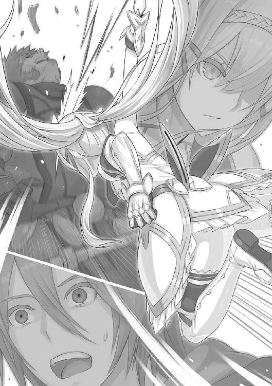
勝負が決したのはわずか一瞬。
どうと土煙をあげて倒れたヴァニスの身体を、フィーネはためらうことなく両足で跨ぐと、
「彼が信じていた神に祈る一瞬でもあればよかったが」
いうなり、ほの青く光る刀身をヴァニスの胸へと叩き落とした。背後から見ていたダークが、思わず自分の胸を押さえてしまうほど、情けも容赦もなく見えながら、その実、惚れ惚れするほど戦場の掟にのっとった、一人前の戦士そのものの所作であった。
（あ）
とダークは自身の胸を押さえながら、心に固く誓った。
（こりゃ、しばらくは逆らわないでおいたほうが利口だな、うん）
彼の信条は、『勝てない戦はしない』というものだ。自身の命はなにより優先する。
「カーラーン国大隊長ヴァニス、討ち取ったり」
朗々とした声でフィーネは叫んだ。
折りしも、厚い雲を貫いた朝陽が谷あいにきらりと射しそめ、フィーネの鎧兜を照り輝かせていた。
指揮官を失った敵兵は、すでに各所でフィーネの襲撃を受けて崩れ立っていたこともあって、遁走を本格的なものとした。
フィーネは地面に突き立てた剣の柄に両手を置いたまま、それを黙って見送っている。まばゆい朝陽のために刀身はまったく見えなくなっていたから、宙に浮いた柄に体重を預けているような、そんな不思議な姿に見えた。
ともすれば見惚れてしまいそうになる。ダークはあわてて視線を逸らし、谷の人々が歓声をあげるのを、
「最初からお味方でしたよ？」
というような顔をして、いっしょに手を叩いたり、口笛を吹き鳴らしたりすることに専念した。
いまさらいうまでもない。
ダークという少年、信義、信条はともかくとして、生き残るためのたくましさだけは人一倍持ちあわせていた。
二章 賢者の塔
１
赤茶けた荒野に、まるで海面から突き出た大蛇の背筋みたいにうねった起伏があり、その連丘によって形づくられた谷がある。
尾根のすぐ左右は断崖が切り立っており、馬でさえ進むのに躊躇しそうな険路なので天然の外壁になっていた。安全に谷底へと通じる道は数少ない。その入り口も人馬が縦になって行進しなければ通れないほど極端に狭く、傾斜もきつい上に、ゴーレム二体とわずかな兵隊で守られた関所が設けられている。そこを抜けると急に谷は開けて、煉瓦や石造りの家々が寄り集まって集落を形成しているのが見えてくる。北方には泉が湧いており、人々はそこに土着の信仰の証である粗末な神殿を建てて、町の中心にしていた。
もとは北のスタック針峰──現在はログエル王国の領地──を含めて小国の領土だったが、相次ぐ戦乱によってもはや所有権を主張する者のなくなった谷に人々が住み着きはじめたのが、およそ二百年前とされている。
人々はせっせと不毛の大地を開拓し、草木の種を運んで、数世代を経るころにはいくつかの農場と牧場とのあいだに泉から湧いた水を引くことで、外からでは想像もできないような緑の大地を生み出すことに成功した。
周辺でいかに群雄たちが土地を削りあうのに忙しかろうと、戦雲は絶壁の頂きを撫でて通りすぎていくばかりで、谷は国々の盛衰と無関係に時を重ねた。決して収穫が豊かなわけでも、人工の外壁に守られた都市部と比べて生活が楽なわけでもなかったが、戦いを遠ざけてきた谷の人々は気性穏やかで、時間をゆったりと過ごすおおらかさを身につけていた。
いわゆる職業軍人はほとんどおらず、武器を専門的につくる工房も小規模なものだったが、いままではそれでも事足りていた。
だが、あるときその平和なラグナの谷に、赤黒い暴風が吹き込んできた。
カーラーン国による侵攻が開始されたのである。
その戦場に、ダークもいた。
怒号と叫喚が矢のように飛び交っている。
八度にもおよぶ谷への侵攻作戦すべてに参加している彼のことだ。この記憶がいつのものか定かではない。ただ、なぜか彼はいつものように徒歩ではなく、また馬に跨っているわけでもなかった。
櫓の上だ。
茶褐色のひび割れた甲羅を持つ、アギロンという巨大亀の上にその櫓は築かれている。
アギロンはカーラーンが大型戦車として用いている魔物で、頭のてっぺんから尻尾までの長さは六、七メートルにはなる。その上に櫓を載せ、階層ごとに弓兵を伏せさせていた。本来、櫓の最上階に陣取れるのは士官級の兵のみのはずだが、なぜかダークはその厚遇を得てか、ぶ厚いマントを翻し、板金鎧を陽光にきらめかせながらふんぞり返っている。
「進め進め、者ども。邪魔な敵を蹴散らし、進め、ラグナの谷へ。グラジスを斃すのだ！」
妙な節を取りつつ、ダークは歌いあげるように『部下』たちへ号令を下す。
対する敵兵たちはアギロンの侵攻を阻めずにいた。なにしろアギロンは甲羅で覆われている以外の皮膚も鉄のように硬く、なまじの打撃は通用しない。小山が迫り来るようなものなので、アギロンの進行方向に陣取った兵たちは、皆、お決まりのように矢を放っては、すぐに恐れをなして蜘蛛の子を散らすかのようにして逃げていく。
「ははは、見ろ。人がゴミのようだ。わがカーラーンの魔軍に立ち向かおうなど、しょせん人の身では不可能なことよ」
邪悪な陰を表情にまとわりつかせてダークは笑う。
昔っから、子供向けの英雄譚など読むにつけ、
（どうして、敵役の連中は、自分が優位になると下品な高笑いをするんだろう。あれじゃ自分で自分を『英雄に討たれるべき邪悪の化身です』なんて宣伝してるようなものだ）
などと疑問に思っていたダークだが、
（なるほど。これは笑う）
納得させられていた。
櫓の上から見わたされる戦場すべてにおいて、もはや自分を阻む者などひとりもいないと思うと、これほど痛快なことはない。どのような勇ましい武装をした武者であろうと、よく訓練された騎馬の軍団であろうと、アギロンの進む先からは我先にと逃げ散っていく。
ダークは喉を反らせて笑いつづけた。
あまりに笑いすぎて、しまいにはむせた。
と、
「モーガウィル号だっ」
「〈女帝〉が来たぞお！」
カーラーン兵たちが大声を叫びかわした。その声には、いままでにない切迫した雰囲気がある。
（へ？）
となって、ダークが涙目で周囲を見わたすと、地平線の向こうに砂煙が立っていた。
数百、いや数千の騎馬軍団が群れになって駆けてきたとて、あれほどの砂塵は立つまい。では万をも超える数の軍団が襲来してきたかと思いきや、立ちのぼった砂煙にうっすらと浮きあがるシルエットは、船だ。
比喩ではない。
甲板からは三本のマストがそびえたち、風に帆がはためいている。海上を進むにふさわしい戦舟が、この、ひび割れて乾燥しきった大地を進んでくるのである。
それをひと目見た瞬間、ダークの肌が粟立った。ダークは八度ラグナの谷侵攻作戦に参陣し、八度とも敗れた。そのすべてにおいて、聖剣団の部隊長に遭遇したためだ。当然、〈あまねく海の女帝〉ヒエンとも出くわしたことがある。
「ひ、引け、引けえっ。奴の針路から、アギロンを遠ざけさせろっ」
ダークは顔面蒼白になって叫ぶのだが、アギロンは巨大な亀であるからして、小まわりが利くとも、俊敏であるともいいがたい。あっという間に『陸上船』モーガウィル号がぐんぐんとその姿を近づけてきた。
波しぶきのように砂煙を立てつつ、アギロンと併走。と、甲板上に無数の人影があらわれた。
「取りつけ！」
叫んだのは、まさしくヒエン・インコルマ本人ではなかったか。
船上から鉤つきのロープが何本も飛来した。それぞれが櫓に巻きつくや、曲刀を片手にした兵たちがロープを伝って躍り込んでくる。
「撤退、撤退」
ダークは喉もかれよと叫びつづける。さすがにアギロンも危機を感じてか、その歩みを速めた。速めた拍子に、ぴたりと止まった。
揺り返しを受けて、ダークが櫓の上から転げ落ちそうになる。
「だ、誰が止まれといった、このうすのろ──」
怨嗟の声はしかし中途で遮られた。まさしくアギロンの進行を遮った何者かの姿を、彼もその目で認めたためだった。
青銅の巨人たちだ。
〈魔人形遣い〉ゲルウィンが使役する巨大ゴーレムが、三体、束になってアギロンの首根っこを押さえている。おまけにその力強い手で揺さぶってきた。巨人とダークの目線はほぼ同じ高さだ。これにはたまらず、
「うわあああ」
情けない悲鳴をあげつつ、ダークは櫓の上から落下した。
さすがに落命、そうでなくとも大怪我は免れない高さがあったが、ここでも悪運が味方した。すでに落下していた兵たちの身体がクッションとなって、なんとか無傷で地面に降り立つことができた。できたものの、
「うわ、うわあああ」
悲鳴のほうはいっこうに止んでくれない。
今度は地面から水柱が打ちあがっていた。ここら辺りの川はとうに涸れ果てていたはずが、地面のひび割れから絶え間なく水が噴出しては、カーラーンの兵団を吞み込み、あるいは天へと押しあげていく。
もちろん単なる自然現象などではない。これも聖剣団──〈水霊王女〉スィー・ランの魔法によるものだ。
ダークはひたすらに逃げた。あわや押し寄せてくる水の奔流に吞まれそうになったが、幸運にも、主人をなくして駆けまわっていた馬に出くわすことができて、その首っ玉にかじりつくような格好で飛び乗った。
なんとか鞍の上に腰を落ちつけて、前のめりの姿勢で馬を飛ばす。時間の感覚がなくなるくらい、無我夢中で馬を飛ばした。背後で遠くなりつつある水柱の群れをちらりと見やる。見やったそのとき、
「ほう」
進行方向から感心したような声が聞こえて、ぎょっとなった。
「このおれ、ラッセル・アーヴェンに単騎で立ち向かおうとはいい度胸だ。カーラーンにもまだ骨のある武人がいたと見える」
前方へと向きなおったダークがその目にしたのは、あろうことか〈竜殺し〉。甲冑を着込んだ若武者が馬上で目を細めていた。
「おまえこそカーラーンの騎士のなかの騎士と見込んだ。うれしいぞ。敬意を表してこのおれが心ゆくまで相手してやるとしよう」
「ちがうんです誤解なんですたまたま出くわしただけなんです、誰が好きこのんで手前なんざといやちがったあなたさまと戦場でお会いしたいなどと思うでしょうかいや思うはずがない」
ダークは必死にいい募りつつ、なんとか手綱を引き絞ろうとするものの、馬は興奮していてまったく足をゆるめる気配がない。馬上のラッセルはにやりと笑って、槍を小脇に抱えて突入を開始した。
「いやああああ」
ダークのあげる、心底から嫌そうな叫びは、ある意味で敵へと勇敢に撃ちかかる気合いの叫びと聞こえなくもない。
馬と馬とが肩をぶつける勢いですれちがった。
当然といおうか、ダークが乗っていたほうの馬からは主人の姿が消え失せている。
無様に喉や胸を突かれて落馬した──のではなく、激突する寸前に、自分から飛び降りたのだ。
ごろごろとダークは下り斜面を転がっていった。長いこと転がった。噓のように転がった。
どれほど転がったものか、
（わたしはこのように生きたい、転がる石のように、ただ流れに身を任せて、そう、ライクアローリングストーン）
頭でも強く打ったか、なんだか達観した思いがふんわりと脳裏に浮きあがった瞬間、ふと気づけば周囲が薄暗くなっていた。
ダークははっとなって起きあがる。
薄暗いどころの話ではない。空はいつしか暗雲に覆われている。さっきまでは身を焦がすばかりの陽が降り注いでいたはずが、いまや吹いてくる風は冷たく、身震いを禁じ得ないほど。
稲光が瞬いた。
カッと地面を白く焼いたその光に照らし出されたのは、無数の戦死体。「ひいっ」とダークが小さく悲鳴をあげてのけぞった。
甲冑をつけたまま、もしくは剣や斧を手にしたまま、無念そうに口を搔き開き、白目を剝きながら打ち重なったその死体の群れが、光と影の生んだ錯覚のゆえか、身じろぎしたように見えた。
いや──、
錯覚などではない。確かに、動いた。ひと目で絶命があきらかなはずの死体の群れが、その乾いた指で地面を引っかき、負傷した足を引きずるようにして、じわりじわりと起きあがりつつある。
「わが陣に潜り込んだか、カーラーンの小童」
銅鑼を鳴らすような声が聞こえて、ダークがあわてて振り仰ぐと、そこに〈死霊神官〉の姿があった。
「怯えることはない。じき、そこもとも彼らと同じになる」
「お、おな、同じ、って？」
がちがちと歯が震えてまともな言葉にならない。と、そんなダークの内臓さえも凍えそうな恐怖に対し、〈死霊神官〉は清々しい笑みで報いた。
「知れたこと。彼らと同じく、なにも考えず、なにも感じず、ただわが念に従って動き、這いずる者どもと同じになるのよ。わしは彼ら無念のままに死した霊たちに功徳を施し、せめて今生でなし得なかった善行をなし遂げさせてやるのだ。さ、命をわがもとに捧げよ。わがために戦った霊たちは、次に生まれ変わったとき、立派な善人となって幸せに生きることを約束されているのだから」
まだ若いといえる年齢だろうに、〈死霊神官〉ベアラーの口調は古めかしく、また重々しい。
「お、おれはいまを生きたいのであります」
「おお、けだし名言、至言。ただしひと足遅かった。せめてこの戦場でわしと出遭わなければなあ。いや惜しい惜しい」
ちっとも惜しくなさそうな顔をしながら、いやむしろ嬉々としたご様子で、ベアラーは大股でダークのもとへと近づいてくる。その背後には、先ほどから糸で吊られるようにして起きあがっていた死体の山。感情のない視線の群れがダークを正面からとらえた。
そのうちひとつが、どろりとした白い糸を引いて地面にまで垂れさがった。
「いっ」
ダークの唇から、矢のように声が迸った。
「いやあああ、汚されるう、助けてええええ」
金切り声をあげながらベアラーや死体の群れに背を向け、逃走を再開させた。数メートルもいかないうちに膝から力が抜けて、すとんと腰が落ちた。それでもなお、犬が地面を這うかのように両手両足を駆使して逃げた。逃げつづけた。自分がどこを走っているのかもわからないほど夢中で駆けていたが、
「こっちよ、さあ、早く！」
右のほうから声が届いた。
おお、まさに天の助け。顔を輝かせたダークは一も二もなくその声に従う。「こっち、こっち」とダークを先導しつづける人間の姿かたちは見えなかったが、きっとこの先で味方が待ってくれているのだろう。
岸壁同士が擦れあうような狭い道を抜けた。
さっと陽が射してきた。ようやくのことで、あの悪夢のような死の世界から抜け出たのだ。
だが、目の前にもうひとりの敵が立ちはだかっていた。その人物は、兜の庇を手でつまむと、
「おや」と口にした。「どうやら、〈顔なき影〉のリヴィに誘導されてやってきましたか。わたしの前に来るとは不幸。さっそく、剣の錆にしてさしあげます」
「ざっけんな、小娘」
ダークは大上段にいい捨てた。相手がどう見ても子供だったからで、ダークは勝てる相手となると俄然張りきる性質だ。お手製の魔法具である杖を振りかざして、その子供へと躍りかかる。
（おや）
とそのとき胸をかすめる思いがあった。
（こんなことが前にも、っていうか、つい最近あったような？）
「やっ」
疑念を抱いたときには遅かった。その子供──聖剣団見習いの少女の放った裂帛の気合いとともに、目には見えない刀身に撃たれて、ダークは天を仰いでひっくり返っていた。
２
「わあああっ」
ダークは毛布を蹴飛ばす勢いで跳ね起きていた。
窓から射し込む陽の光がまばゆい。
朝だ。
となれば、
（ゆめ。夢か）
汗をびっしょり搔きながら、ダークは寝台の上で荒い息をついていた。無意識のうちに手が胸をまさぐっていた。心臓の鼓動は速かったが、とりあえず傷はついていない。それを確認すると、自然と深いため息が洩れ出た。
（ちっくしょう、なんて夢だ）
聖剣団にことごとく味わわされた敗戦を、一瞬のうちにすべて再体験させられた感じだ。
もう一度息をついて、汗に濡れた髪を搔きあげようとしたその刹那、
「やあっ」
夢でも聞いた、あの裂帛の気合いが鼓膜を貫いた。いや、鼓膜どころか、いまようやく鼓動のおさまりつつあった心臓をも切り裂かれた思いがした。
「ぴぇっ」
と奇怪な叫びをあげて跳びあがったダークは、寝台から転げ落ちた。それから尻で這うように窓辺に近づいていき、そっと窓を開ける。
前庭になった場所に、ひとりの少女がいた。夢で最後に出くわした相手だ。
略式の甲冑姿で剣を振るっている。
誰か相対する敵がいるわけではない。ひとりきりだ。
前方を軽く突いては上段から斬りおろす。見ているダークが飽きるほどその運動を繰りかえしたかと思うと、今度は右へ左へ、目には見えない仮想敵と跳びちがえながら斬る。斬る。斬りまくる。
そして時折、唇から例の気合いを放つのである。どうやら悪夢を見た原因はそれに──すなわちフィーネ・エストールが毎日おこなう朝の日課にあるらしい。
（いや──、逆にいえば、夢じゃなかった、ってことだ）
もう一度自分の胸をまさぐる。
そう、あの少女に戦場で斬りつけられたのは現実の出来事だ。目立った外傷こそ負わなかったものの、ある意味でダークの心身においてもっとも深い場所を傷つけられたといっても過言ではない。
ダークは庭のほうをうかがっていた視線を上向けて、改めて朝を迎えつつある外の風景を見やった。
ラグナの谷ともラグナ郷とも呼ばれている。
天然の外壁に守られた谷底の集落で、ダークの部屋からも煉瓦や石造りの家々がこぢんまりと並んでいるのが見わたされる。
かつては──というほど時をさかのぼるまでもなく、わずか二週間前まではダークの『敵国』であった場所だ。カーラーン国の大進撃を喰い止めた最大の要因である傭兵集団、聖剣団に守られた地だ。
（それが）
なんの因果か、ダークはいまやほかならぬその聖剣団の宿舎において寝泊りをする身分だった。
いうまでもない。戦場にてフィーネ・エストールと対峙した彼は、その胸に聖剣ゼスとやらの刃を埋め込まれた。逆らえば命はない、と脅されるまま、彼はフィーネに隷従する形となり──、
それから二週間だ。
激しい運命の流転に弄ばれたダークは、カーラーン国の下っ端魔法使いから職替えして、今度はラグナの谷を守る聖剣団の、やはり下働きとして雇われることとなった。
とはいっても、フィーネ・エストールひとりが父の看板を受け継いで、けなげに聖剣団を名乗っちゃいるが、正式な団員はほかに誰ひとりいないというのが現状だ。
ダークに詳しい事情はわからねど、現在、聖剣団の部隊長たちはなぜか全員揃って谷を留守にしている。手勢の兵たちもことごとく彼らについていくか、あるいは谷を出ていくかしたため、この三階建ての宿舎内も、吹きとおっていく風の音さえ聞こえそうなほどにがらんとしていた。
この二週間でダークに与えられた『仕事』といえば、敵陣の偵察でも、陽動をかけることでもない。
「おや、今朝は叩き起こしにいかなくてよかったようだね」
一階にまで降りていくと、白髪頭の婆さんがダークを待ち構えていた。肩の上に担いだ箒を、剣に見立ててか振りおろしてくる真似をする。ダークがあわてて身を引くと、その箒を放り投げてきた。
「まずは庭掃除だよ。それが終わったら、台所にいってうちのを手伝いな。で、朝食が済んだら一階の掃き掃除。今日は二週間に一度の拭き掃除もあるから、午前中丸まる取られると思ってやるんだよ。午後は午後で食堂のほうの掃除をしてもらうからね」
「なんだとこのババア、人を小間使いみたいに扱いやがって、おれを誰だと思っていやがる。聞いて驚け、おれこそ天下にいずれ名を轟きわたらせるであろう大魔道士ダークその人であるぞよ」
などとふんぞり返る代わりに、ダークは、
「へえい」
と気乗りしない返事をしながら箒を受け取った。
いわれるがまま、宿舎の庭に出て掃き掃除をはじめる。情けないことこの上ないが、なにしろダークは脅されている身分だ。彼を脅している張本人であるフィーネから、
「わたしからの別命あるまで、ジョアズお婆さまに従うように」
と厳命されている。
このジョアズお婆さまとやらは、宿舎の管理人である。部隊長たちが谷を出ていってしまったため、身の危険を覚えてか、兵員のみならず宿舎の下働きまでが大挙して宿舎から逃げていってしまった。つまり現在人手が足りない。ということで、のこのことあらわれた『新顔』であるダークは一日中こき使われる羽目になったのだ。
「あんた、いちいち要領が悪いねえ」
初日、口やかましい婆さんから掃除の手順を一から説明された。当然ダークは掃除に対する意欲などないから要領がよくなくて当然であるが、三日めには、
「いくら人手がないからって、やる気のない人間にいつまでも仕事が任されるほど世のなか甘くないってんだよ。あんまりいうこと聞かないようなら、フィーネちゃんにいって屋根の下から追い出してやるからね」
などと七十は過ぎているであろう老婆にまで脅迫される始末で、フィーネになんとしてでも剣の魔法を解いてもらわねばいつなんどき命を失っても不思議でない状況にあるダークとしては、
「わ、わたしが悪うございました。これからは心を入れ替えて窓拭き掃除でも便所掃除でもなんでもいたします。ですから見捨てないでください。未来ある若者というのは、熱心で情の深い指導者次第でいくらでも変われるものなのでございます」
這いつくばってでも宿舎に居残るしかないのである。
無論のこと、
（くそくそくそ、フィーネとやらのくそったれ、ジョアズの老いぼれめ。おれがいつか天下を取った日には、おれの居城に引き入れて、道具もなしに便所掃除させてやるからなあ）
などと胸中は荒れくるっている。
が、その『いつか』を迎えるまでにダーク本人がくたばってしまったのではお話にもならない。ここは、
（そうだ。かの古代の大将軍ギャスローも、大志を抱く身であればこそ、少年時代、売られた先の家で奴隷扱いされても耐え忍び、金持ちの子弟に喧嘩を売られてもただ地面に額を擦りつけて難を逃れたという。未来に大望ある者は、眼前の小事などにいちいち腹を立てて事を荒立てるような真似はせんものだ）
などと自分に言い聞かせて、耐えるよりほかに道はなかった。
庭掃除が終わると、ジョアズからのいいつけどおりに台所へ向かった。
ここを任されている料理長ゾックもいい歳をしたご老人で、ジョアズの旦那さまに当たる。料理長というからには、ゾックの下で働く料理人も数名いたのだが、彼らも団長たちがいなくなった直後に逃げていった口なので、ダークは彼のお手伝いをもせねばならない身分だ。
が、逆にいえば宿舎から大勢の人間が姿を消したわけで、たった数名ぶんの食事をつくるのはたいした労働でもない。──と思っていたのだが、台所に入った初日、ダークは目がまわるような忙しさに追い立てられた。もとより料理などしたこともない。野菜の皮を剝いた経験すらなかったが、この二週間でダークの腕前はめきめき上達した。いまじゃ目を離して世間話をしながらでも野菜の微塵切りができる。つまりはそれほど大量の食材を扱わされてきたのだ。
ともあれ、その初日、大量にできあがった食事をテーブルに並べているところへ、朝の日課である個人訓練を終えたフィーネが食堂へやってきた。
軽く湯を浴びてきたのだろう、白い肌はうっすら桃色に上気している。淡い緑色をしたブラウスにスカートといったいでたちは、年頃の少女そのものであって、まさかこの一見細い手足をした女の子が、剣を取らせれば職業軍人にも引けをとらぬ一流の戦士になろうとは想像もできない。
そのフィーネ、食事から漂う湯気を浴びながら、実に幸せそうな笑みを浮かべた。
ダークはというといまだ皿に盛りつけをしながら、
「今日はあれか、誰かのお誕生日か。それとも大勢のお客さまが来るってのか」
などと無神経に言い放って、フィーネを赤面させた。
直後に訪れた、やや気まずそうな沈黙も含めて、ダークにその意味などわかるはずもない。
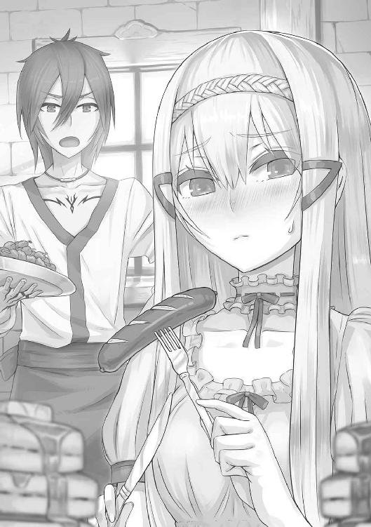
食卓についたのはフィーネひとりきりだ。ダークたちはあとで頂くことになっている。
ほかに誰か来る様子もない。
となれば、この大量の食事はいったい誰のためのものなのか。蜂蜜を塗ったパンに、肉も野菜も色とりどりのシチュー、肉の串焼き、魚の揚げもの、生野菜と卵のサラダ、チーズ、果物各種。
正直、生まれも育ちも裕福とはいえないダークにしてみれば、一年に一度の祭りの日にだってこれほど豪勢な食事など見たこともないというほどのものだ。
それを、フィーネがひとりきりで食べはじめた。だがとうていあの細い身体におさまる量とも思えない。実際、彼女は小鳥の餌みたいな量を口に含むと、その口に手を添えながら、よく嚙んで食べている。あと時計が二周三周したとて、この量の十分の一も片づくまい。
「なあ、ほかに誰が来るんだよ？」
ダークは聞いたが、応える者はない。もそもそとフィーネが食事をつづけているきり。なんだかむかっ腹が立ってきた。聞いた話だが、カーラーンで貴族たちが宴などを催す際、毎回毎回、大広間には参加者の数が二倍三倍になっても食べきれない、というほどの食事が並ぶという。食事が足りないというのは宴に招いた側の人間の恥になるから、毎回残飯が出るというのはそれだけで貴族のステータスになり得るのだ。残飯といっても、当然、庶民の身分では一生口にできないほど高価で手の込んだ代物ばかりだ。それを彼らは『誇り』をもって捨て去る。一日一回の食事を口にしたいがために野盗くずれにまで身をおとしめたことのあるダークにしてみれば、頭から湯気が出そうな話だ。
「おい、まさかこれだけの食事を無駄にしようってんじゃ......」
「ダーク、こっちへ来な」
ふと、ジョアズに招かれて台所へ舞い戻った。
そこでなにをさせられるかというと、なにもない。ただ、世間話を二言、三言交わしたきりだ。
「さて、そろそろ戻るか」
ジョアズはいって、食堂に戻った。あとをついていくダークにはなんのことやらわからない。が、
（うお）
思わず息を吞んだ。
テーブルに山と並べられていた量の、すでに半分が消えかかっている。食堂ではフィーネが相変わらずひとりきりで、手を口にあてがいながら咀嚼している。
「わかったろう。そういうことさ」
耳もとで囁かれたジョアズの声に、なんとはなしにダークはぞっとさせられた。そのジョアズ、口の端で咥えたタバコのパイプに火種を落としながら、
「あとは野暮なことはいわず、見て見ぬ振りをしておきな。毎日のことだからね」
「し、しかし」
ダークは身の震えが止まらない。対するジョアズは「ぷうっ」と白い煙を吐き出した。
「ああ、毎回の食費だって馬鹿にならない。が、うちんとこの連中は世界各地で名をあげた猛者ばかり。そいつらが探索で得た金品や宝物だって数多く倉庫には保管されているのさ。なかには一国の王さまが目の色変えて欲しがるような芸術品やら古代の遺跡物やらもある。そういうのを売って金に換えているんだよ。たとえばこのラグナ郷の近くでは魚なんかちょっとしか捕れないからね、東のほうにある漁村と商業取り引きをして、大量の魚を送ってきてもらっている。あそこの村々は多分、うちとの取り引きで得られる利益だけで、全戸数の生活をまかなっているんじゃないかね」
「──」
そういうことを聞きたいのではないのだが、ダークはもはや口を開く元気がない。
「あたしが若いころは、ラグナ郷はまさしく陸の孤島、って感じでね。周囲とまったく交流を持とうとしなかったから、そういった商売をよそとすること自体、考えられなかったものだが、まあこれも時代の流れかね。しかし」と突然ジョアズはくっくっと笑って、「聖剣団じゃいくら新参者っていったって、一年以上はうちに厄介になった者ばかりだった。つまりフィーネちゃんにしてみりゃ、気心の知れた連中ばっかりだったんだね。だから気にしたこともなかったけど、まあ、フィーネちゃんも年頃のお嬢さんだった、ってところかねえ」
とダークには意味のわからないことをいってから、
「ああ、金品やら宝物やらがあるからって、倉庫に興味を示すんじゃないよ。あそこは聖剣団でも部隊長級以外は立ち入り禁止だ。というより、彼らの仕掛けた罠がすごすぎて、部隊長以外の面々は立ち入ったが最後、二度と生きて戻れやしないのさ」
ジョアズはさらに震えあがるようなことを口にした。ダークをねめつけた目には迫力がある。
もとより、聖剣団において、〈影の団長〉と呼ばれていた彼女だ。宿舎に寝泊りする部隊長、週替わりの宿直で詰めることになっている兵十数名のみならず、団長その人の世話やら胃袋の管理までしていたのだからある意味当然だが、
『神盟騎士団』
などと大仰な看板を掲げていたこの集団に対して、
「呼びにくい。わずらわしい。うざったい。もっと簡潔な名前にしな」
とグラジス本人に迫ったのが彼女だともいう。
グラジス・エストールは妙にしょんぼりとして、内心、得意だったこの名前を捨てて、『聖剣団』を名乗るようになったそうだ──というが、いまのダークにしてみれば知ったことではない。なにしろ、こうしてちょっと目を離して会話をしたその『隙』にも、大皿が二つ三つ片づいているのだ。
──というわけで、ダークが聖剣団の下働きになってからの二週間、彼に任された主な『仕事』とは、このだだっ広い宿舎の掃除、それに毎度毎度死にそうな思いをして大量の食材と格闘せねばならない料理である。
そしてもうひとつ、団員募集のチラシをつくらされ、それを谷のいたるところで配らされるという、掃除や料理に負けず劣らず屈辱的な仕事もやらされた。
大軍がいつあらわれるかもわからないというので人が逃げ散ったというのに、チラシ一枚にどれほどの効果があるのやらわからない。
ダークはジョアズからいいつけられたとおりの仕事を片していきながら、なんともやるせないため息をついた。
そろそろ食堂にはフィーネ専用の朝食が山ほど並びつつある。
「やっ、やああっ」
庭のほうからは、依然フィーネの気合いの入った声が届いていた。
さて。
ダークもひととき所属していたカーラーンという国。
大陸南方の小国であった。
歴史は古い。その古さばかりがただひとつの取り得といえた。王族は世代を重ねるごとに力と権威を失って、家臣たちは残された砂糖の山にたかるアリのように、わずかばかりの権益を巡って表に裏にと争いを繰りかえし、国そのものの弱体化を早めた。
あとはもう風にであれ、雨にであれ、時間とともに浸食されて地図上から消え失せるのを待つばかりであろう、といわれていた国である。
それが、突如として、近隣の小勢力に兵を差し向けはじめた。現在の国主エルドラン六世の命令によるものだった。
噂によるとこの国主、大陸で長いこと禁じられ、封印されてきた禁断の秘術──闇に属する世界の存在と契約することで、この世ならざる力を手にしたのだという。
その噂がまことか噓であるかはともかく、カーラーンは実際に近隣の村や町、そしていくつかの国を驚くほどの速度で滅ぼすか、もしくは隷従の道を強制した。
これも噂だが、カーラーンに捕らえられた兵や、村々の男たちはその大半が秘術の実験材料にされるのだそうだ。およそ半数は術の失敗によって死にいたるが、残り半分は闇の世界に住まうとされる生物──魔物に変身させられ、カーラーン軍の一翼を不気味な容姿と咆哮で彩るのだという。
切り取った国の支配体制もままならぬうちから、軍を編制してはまた侵攻。
乾いた羊皮紙に描かれた大陸の地図があるとして、その南の一端から火をつけたも同然の速度で、戦火はたちまちのうちに燃え広がって、さほど時おかずしてカーラーンは南方の大国となった。
炎は貪欲にもさらなる北進の気配を見せて、赤々とその身をたぎらせた。
大陸全土を吞み込むのも時間の問題かと思われたその赤黒い炎が、しかしある一点でぴたりと静止した。いや、静止させられた。
その一点とは、ほかならぬラグナの谷。
平和な時代を長く経験し、軍人を名乗る人間さえじかに戦った経験すらないこの谷が、いまやカーラーンの北進を押さえ込む最前線基地となっていた。
「──それがなぜだかおわかり？」
きらりと目を輝かせて女性はいった。
「いやまあ、大体落ちは読めるけど」
ダークは気乗りのしない返事をした。
聖剣団宿舎内の一室。
掃除をようやくのことで終えて、くたくたになったダークを前に、身を乗り出さんばかりに熱弁を振るっているのはしかしフィーネではない。わずか三日前に入団募集のチラシを手に駆け込んできたヤミーという少女だった。
そう、あのくだらない仕事と思われていたチラシ配りだが、一応は成果があったのだ。
「そのとおり」
ダークの辟易したような様子もなんのその、握り拳から火をあげんばかりの勢いでヤミーの弁にはますます熱がこもる。
「ラグナの谷もいよいよ風前の灯火と思えたそのとき、かの人が帰ってきたのよ。そう、グラジス・エストールその人が、無敵の傭兵団とともに、生まれ故郷に凱旋してきたの！」
ドン、と木製のテーブルに拳が打ちつけられる。
グラジスといえばいうまでもない、いまや大陸に名を轟かせる聖剣団の若き団長のことだ。
生まれ故郷であるラグナの谷を旅立ったのが十三のとき。崖の崩落事故で両親を亡くしたのがきっかけだとされている。
それから十五になるまでの詳細は不明だが、ともかく十五のときにはイシュア教国に滞在しており、雇われ兵として『教敵』と戦っていた。しかし雇われてから半年も経たぬうちにイシュア教の巫女と恋仲になり、あろうことか子を宿させてしまった。イシュア教といえば敵の多さもさることながら、戒律の厳しさ、そして戒律を破った者へ苛烈な責め苦を負わせることでも知られる宗教だ。グラジスはあっという間に『教敵』と成り果てて、イシュア全体から追われる身となった。
（十五でイシュアの巫女を孕ませるとは、とんでもねえガキだな）
ダークは思ったが、口にはしない。目の前にいるヤミーという娘、いかにも線が細く、日陰でひっそり微笑んでいるのが絵になるような、そんな外見であるにもかかわらず、どうやら熱狂的な聖剣団の支持者、それこそ信者に等しい人物のようだ。
いまこうしてダークに熱弁を振るっているのも、彼が聖剣団の下っ端に在籍しながら、聖剣団とラグナの谷について無知であるのがどうにも許せなくなったためらしい。いったん作業の手を休めつつ、歴史の講義とあいなったわけだ。
普段は大人しいくせに聖剣団のこととなると尋常でない熱がこもる彼女のこと、余計な茶々を入れたが最後、炎を宿した拳がダークの顔面中央にめり込みかねなかった。
「しかし当時からすでにカリスマ性を発揮されていたグラジスさまは、敵も数多くあれど、同じだけ集まってくる味方も数知れず。奥さまと息子さんを連れて、世界各地で傭兵稼業をなさっていたの」
そのうちにもうひとりの子宝──すなわちフィーネ──にも恵まれ、二十五のとき、仲間たち数名と北のログエル国に仕えるようになった。
約五年のあいだで両手の指では数えられないほどの武勲を立てたグラジスだったが、東方の国境警備を任じられた際、同じ領土内にあるはずの、とある村の焼き討ちを命じられた。王族への謀反が原因であったが、そのときすでに謀反の首謀者たちは刎ねられた首を城壁に吊るされたあとである。村は、首謀者たちが会合をおこなった場所であり、それが許せぬ、というのが理由であった。
この命令に反発したグラジスは、かねてからの仲間たちを率いて独立、傭兵集団『神盟騎士団』を名乗るようになる。
噂を聞きつけて集まってきたさらに精強の者たち──なかにはグラジスと敵対していたが、その心意気に惚れて駆けつけてきた者も多い──十数名だけで国家ひとつと渡りあい、ついには王より和解を申し入れられた。
が、その戦いで初陣を飾った息子は命を失い、そのことが原因で妻とも離縁する形になったらしい。
それがきっかけであったか、ログエルにもはや愛想を尽かしただけだったか、グラジス・エストールは急にログエルを出奔、味方たちになにも告げることなく、幼いフィーネのみをつれてふたたび放浪の身となった。
それからまた空白の時間があった。
生まれ故郷ラグナの谷がカーラーンの侵攻を受ける寸前と聞きつけた彼は、ただちに帰郷。それを知ったかつての仲間たち数名もほぼ同時に駆けつけてきて、傭兵団を再結成すると、その少数精鋭でもって、ラグナ郷をたやすく吞み込まんとしていたカーラーンの先遣隊五百を見事に退けた。
以来、ほとんど彼らの力のみで、カーラーンの猛威から谷を守ってきたのである。
「これは神話でも、粉飾された歴史物語でもないのよ。実際に、それも現在進行形でつむがれている真実の物語。生きた英雄たちが目の前にいて、声をかければ微笑んでくださって、手をのばせば血の通った腕や肩に触れることができたの。どう、興奮して血がたぎるでしょう？ いまにも鼻血といわず涙といわず、身体のあちこちから体液を吹きこぼして失神しそうになるでしょう？」
「すげえこというな」
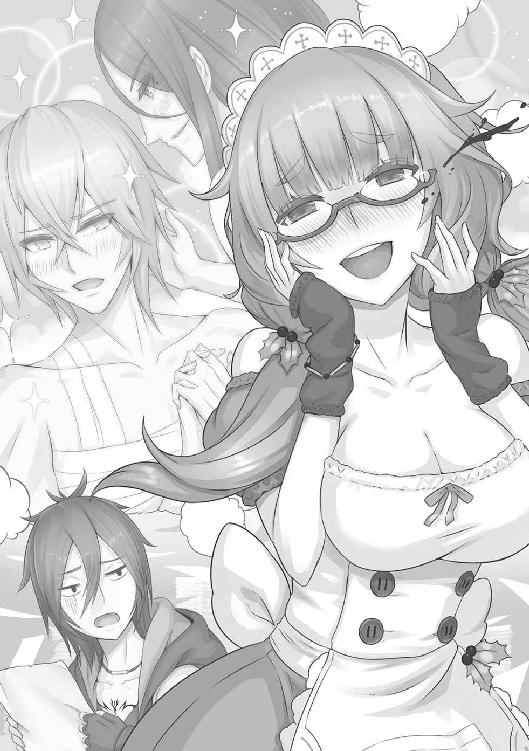
ダーク自身、聖剣団の恐ろしさは身に染みてわかっている。白状すれば、彼らの姿を思い浮かべるだけで、まさしく「鼻血といわず涙といわず」、お漏らししてしまいそうになるのは確かだった。
「が、まあ、その生きた英雄譚の主役たる聖剣団も、いまや瓦解の危機にある、と。こういうわけだな」
放っておけばいつまでも長々とつづきそうな講釈を、ダークは一方的に打ち切った。
「あれからもう二週間にはなるかね。谷がカーラーン軍の再攻撃を受けたってことくらいは聞いてるだろうに、谷からなぜか出ていった部隊長、またグラジス団長その人も帰ってきやしねえ。雇われ兵なんてみんないなくなっちまうし、聖剣団は事実上の壊滅状態だ」
「そ、そんなことはないわ」ヤミーが顔を真っ赤にして抗議した。「聖剣団といえば、血よりも濃い鉄の掟で結ばれたつわもの揃い。きっと、ラグナの谷がふたたび危機に陥ったときには、どこからともなく一陣の風、そして決め台詞とともにあらわれて、ばったばったと邪悪な敵を打ち払ってくれるに決まっているわ」
「そうかねえ」
ダークは椅子の上で背伸びをした。
実のところ、彼にしてもヤミーにしても、なぜ聖剣団で無敗を誇った隊長の面々が、突如としてこの谷を去ったのか、理由がわからずにいる。
フィーネに聞いてみたところ、
「重要な作戦にかかるというので、見習いていどのわたしには教えていただけませんでした」
とのことだが、こうも長いこと谷を留守にすれば、当然カーラーンの次なる侵攻があった際、聖剣団不在でこのラグナ郷がいったいどれほど持ちこたえられるのかという不安はグラジスの胸中にもあったはずだ。
（まあ、さすがに傭兵団丸々とんずらこいたってわけでもねえだろうが）
フィーネが不確かな事実を述べているのは確かなように思える。
それも、都合の悪い確かな事実を隠した上で──だ。
「まあ、安心しな。事実上壊滅状態にあるとはいっても、聖剣団は終わったわけじゃねえ」
「そ、そう。そのとおり」
「このダークという、新たな希望、新たな英雄がある限りな」
親指をびしっと己のほうに向けてダークは白い歯を見せたが、ヤミーは一転、げんなりしたような顔をした。
「解せないわ。どうしてフィーネさまは栄光ある聖剣団に、こんな粗にして野、卑でもありそうな男をお味方に加えたのかしら」
「会って日も浅いってのにお嬢さん、なかなか容赦ねえな。まあ、まだ夢見るお年頃だからな、男の真価は見抜けないか」
いやいや、顔をあわせて五日にもならないのに、ヤミーもなかなか人を見る目がある。ちなみに実際のところ、ヤミーはダークよりもひとつ年上だ。
先ほど、ダークに与えられた任務のひとつに、団員募集のためのチラシづくりがあると述べた。
彼はフィーネにいわれるがまま小手先でこのチラシをつくり、谷のあちこちで配った。
が、当然、聖剣団の主要メンバーが散り散りになっているのはすでに谷中に知れわたっている。どう手を尽くしたところで、この谷も遅かれ早かれカーラーンに併吞されるだろう、と皆が気持ちを暗く落ち込ませていたため、集まってきたのは暇をもてあました老人や主婦だけだった。
そういう意味では、第一次募集に馳せ参じたヤミーは異質といえた。十八歳とまだ若く、目は意欲に燃えていた。ただ、ダークとの会話ですでにわかるとおり、彼女はいささか、というか、もう度を越したほどのミーハー根性の持ち主なので、この事態をどれほど理解した上で募集に応じたかははなはだ疑問だ。
細っこい手足を見れば一目瞭然だが、戦いの経験はない。どころか、ペンより重たいものなど持ったこともない、と自負していた。
ところがその『ペン』が意外な才能を発揮した。
フィーネとダークが苦心して新しいチラシをつくる際、彼女はそこに得意の絵を挿し入れた。
グラジスや聖剣団隊長たち、フィーネの姿を描いたそれは、特にフィーネ本人に好評だった。
「父上の凛々しくも、飄然とした雰囲気がとてもよく出ています。ヤミーさん、こちらにも描いていただけますか？」
谷にはまともな印刷機材がないため、ほぼ一枚一枚に手描きする羽目になるのだが、ヤミーは億劫がらずに、むしろ楽しんでその作業をこなした。
絵はまあ確かにうまいほうだが、ダークにはそのアレンジ具合が気に入らなかった。
「ラッセルにしてもゲルウィンにしても、なんでこんなに目が横長で、おまけに顎が尖ってるんだよ。グラジスの睫毛はこんなに長かったか？ 髪なんてどいつもこいつもサラサラで光沢を放ちやがって、肌も真っ白、全員女みてえじゃないか。あとどの絵を見ても、全員にこやかに肩組んだり、手をつなぎあったりしてるけど、こいつらこんなに仲良くねえだろ」
「人の表面しか見えない男にはなにをいっても無駄ね」
「なにぃ？」
「心の目で見れば、その方たちの秘められた真実の気持ちも見えてこようというもの。たとえばゲルウィンさまはとても内気で、お仲間とまともに口も利けないほどだけど、わたしにはわかるの。心の底にはお友達を思いやる熱い血が流れていらっしゃるのだと。その証拠に、ラッセルさまが戦場でひとたび負傷されたときなど、血相を変えてゴーレムに運ばせ、ひと晩眠らずに看病されていたのよ。きっとあのときからね、あのときからよ。お二人が何気なく視線を交わすその一瞬、ぽっと空気さえも恥じらいで薄桃色に染まるような場面の数々、ほかの誰が見逃そうと、このヤミーが見過ごしてたまるものか」
はあはあと息を荒くしてヤミーは夢見るまなざしでいうのである。あとでわかったことだが、この娘、聖剣団に関しては脳内でつくりあげた妄想エピソードが多数あるらしく、おまけに本人にも、もうどれが本当でどれが自分の理想でつくりあげた話なのか判断できないようだ。それに気づかなかったころ、ダークは本気でゲルウィンとラッセルが裏で『できて』いて、実はグラジスを含めた三角関係にあると信じ込んでしまった。
「ああ、くだらねえ」
ダークは木製のテーブルでいまも一枚、次の瞬間にはさらに一枚、と完成されていくチラシをぼんやり眺めながらひとりごちた。
『きみも聖剣団でいい汗を流さないか』
無意味にさわやかな笑みを浮かべたグラジスが、そう誘っている。
『家庭的で、どなたでも気軽に働ける職場です』
フィーネを模したと思われる二頭身のキャラクターが笑いかけている。
それを虚ろな目で見つめつつ、ダークはひそかに嘆息した。
いかに変わり身の早さが売りとはいえ、さすがに今回は戸惑ってもいるし、落ち込んでもいる。
ただの村人から夜盗くずれに、次いで、夜盗くずれからカーラーンの兵士になったときとは状況が異なる。こちらの意志など微塵もない。命と引き換えに脅しつけられて聖剣団入りを果たした格好だが、しかしその聖剣団は急激に弱体化しており、ヤミーには「おれが新たな希望だ」などとは口にしたものの、根拠のない自信だけが取り得の彼にしてみても、さすがにいまの聖剣団ではカーラーンの侵攻など喰い止められはしまい、と確信している。
谷の住民もその辺は十分わかっていて、親類や友人を頼って谷を離れていく人々が相次いでいる。もともと何世代も戦いを経験していないから、
「ならばおれが自分の力で谷を守ってやる」
などと意気込む若者も多くない。
谷を守る任務を仰せつかったはずの正規軍のほうでも脱走者が相次いでいるという。その軍司令官フォルテ・マーシュでさえも、善後策を打ち出すどころか、時折聖剣団の宿舎にやってきては、
「団長どのはどこへいかれたのか」
だの、
「隊長連中はいつになったら帰ってくるのだ」
と質問を重ねることこそがいまの自分の任務だといわんばかりで、ほかにはなにもしていない。
もともとフォルテは、団長のグラジスをはじめ、聖剣団にいい感情は持っていないと噂されていた。長年谷を守る役職についていながら、ほとんどがよそ者であるこのならず者集団が谷の英雄と持ちあげられている状況が面白くなかったのだろう。
だから、髪の生え際が後退した額にいっぱい汗を浮かばせつつも、
「おお、あそこに集まっているのが聖剣団の新入りかな。実に勇ましい軍隊になりそうでなによりだ」
募集のチラシを片手にやってきた主婦や老人たちを見ては、そんな嫌味をいうことも忘れない。
フィーネ・エストールはそれでも健気に、軍と協力して次のカーラーンの侵攻を喰い止める作戦を練るなり、合同演習をするなりして練度と士気を高めるべきだと、それなりに『建設的』な意見をするものの、
「いままでそう申し出てきたわれわれの手を突っぱねてきたのはどちらですかな。戦いの素人など不要、むしろ邪魔になるだけだといい添えて」
フォルテに冷笑を浮かべてあしらわれた。
「ともかく、正式な団員でもない子供相手では話にもならん。子供でも遣いを四方に出すことくらいは可能だろう。さっさと団長どのか隊長のひとりでも捕まえて、即刻連れ戻してくるのだ。よいな」
大仰にマントを翻して軍司令が立ち去ったあと、
「ああいう奴はどこにでもいるもんだ」
ぽつねんと取り残されたフィーネに、ダークはせせら笑いながらいった。
「なんでも他人任せにすることを覚えた奴ってのは、自分でもわからないうちに、いつしか自分の命運さえ他人任せにするようになるのさ。『おれが死んだらおまえらの責任だぞ、よいな』って具合にね。ああいう手合いは、死んだあとになっても霊魂になってぶつぶつ文句を垂れてるんだろうよ」
「ダーク、口を慎みなさい」振り返ったフィーネは、上官らしくとがめるようなまなざしでいった。「フォルテどのは、頼りないわれわれに発破をかけてくださっているのですよ。わたしたちの戦いにはこの谷に住まうすべての人々の命がかかっているのですから」
（めでたいガキんちょだな）
心中では思ったが、これももちろん口にしない。命を他人任せにする、と先ほど口にしたが、そういう意味ではダークの命とてほかならぬこの『ガキんちょ』が握っていることになる。
聞くところによれば、フォルテは若くて使えそうな人材はひとり残らず搔き集めているところらしい。相手が嫌がろうとお構いなしだ。ある意味ではこれも谷を防衛する施策のひとつといえないこともないが、その行動の裏には、
「聖剣団に人材を取られてたまるか」
という思いもあるのはまちがいない。
こんな狭い谷でいがみあい、利害を喰いあっていては、カーラーンの侵攻を喰い止めるどころの話ではない。
楽天家のダークにしてもいよいよ悪運のツキが見えてきた。身も細るような思いに駆られるたび、しかし彼は、
（いや、まだだ）
と自分を鼓舞する。
根拠のない自信、そして具体策がないままにめらめらと燃える不屈の闘志はダークの数少ない長所である。
この二週間、なにも無為に過ごしてきたわけではない。彼は彼なりに情報を集めていた。といっても、いまや敵国となったカーラーンのものや谷の防衛策についてのものではない。フィーネの持つ聖剣ゼスに関するものだ。彼とて魔法使いの端くれ、なんとか剣の魔法を解く方法がないかと探っているところだった。
ヤミーに聖剣団やらグラジスのことやらを聞いていたのもその一環なのだが、いまのところ収穫はないに等しい。
（こうなりゃ、あいつが寝ているときにでもこっそり忍び込んで、剣そのものを盗み出して研究するしか）
などと不穏なことを考えているうちに、宿舎へフィーネが戻ってきた。
几帳面で律儀な性格なのか、机の上にできあがったチラシの山を眺めては、いちいちヤミーの努力と技能を褒めたたえる。二つも年下の少女に褒められたヤミーの頰は赤く染まっていた。『聖剣団』というカテゴリーそのものに憧れていた女だから、性別は関係ないのかもしれない。
が、
「チラシばっかり山積みになったって仕方ねえ」
ダークは辛らつにいって捨てた。ヤミーにぎろっとにらまれるなか、
「これからどうする気だよ。まさかチラシだけを頼りに、諸隊長どのに引けを取らないような人材がやってくるのを気長に待つ、ってんじゃないだろうな。カーラーンが明日にも仕掛けてくるかもしれないってのによ」
いかにも偉そうなものいいだが、彼とて他人任せなのは変わらない。というより、なかなか自主的に谷を守るという気持ちにはなれずにいる。
「そのことですが」
とフィーネは真顔でダークのほうを向いた。真顔なのはいつものことだが、今日はまた一段と眉にきりりと力がこもっているように見えて、
（おや）
とダークは不審を覚えた。そしてたちまちのうちに胸に広がったその嫌な予感は、よせばいいのに的中してしまった。
「先ほど、ラグナ軍の方からお聞きしたのですが、カーラーンの部隊がまた国境の近くに陣を張っているという情報があります」
「なにっ？」
思わずダークの声が上ずるのをよそにフィーネはつづけて、
「おそらくこの前に侵攻をかけてきたドレーム将軍の隊が、陣を引ききらずに残っていたのでしょう。そこへ本国からの増援が到着したものと思われます」
「か、数は」
「詳細はわかりかねますが、報告によると二千はくだらないということです」
ダークはごくりと大量の生唾を吞んだ。
二千といえば、いままで八度おこなわれたラグナ侵攻作戦の部隊と比べれば規模でこそ劣るものの、いまや部隊長の存在しないこの谷を攻め落とすには十分すぎる兵力だ。
「どうしたの、ダーク？ まさかとは思うけど、数を聞いて恐れおののいてるんじゃないでしょうね」
声を失ったダークをヤミーがからかう。
「ば、馬鹿をいえ」
「そうよねえ。なにせダークはこの聖剣団の『新たなる希望』だものねえ。二千の敵兵なんか、ちょちょいのちょいで片づけてくださるのよね」
「と、当然だ。谷の未来はこのダークが守りとおしてみせる。お、大船に乗ったつもりでいたまえ」
ダークは髪を搔きあげつつ小さく笑い、テーブル上にあったコップを手に取ってなかの水をひと飲みした。
「それ、あたしの筆を洗ってた水なんだけど」
げほんげほん、ごっほごっほ、とダークが身を折って激しく咳き込むのをよそに、
「フィーネさま。いかがなさるおつもりで？」
と神妙な顔をしてフィーネに問う。さすがにヤミーも事態の重さは理解している。
「ええ」
とフィーネはひとつ頷いて、
「やはりいまの戦力のままでは──わたしフィーネひとりの力などでは、口惜しいことですが、谷を防衛できる自信がありません。なんとしてでも隊長をつれ戻す必要があります」
谷を旅立って以来、ようとして居所のつかめない隊長たちだが、実はひとりだけ居場所のわかっている者がいるという。
〈魔人形遣い〉ゲルウィンだ。
腕はいいが極度に人見知りをする魔法使いで、聖剣団の正式な部隊長となってからも、宿舎よりももうひとつの住処としていた遺跡の塔にこもることが多く、グラジスの命令さえなければ一歩も外に出なかったほどである。
「谷近辺の村々で話をうかがったところ、いまもその塔に引きこもっているとのこと。まずはこのゲルウィンを引き戻し、谷を守るゴーレム隊を復活させましょう」
３
ゲルウィンといえば、ひとりで大小さまざまなゴーレムを操ることのできる魔術師だ。確かに彼ひとりが谷に戻ってくれれば、それだけでも大幅に戦力を増強することができるだろう。
（ほほう？）
フィーネの言に、わずかながらも未来への光明を見出したダークだが、同時にある種の疑惑をも深めていた。
（『引き戻しましょう』ねえ）
フィーネは以前、部隊長の面々は『重要な作戦にかかった』と説明していたはずだ。作戦の詳細は知らされていないという。だというのに、フィーネの独断で居場所のわかっているゲルウィンだけでも引き戻そうというのだ。
ますますもって怪しい。
よほどそのことを直接に問いただしたくなったダークだが、
（ここで機嫌を損ねられちゃ、おれもどうなるかわからん）
から、ひとまずはおいておくことにした。まだフィーネ・エストールの人となりがそれほどにはつかめていない。相手を追いつめるにはそれなりの手ごまと情報が必要だ。
ともあれ、フィーネ・エストールはこの任務に逸っていた。
普段は面憎いほどに落ちつき払って見える少女だが、やはり自分で口にしたとおり、ひとりの力だけではカーラーンの軍勢など追い返せるはずもないとは理解している。それなりに焦ってもいたのだろう。
フィーネは自ら塔に赴いてゲルウィンを連れ戻してくると息巻いた。
が、いまや聖剣団で、というより谷でまともに戦える人間はほとんど彼女ひとりきりのようなものだ。フィーネがいなくなれば、カーラーンどころか、その辺の山賊さえ恐るべき外敵になり得る恐れがある。
フィーネとてその辺のことを危惧しないわけはない。
逡巡する彼女の背を押したのは、いまだ谷に居残っていたログエル国のクロム王子であった。
彼は、自分が国からつれてきた使者にいつの間にやらカーラーンの魔法士が取り憑いていたと知らされて、ひどく狼狽し、また責任を感じていた。
「その罪滅ぼしの意味もある」
として、王国から兵を割いて派遣してもらう手はずをととのえたという。
「千も二千もというわけにはいきませんし、父上からは、兵を使うのは構わないが、ログエルの旗を掲げてはならずというつまらぬお達しもいただきました。が、まあ柵代わりには使えるでしょう。安心してゲルウィンどのの説得にお向かいなさい」
と柔和な笑みで谷の防衛を請け負ってくれた。
フィーネはこれに頭を床と平行にならんばかりにさげて感謝の意を示した。
さっそく旅の支度をはじめたフィーネを、ダークは欠伸をしながら見守っていたのだが、ふと気になることがあった。
「ちょっと待て。前に、あんたと離れすぎたら剣の魔法が発動するといったな。どのくらいの距離があったらおれはぶっ倒れちまうんだ？」
「さあ？」
フィーネは衣類を力業で畳んでいきながら小首を傾げる。愛らしい挙措のようだが、
「さあ？ じゃねえよ」
自分の命がかかわっているので、自然、ダークの語調も荒くなる。
「なにしろこういう使い方をしたのははじめてなのです。一キロ、二キロは大丈夫でしょう。けれど具体的にはわかりません。あなたが屍となって転がったときにはじめてわかるかもしれませんが」
「きゃあ怖い」
ふざけているようだが、ダークの顔面は蒼白になっている。
まったくこのフィーネ・エストール、配慮や気配りといったものが欠けている。当然、いのいちばんに考えるべき事態ではないのか。ダークは大急ぎで部屋を出ようとした。
「どちらへ？」
「お、おれも荷物をまとめてくるんだよ。いっしょに塔へいくぞ！」
「お力添えをいただけるのですか？」
フィーネはにこにこと嬉しそうにいった。
「ああ、確かにゲルウィンはあなたと同じ魔法使い。使う技の種類も似かよっておられるようです。ダークと気があうかもしれませんね」
「手前とは一生気があわねえ」
とはもちろん口に出せないダークである。
フィーネがおまけの魔法使いとともに旅立ったあと、クロム王子は約束どおり、谷の周辺に兵を配置した。
と同時に、彼は兵のうち一部に命じて、聖剣団宿舎の内外を探索させた。谷を守るためにも、あらゆる場所の地形を知る必要がある。
本人はホール内で優雅にお茶など楽しみながら、兵たちの報告を受けている。ちなみに彼はラグナの谷を訪れるたび、身のまわりの世話をさせるためだけに執事やら侍従やらを二十名ほどはつれてきていた。
「そうか」
差し出された紙には、周辺の地図が記されてある。
「そう簡単には見つけさせてもらえんか。なにしろ音に聞こえし聖剣団のアジトだ。どこかに隠し部屋やら魔法で隠された空間やらがあっても不思議ではない」
「本国から魔法士を招き入れますか」
耳打ちしたのは、大柄な体軀をした軍人である。黒いマントを羽織り、肩の留め金が金色に光っている。まだ三十にはなっていないが、浅黒い肌をしたこの武人は、ひと目で豪の者とわかる雰囲気を漂わせていた。
クロムの親衛隊隊長で、名をダイモス。これから時間もおかずログエルに舞い戻って、本国から兵をつれてくる手はずになっている。フィーネに口約束したとおりだが、その直前、クロムは彼を呼び出すと、別件で命じたことの成果を求めていた。
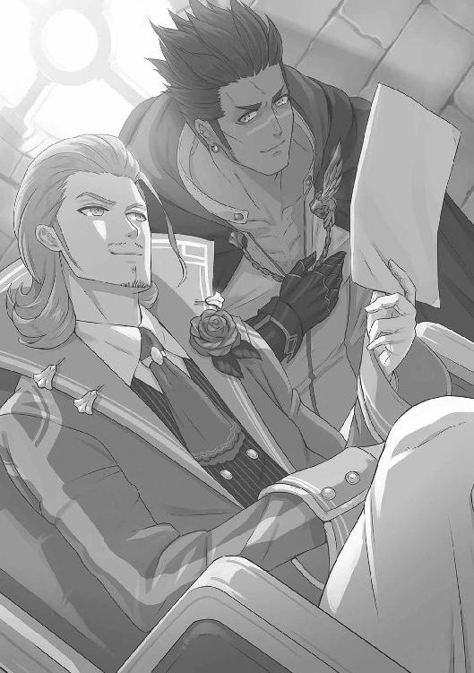
「魔法士数名で宿舎を探索させれば、あるいは」
クロムは洒落た口髭を撫でつけつつかぶりを振って、
「深入りせずともよい。どんな罠が張り巡らされているかわからんからな。いまはまだ表立って動きたくない」
「しかし、近くにはいまだカーラーンの陣があるという話。彼らに先んじられては厄介です。奴らはいつ動き出しましょうか」
「これから半月ほどのあいだでいうなら、奴らが動くか否かは、五分五分。わたしはそう見ている」
とログエル国王子は答えた。
「......まず、小規模の先遣隊を谷に差し向けてくるというのは考えられる。奴らも聖剣団不在の噂、その真偽を確かめたいはずだ。ドレームの本隊はまだ動くまい。兵を動かすとして、数は......三百、いや五百ほどか」
「その折り、クロム殿下におかれましてはいかがなさいます。谷を無償で守る英雄になられますか、それとも」
「さあ、よいようにするさ、としかいえんわな」
クロムは相変わらず柔らかな笑みを持続させている。それからちらりとダイモスの顔を見あげて、
「フィーネどのたちが塔に向かうと聞いたときはやや肝を冷やしたが──、その辺りにぬかりはなかったろうな」
「こちらの素性を明かすまでもなかったのが幸いしました。『奴』もああいう性格ですし、気にも留めておらんでしょう」
と、なにやら彼らのみで通じる秘密の会話をしていたところで、ホールにエプロン姿の女性がやってきた。ヤミーだ。掃除の最中らしい。彼女の姿を認めると、クロムは地図を読みかけの本に挟みながら、
「ご苦労さま。こちらでいっしょにお茶などいかがです？」
如才なく対応する。そうしながら、片手でさりげなくダイモスの腰を押しやり、退出するように促していた。
ダイモスがひと声挨拶してから立ち去っていって、二人きりになった。
ヤミーはいつになくもじもじしている。辛抱づよくお茶に誘っているうち、ためらいながらも寄ってきた。来るなり、
「あのう、不躾ながら、ひとつ、殿下にお頼みしたいことがあるのですが」
「なんです？」
見ると、ヤミーの普段は青白いとさえいえる頰が赤らんでいる。こういう雰囲気に王子は手慣れていた。
「遠慮せず、なんでもおっしゃい。わたしはうら若い女性の頼みごとを無下にはできない性分でしてね」
柔らかく笑いかけてやる。ヤミーの顔が意を決したように引きしまった。
と、
「で、殿下のお姿を絵に描かせていただいてよろしいでしょうか？」
意外といえば意外すぎる申し出だった。
若干クロムは戸惑ったが、断る理由もない。大方、その絵を枕もとにでも飾りつけるつもりだろう。身分ちがいを意識すればこそだ。
ヤミーはさっそく画材を持ってきて、先ほどまでの態度とは想像もつかない図々しさで対面に腰をおろして絵を描きはじめた。
その目に熱意がある。
なにやらクロム王子が想像していたような雰囲気とはちがう。それもそのはず、ヤミーの熱意とは恋愛のたぐいではない。いかにも洗練された王子の外見や物腰に惹かれてはいるものの、それはつまり彼女が理想とする『聖剣団の新メンバー』にふさわしいとにらんでいるからにほかならない。
「ああ、なんて気品のあるお顔立ち。こういう方は、むしろベアラーさまのような大男と絡ませたほうが『映える』かしら。いやいや、先ほどいらっしゃった親衛隊の隊長さまも野性的な魅力があって素敵だったわ。まずはああいった『近場』で組みあわせしたほうがより臨場感が出ていいかもしれないわねえ。あとで呼び止めてあの方の絵も描かせていただかねば」
ヤミーの脳内ではどのような光景が展開されているのだろうか。ちょっと想像したくもないが、さしものクロム王子もなにかよからぬ予感を抱いて、見た目にはにこやかな笑みを持続させながらも、背筋にいいしれぬ怖気を走らせていた。
一方。
谷を西に旅立ったフィーネ、ダークは、いったん馬から降りて〈竜脅し〉と呼ばれる巨岩の群れが積み重なった難所を越えると、目的の遺跡に辿り着いていた。ちなみにゴルボ三人衆が荷物持ちに駆り出されている。
二人と三匹は遺跡に足を踏み入れた。
破損した外壁の向こうに、やはり崩れた尖塔やら円柱やらの瓦礫が積み重なるそのさらに奥、確かに塔がそびえたっている。聞けば、古の氏族がつくった十階建ての塔で、かつてその最上階は神と交信するための儀礼の場として用いられていたという。
「ほう、あれが」
無造作に歩み寄ろうとしたダークは、不意に足もとからこちらをぎょろりとにらみすえる凶悪な顔に気づいて、
「きゃあ」
と悲鳴をあげて跳びすさった。
フィーネがすぐさまダークを押しのける勢いで前へと出たが、それは古い時代に信仰された獣面人身の偶像に過ぎなかった。顔の部分がもぎ取れて路面に転がっていたのだ。
「大丈夫。ただの像ですよ」
ぽんぽんと像を叩くフィーネに、
「ば、馬鹿」顔を赤らめながらダークは声を張る。「こういうのがいつ動き出して襲いかかってくるかわからないんだ。ここはすでに魔道士の領域なんだからな」
「そういうものですか」
「そういうもの。まったく、素人はこれだから困る」
自分をごまかしつつ、しかし今度はきっちりフィーネを前に押し立てて塔に接近。
てっきりゴーレム数体が守りをかためているものだとばかり思っていたが、妨害らしきものはなかった。
ダークは疑い深げに扉の前をいったり来たりしながら、なにか恐ろしげな罠のひとつもないかと警戒していたが、
「時間が惜しい。さっそくお邪魔するといたしましょう」
フィーネはごくあっさりと入り口の扉を開けた。なかから黒い毒状の性質をもった霧が一気にあらわれ、フィーネの顔面に降りかかる──かと思いきや、そんな様子もない。扉の向こうは石造りの床がまっすぐつづいていて、遠方が闇に吞まれていた。
「なんだよ、拍子抜けさせやがって」
おびえた自分を隠すために、ダークはランタンに火を灯しながら、先頭切って歩き出した。
「ご大層なのは見た目だけだな。こうなりゃ魔道士のところまで一直線だああああ」
気合いを入れて叫んだのではない。「一直線だ」といったその瞬間、足もとの床がぱっくり割れて奈落の底に落ちそうになったのである。フィーネがすかさず腕を差しのべ、手を摑んでいなければ、まさしく底も見えない闇に『一直線』だったろう。
「大丈夫ですか？」
「当たり前だだだだだ」
「声がおびただしく震えてらっしゃいますが」
「気のせいだだだだだ」
ダークは歯車仕掛けの人形のようにぎこちない動作で服を払いつつ、
「し、しかし、入り口から落とし穴とはいい度胸だな。迷宮の基礎がわかってねえ」
いうなり、懐から紙と筆を取り出した。
「ええと、前方数ブロック先で突き当たって、左右に道がつづいて......」
「なにをしてらっしゃるのです？」
「マッピングだよ、マッピング。こうして一歩ずつ歩いては地図に描いていけば、道に迷うことも、同じ罠にかかることもなくなる。面倒に見えて、これがダンジョン攻略においていちばんの近道になるわけだ」辺りの地形を描き留めてから、「よし、定石どおり、左手の法則でいこう。おれについてこい」
意気揚々、歩き出した。気が短いようでいて、ダークはこういう細かい作業を案外好んでいるらしい。
「懐かしいな。昔、悪ガキたちといっしょに近所の洞窟を探検したときも、おれがマッパー、つまりマッピングを担当する係だったんだ。白い紙を一マスずつ埋めていくのが気持ちよくってさ。あ、多分この角を曲がったら、さっき途中まで見えていたこの道とつながるぞ、って予想して、それが本当につながったときの快感ったらなかったね」
「そうですか」
フィーネはわかっているのかいないのか、いやおそらくはわかっていないのだろうが、ダークが浮き浮きとしているので、なんとはなしに彼女も楽しそうに相槌を打った。
「ダンジョンってのは昔の城によくあった地下牢のことさ。それとは別に、城の地下には宝が眠っていることが多くて、盗まれないように石造りの迷宮仕立てにしていることが多かったんだ。それを大昔の探検家たちがごっちゃにしてダンジョンって呼ぶようになってから、こうした謎や宝のありそうな迷宮のことを総じてダンジョンというようにもなったのさ」
ダークはどこから仕入れたかわからない豆知識をさんざん語ったあと、
「こういう探検の経験はないのか？ 英雄クラスだったら、ダンジョン攻略くらいはやったことあるだろ」
「以前、古代の地下神殿に潜ったことがあります。わたしの身体にあう甲冑を妖精族に打ち出してもらうため、その素材を求めて」
「いま身につけているそれのこと？」
「ええ。父上の依頼どおりに打ち出してもらいました。わたしの意思に即して形状が変化するようになっていて、普段は腰や手足といった部分にだけついていますが、わたしが心のなかで命じれば全身をよろう甲冑になるのです」
いまのフィーネは軽装そのもので、それは彼女の強みである身軽さを発揮するにはちょうどいいのだが、だだっ広い戦場に立つとなるとどこから流れ矢が飛んでくるやらわからないので、全身を覆う型の甲冑が必要になるという。それで、ダークもはじめて戦場でまみえた際には相手を小柄な少年兵と見まちがえたのだった。
「こうした甲冑をつくるには、当然特殊な材質が必要になったので、古代に栄えた王国の地下神殿にそれが宝として眠っている情報を入手するとすぐさま向かうこととなりました」
「へえ。そのときは誰がマッパーだったんだ？」
「ほかならぬゲルウィンです。彼の持っていた羊皮紙は、魔法によって自動的に地図がつくられる仕組みになっていました。四方に空気の波を広げて、その跳ね返りを利用して壁や道のありかを判断するのだそうです」
「けっ、邪道が」ダークは嫌そうに顔をしかめた。「手描きの苦労と楽しさを知らずしてダンジョンを語るなかれ、って昔からいうんだよ」
「そういうのは懐古趣味というんだそうです」
「な、なんだと!?」
〈魔人形遣い〉ゲルウィンといえば、二十代後半のはずだから、本来十七歳のダークのほうが若い。
「いずれにせよ」突然フィーネが膝を落とし、腰に手をかけた。「そのマッパーのおかげでわたしも父上も戦いに専念できました。どうやら、今回もそうなりそうです」
ダークがランタンをかざした向こう側に、蠢く影があった。鎧兜をつけて、人の四肢を備えてはいるが、あきらかに人間ではない。というよりも、かつては生きた人間であったというべきか。
「ひい」
思わず声をあげてダークはあとずさった。噂に聞いたことはあったが、こうして間近にするのははじめてだ。全身、白骨化しているというのに意思ある生き物のように接近してくる。いわゆる骸骨剣士だ。顎の骨を上下に打ち鳴らし、けたけたと笑っているように見えた。
それが横に三体、縦に二列の大所帯で静かに近づいてくる。白骨化した手には赤い錆を吹いた剣や槍が漏れなく握られていたが、フィーネは恐れも驚きもせず、腰の聖剣に手をかけたままダークの前へと進み出た。
「おそらく、以前ベアラーに目覚めさせてもらった亡者をゴーレム兵代わりにしているのでしょう。あなたはマッピングとやらに集中してください。戦いはすべてわたしが引き受けますので」
などと男前の発言である。
フィーネの頭の左右についている羽根状の髪飾りが、先ほど彼女自身の発した言葉どおりに形状を変化させて、頭部を覆う兜となっている。いわば戦闘態勢だ。
さしものダークも男性としてのプライドをくすぐられるかに見えたが、
「と、当然だ」ある意味で男らしく胸を張って後退した。「パーティーにはそれぞれの役割、ってのがあるからな。おれはおれで自分の仕事をまっとうするから、おれには敵を一匹たりとて近づけるんじゃないぞ」
「承知」
いうなり、床を蹴ってフィーネは敵集団に躍りかかった。骸骨の群れもこれに応じて剣や槍を振りあげる。
フィーネの強さは、まずその踏み込み、そして斬撃の速さにある。
敵に接近したときには先頭の骸骨剣士の首が飛んでおり、返す一撃で槍を払うと、惚れ惚れするほどタイミングの見事なバックステップを踏んで、突撃にかかっていた敵の腕を切り離した。
戦闘が片づくまで数分とかからなかった。
が、やはりさほど時おかずして、次の敵があらわれる。
骸骨剣士に、腐敗した肉体そのままといった姿のゾンビ、人型サイズの青銅製ゴーレムに、羽のある怪物をかたどった彫像ガーゴイル。
いずれも、意思のない亡者や物体に、魔法で命を吹き込まれたものたちばかりだ。
なるほど〈魔人形遣い〉の異名は伊達ではない。そのことごとくをフィーネは斬り伏せていったが、ダークには気がかりなことがあった。
「一階からやたらと敵が強いな」
「そうですか？ これなら、いくらでも退治してまわれそうです」
フィーネは強がったが、先ほどのガーゴイルとの戦いで頰に引っかき傷を負っているし、甲冑はあちこちがへこんでいる。おまけに連戦に次ぐ連戦でさすがに疲れが見えはじめていた。
「魔法使いのダンジョンってのは、普通、塔だったら最下層、地下に潜るタイプの迷宮なら最上層にいちばん弱い怪物がいるもんだ。ダンジョンを支配している術者ってのは大概が入り口からもっとも遠い場所にいる。当然、その術者に近づくにつれて魔力の影響も増していくから、術者によって操られる、もしくは呼び出される怪物ってのは強くなっていくものなんだよ」
「なるほど」
いったそばから敵の気配が近づいてきて、フィーネは剣を掲げた。いちいち腰に戻している暇もない。
「くそっ、このダンジョン、遭遇率が高すぎるぞ！」
「魔法使いの居城なのですから、それは障害が多くて当たり前でしょう」
「それこそ古い考えだ、懐古趣味だ。ダンジョンってのは術者の遊び心も必要で、最近では遭遇率の高さは嫌われて......ぬわ、後ろからも来た！」
まったく息つく間とてない。
厄介なのは怪物の集団ばかりではない。油断していると、通路や室内に配置された罠が次から次に発動する。
入り口付近でダークがかかったていどの落とし穴なら無数に口を開けていたし、落とし天井、壁から飛び出してくる槍ぶすま、坂道から転げ落ちてくる鉄球、なんでもござれ。
ダークも、しまいには先頭を歩くのも嫌になって、ゴルボ三人衆に先行させることにした。いわば『罠よけ』に使おうというのだ。
が、これもさほど効果を挙げたとはいいがたい。好奇心旺盛なゴルボ族は触れんでいいスイッチにわざわざ手をかけては炎や酸の罠を浴びたり、あきらかに怪しい床を踏み抜いては、「ぶうううう」と声をあげて下の階層にまで落ちていったりした。
「くそっ、使えん奴らだ」
「あの、お仲間は大丈夫ですか？」
「あいつらなら心配ない。戦闘能力は低いが、頑丈さと悪運の強さは天下一品だ」
なるほど主人に似ている。
なにしろダークとともに八度も聖剣団と戦い、その都度生きのびてきた連中だ。剣で討たれようが、魔法で吹き飛ばされようが、次の日には割合けろりとした顔でダークと合流している、ということがいままでも数多くあった。
塔に入って五、六時間ほどは経過したろうか。
苦心しながらも五階付近に到達したフィーネご一行だったが、ある角を曲がった途端、なにやら身体に違和感をおぼえた。ふっと一瞬身体が浮くような感覚があったかと思うと、すぐにもとに戻る。なにかの錯覚かと思われたが、角の向こうを透かし見たダークは、がっくりと膝を折った。
「どうしました？ また敵があらわれましたか」
ならば斬る、とばかりにフィーネが剣を手に前へ出ようとするのを、ダークは手で押しとどめた。
「あれを見ろ」
ダークは低い声でいいつつ、前方を指差した。
ぱっくりと床が黒い口を開けていて、その近くに重々しそうな扉がある。
「一目瞭然の罠ですね。あの扉はなんでしょう。いよいよ強敵が待ち構えている証でしょうか」
「手前は鳥頭か。ありゃ、塔の入り口だよ」
「入り口？」
「そうだよ、転移の罠にかかったんだ。苦労して奥へ進んだ探検家を魔法であっという間に入り口に戻しちまう罠さ。くそっ、また最初からやりなおしだ！」
ダークが絶望を面に貼りつけて、床を拳で殴った。
そのとき、最初に彼が落ちかかった落とし穴から、なにやら青い煙状のものが立ちのぼった。
ダークが悲鳴をあげて後退すると、その空隙を埋めるようにフィーネが前へと出る。もはやこの塔で何度となく繰りかえされた行動は、一種のコンビプレイと呼びたくなるほど円滑であったが、その直後、はっとフィーネは息を吞んだ。
いまのいままでいかなる怪物の集団にも動じなかった少女だが、その顔にあきらかな動揺の色がある。
無理もなかった。
青い煙状のものは立ちのぼっていくにつれて、人の姿を形成していた。脚、胴体、胸、肩とあらわれて、そして最後に渦を巻いた煙が眉目秀麗な男性の顔を描き出すと、
「ゲルウィン」
とフィーネが声を発した。
４
青白い影が点滅しながら、ダーク、フィーネの眼前で揺れている。
それは確かにダークが一度戦場であいまみえた男だった。瘦身の若者で、竜をかたどった飾り輪の下にある顔はうつむき加減だ。
「ゲルウィン、そうですね」
「確かに──。だが、あれは幻影だ」
こっそりダークがつぶやいたとおり、実体はここにはない。おそらく本人は塔の最上階にいるだろう。いうまでもなく魔法の力によって、自己の幻影を生み出してこの場に投影しているのだった。
「わたしの声が聞こえますか？」
「誰でもよい」
若いのに、張りのすくない、どこかしゃがれたような声が聞こえてきた。これも遠く離れたままゲルウィンの声のみが魔法で届いているのだ。
「誰が、何度来ようと同じことだ。わたしはもうどこにもいかない。誰とも行動をともにすることはない。聖剣団の人間であろうと、大鷲の紋章を身につけた者であろうと、わたしにとっては同じこと。もうかかわりのないことだ。わたしはここで書物の山に埋もれて生きていくつもりだ」
「ゲルウィン、待って。わたしの話を聞いてください」
「もともと向いていなかったんだ。太陽の下で誰かと生きていくことなど。いままでも、グラジスが無理やり手を引っぱっていたから、仕方なくついていったに過ぎない。わたしはもうなにもこの手の内に望まない。ただひとつ、望みがかなうとしたなら、どうか静かに、ひとりきりで暮らさせてくれ。そうでないというのなら、こちらも本気を出す。何者であろうと、命の保障はしないぞ」
ゲルウィンには相手がフィーネだとわかっているのか。それとも誰が来ても同じメッセージを返すだけの仕組みになっているのか、フィーネがいくら声を張りあげて制止しようと、聞く耳持たず、幻影は静かに消え去っていった。
いったんダークたちはラグナの谷へと引き返した。
長いキャンプの用意はしていなかったし、さすがのフィーネも疲弊している。ダークが一時撤退を提案すると、フィーネは声もなく頷いた。体力ばかりか、精神面でも著しく消耗しているかのようだ。ちなみに引き返す途中で、同じくぼろぼろになったゴルボ族とも無事合流を果たした。
夕暮れ間近な谷。
ダークは谷に入る直前でゴルボ族を『解散』させた。
「よし、あまり遠くにいくなよ。ネズミは食べても人喰うな。いつもの標語だが、忘れないように。以上、解散！」
ゴルボ族はぶうぶうと鼻を鳴らしながらそれぞれの帰途につく。といっても、彼らがいったいどこに住んでいるのか、ダークにもよくわからない。ご主人であるダークがこの谷をしばしの生活空間と決めたことで、彼らも近くに洞窟だか木のうろのなかだか、ともかくそれぞれの住居を見出しているはずで、このあたりは命令されずとも自然にできるようになっていた。
感覚の『共有』を解いたことで、ダークもすこし心が軽くなった。他人のぶんまで背負っていた荷物を床においたときの感覚に近い。
宿舎に戻ったあと、ダークは手描きのマップを片手に、
「さて、これからどうするかな」
半ばひとり言のようにいった。フィーネは塔からの帰路、ほとんど無言だった。いまも宿舎内の食堂で、コップに入った水を眺めているきりだ。
「今度はもっと大所帯で攻めるべきだな。あれだけの怪物とトラップ相手に数名で挑むのは分が悪い。ちょうどいい、ログエルの旦那が兵をつれてきてるだろう、あれを借りよう」
「そのようなこと、できません」
やっとのことでフィーネが口を利いた。
「どうして」ダークはじろっと少女の白い横顔を見据える。「ありゃ、女にはいい顔したいタマだぞ。あんたがちょこっと上目遣いをして、『ねえ、王子、フィーネのお願い聞いてくださらないかしらん？』って頼み込めば一発だ」
「馬鹿なことをいうものではありません！」
フィーネも珍しくきっと鋭い視線を返す。首筋までほんのりと赤らんでいた。
「王子には十分よくしていただいています。犠牲を承知の探索に、かの国の方々を巻き込むわけにもいきません」
「かたいねえ。じゃあ、どうする気だ。放っておくってのか？」
「はい」
「ほらな。だったら、もっと具体的な策を練って......って、『はい』!?」
仰天したダークからちらっと視線を外して、フィーネは顎を引いた。
「ゲルウィンがああいう以上、無理強いはできません」
「おい」
「父上は、団員の誰に対しても、決して無理をいうことはありませんでした。どのような困難な作戦の前にも、頭ごなしに命令を下すことなく、それぞれの自主性を尊重していました。どのような手を使ってであれ、ゲルウィンを強引に引き戻すことに成功したとて、それはもう聖剣団ではありません」
「甘いこといってんなよ」
ダークはやや剣吞な声を出した。この際、気づかぬ振りをしてやろうと思っていたことだが、
「『引き戻す』ってからには、ゲルウィンはなにか任務があってあの塔にいるわけじゃないんだろ。どんな事情があるかは知らないが、あいつはラグナの谷に迫った危機をほっぽりだして塔に引きこもっているわけだ」
「──」
痛いところを衝かれてか、フィーネは口を閉ざした。
「だったらこっちだって手段を選ぶべきじゃない。尻のひとつを叩いてでも塔の外に引きずり出すべきだよ。それに、ゲルウィンの話を思い出してみろ。『グラジスに無理やり引っぱられた』とかいってたろうが。それと同じことをするんだよ」
「父が無理にゲルウィンを連れ出したなど、そんなはずはありません。あれは、ゲルウィンが自分に言い訳しているだけのことです」
フィーネはいうと、グラジスと賢者ゲルウィンの『馴れ初め』とやらを、頼んでもいないのに語りはじめた。
──ゲルウィンはわずか十三歳でかのフォーセルン魔法学院を首席で卒業し、若くからその名を知られていた。なにせ八歳のときには誰にも教えられることないまま自然と〈手〉を生み出して、木々や石を操っては同年代の子供たちに驚かれ、また気味悪がられていたというから、早熟すぎる天才児であったのだ。しまいには自分がどれほど心を切り離せることができるか限界に挑戦したところ、あまりにも複数の〈手〉を解き放ってしまい──すなわち心を切り離しすぎたために──、どれが自分の本当の心かわからなくなって、ひとしきり多重人格症のように振る舞った挙句に昏倒してしまった。
権威ある病院も寺社もこれを治療することはできなかった。両親は嘆き悲しんだが、数日もしないうち、噂を聞きつけたフォーセルンのほうからゲルウィンを迎えに来た。彼を治癒させ、この先も導くことができるのはわれわれだけだ、と学院の遣いはいった。いわばスカウトである。
先述したとおり、彼は優秀な成績で学院を卒業した。
が、そのような幼年期の経験が影響を与えたものか、彼は極度の人見知りに陥っていた。在学中もほとんど人との交流を持たなかったようで、なかには彼の声を聞いた覚えもないという教師や級友も数多くいたほどだ。
ゲルウィンは学院を卒業したのち、どこの国や勢力が仕官の誘いをかけてきても決して首を縦に振ることはなく、ひとり放浪したのちに、『住まい』にうってつけの山城を発見した。狭い尾根道以外に谷を登るすべもない、天嶮の山の頂きにある古城で、ひとりこもって研究に明け暮れるには絶好の場所であった。ゲルウィンはゴーレム数体を駆使してここを改築すると、たったひとりで生活をはじめた。つまりはいまと同じような状態になったのだ。
城にはやはりトラップと強力な怪物を配して、決して余人の接近を寄せつけなかった。とある国の大臣がゲルウィンをスカウトするため兵七百を送り込んだが、果たせず、帰ってきた兵の数は出立したときの一割にもならなかったという。
そんななか、魔城ともいうべきこの地へ単身乗り込んだ愚か者がいた。
あまたの罠も、息つく暇とてなく襲いかかってくる怪物の群れも、彼の前進を妨げることはできなかった。七百の兵が果たせなかったことを、彼は歯を食いしばり、血を噴きこぼしながらも、着実に一歩ずつ進んで果たそうとした。
なぜかというに、それはこの愚か者がグラジス・エストールだったからにほかならない。
そして最上階において、彼はゲルウィンその人と邂逅した。
「やっと会えたな、〈魔人形遣い〉」
「わ、わたしを討つ気か？」
謁見の間においてゲルウィンは必死で目を背けながらいった。恐れているのではなく、単に人と会話するのが苦手なだけだ。
「そ、それとも、城に眠っている金銀財宝を奪いに来たのか？ そんなものは改築のときに一箇所に集めて捨てておいた。ほ、欲しいなら、好きなだけ持っていけ」
「まさか。欲しいのは金銀財宝でも、城を攻略したという勇名でもない。欲しいのはおまえだ。おれはおまえを迎えに来たのさ」
「いい、いい、余計なことを考えないでくれ。み、みんな二言めには同じことをいうんだ。外は楽しいぞとか、こもっていても仕方ないとか、親だっていつまでも若くない、将来のことを考えろとか」
「引きこもりのガキか」
思わずダークはフィーネの回想に割って入ったが、フィーネは構わずつづけた。
「おれはなにもいわないさ」
フィーネの父、グラジスはかぶりを振ったという。
「みんながいうほどに外は楽しくない。苦難と悪意と痛みに満ちている。それと引き換えに得られる楽しみなんてのは、羽毛ひとひらぶんもないのが現実だ」
「だ、だったら」
「だが、〈魔人形遣い〉。ほかはどうあれ、おれのそばは楽しいぞ」グラジスは笑った。「世のなかの、ほかのことも、その他の人間のことも、なにひとつ気にするな。おれひとりを見ていればいい、おれひとりの背中についてくればいい。安心しろ、おれは決しておまえをひとりにさせはしないさ」
手を差しのべた。
グラジスとて、無傷で辿り着いたわけではない。むしろ全身に手傷を負っていた。腕から流れ出た血が、指を辿ってその先端から滴り落ちる。その指にしても一本はあきらかに折れていた。
ゲルウィンはそれでも痛みなど感じないふうに笑いかけるグラジスになにを見たか。
以降、彼は聖剣団の欠かせぬ力と存在となったのである。
「『なったのである』──ね」
ダークはまたすぐさま口を挟んだ。
「にしても、妙だな」
「なにがです？」
「矛盾してないか？ ゲルウィンはひとりきりでいたいんだろう。なのに、誘い文句が『ひとりにさせない』ってのはさ。話を美化しすぎて、その辺、まちがって伝わってるんじゃないかね」
「失礼な」
フィーネは小さく頰を膨らませた。時折驚くほど大人びた言動を取ったり、プロフェッショナル意識が高く見えたりする彼女だが、こと、父や聖剣団のこととなるとムキになる。
「見習いのあなたにはおわかりにならなくて当然のことです」
「自分だって見習いじゃねえか」
「わたしは、生まれたときより団長グラジス・エストールの娘であり、そして聖剣団の仲間です。彼らの絆は誰よりもわかっています」
またもや首筋まで紅潮させたが、さすがにいったんわれに返ったらしく、一回咳払いして、
「ともあれ、ゲルウィンのことはひとまず考えなおしましょう。わたしも、谷を防衛するほかの手段を考えてみます」
もっともらしいことをいいはしたが、不機嫌になってダークを追い払いたくなったのは明白だ。
「そうかい」
ダークはひとつ欠伸をして、宿舎の自室に戻った。
見習いだから、当然ラッセルやゲルウィンなどの部隊長にあてがわれているようなものではない。といって、宿舎を掃除する際にわかったことだが、ひとりひとりが名立たる英雄の割に、彼らの部屋だって思った以上に豪華なものでもなかった。
ダークは粗末なベッドの上にごろんと横になった。近い位置にある天井を見あげている。
（今日は）
散々な目にあった。
思い返すだけで、身体ばかりか頭までくたびれるような思いがするほどだ。
ダンジョン探索は好きなほうだが、あのように息つく間とてないのでは、マッピングや探検を楽しむこともままならない。
またあの罠と怪物だらけの塔へいかなくて済むのなら、
「好都合だな」
ダークはひとりごちて、手に持ったままだった地図を改めて眺めた。
苦心の末に描いた地図だが、これも用済みだ。落書きなどしてみた。それでも気が晴れず、紙の両端に手をかけた。縦に二つ、それから重ねあわせて横にと引き裂く。宙に放ると、切れ切れになった紙片が舞った。思ったより高く飛ばなかったので、むしゃくしゃしてひとつを拾いあげ、丸めて窓にぶつけた。
（くそっ）
なにやら納得がいかない。
（どうして、やれることをやらねえんだよ）
グラジスは部下に無理強いしなかった。だから自分もそうしたい、それが聖剣団の絆なのだとフィーネはいう。敵軍勢が間近に迫っているというのに。
馬鹿げた話だ。
としか、ダークには思えない。自分たちのことを美化しすぎて、逆に自分の首を絞めている。
それが、仲間だという。ダークには『当然』わかりもしない、聖剣団の絆だと。
（そうか、わかりようもないか。『当然』だな、おれには仲間なんていなかった）
ダークは自嘲気味に笑った。笑ってから、さすがにニヒルな自己陶酔に駆られすぎだと気づいた。口に溜まった不味い味のする唾を吐き捨てる。そのまま顔面に降りかかってきたからたまらない。
ダークはひとりで罵詈雑言を吐き捨てながら顔を拭った。
（ちくしょう）
目を閉じる。
納得のいかなさからくる苛立ちを通り越して、徐々に怒りさえもが募ってくる。
（仲間には無理強いしたくないだって？ そのほかならない仲間が窮地に陥っているとき、耳も貸そうとしないのが仲間だっていうのか？）
谷からは今日も逃亡していく人々が多数いたという。そんななか、宿舎に留まり、今日もチラシづくりに精を出していたヤミーや、当たり前のように掃除をつづけるジョアズ婆さんたちのほうがまだしも仲間だという思いがダークにはある。
「ほかの手段を考える」
ともフィーネはいっていた。
二千以上のカーラーン軍が谷の近くに陣を敷いているのだ。明日にも、いやあるいはこうして横になっているいまこの瞬間にも、「敵襲」の声が窓を叩いたっておかしくない。それを防衛する手段を考えるという。
（あるものか）
とダークには思える。
が、フィーネの性格からして、ただあの場を言い逃れるためだけに口にした言葉ではあるまい、とも思えた。つまり、彼女は本気で考える。二千の軍勢と、統率の取れていないラグナの谷のわずかな兵力で、どう戦うべきか。
聖剣団の見習いでしかない十六歳の少女が、たったひとりでラグナの谷の無事と責任を、そのちっぽけな両肩にかけて戦おうとしているのだった。
「そうか」
彼はもう怒っていなかった。むしろ、どこか楽しげに口の端が歪んでいる。
ダークは自分のなかに起こった、微小だが、確実な変化に気づいていたろうか。
目を見開いていた。
暗がりのなか、小ずるそうな光が左右一対で揺れている。
「それをわかっていながら、かかわりあいたくねえってか。塔のなかで、書物の山に埋もれて生きていたいってか。わかったよ、ゲルウィン。おれはあんたの『仲間』じゃないからな、気遣ってやるような義理も価値もない。かかわりあいたくないってのなら、無理やりにでもかかわらせてやるからな」
翌日に目覚めたフィーネ・エストールは食堂に降りてみて驚いた。
いろいろと物が消えている。テーブルに椅子が何脚か、それに花瓶にいたるまで。
応接室やホールでも同じことだった。窓のひとつからはきれいさっぱりカーテンが取り払われている。
宿舎の管理人ジョアズに聞くと、朝早くにダークがこれらのものをまとめていたらしい。
「聖剣団の作戦に必要なんだ」
といって。
もちろん、フィーネは『作戦』のことなど知らない。
（まさか）
という思いが小さな胸をかすめた。正直者で、根がまっすぐで、人を疑うことを知らない彼女には珍しい疑念が湧いてきたのだ。疑念──というか、まあ、状況を考えれば、普通の人は同じ結論に達するとは思うのだが、要するに、ダークは聖剣団ゆかりの品々をせめてもの『戦利品』として強奪し、さっさと谷から逃げ去ってしまったのではないか、と。
フィーネはしばし朝食を摂るのも忘れて、ホール内で立ち尽くしていた。
「いけない」
父が手慰みにつくったお手製の壺が消えている。決して出来がよいものでもなかったが、フィーネにはなにより大事なものだ。さすがにこれは取り戻さなければならない。
とともに、駆け出してから聖剣ゼスのことを思い出した。
（ああ、そうだ。このままではダークの身も危うい）
敵には無情のフィーネとはいえ、さすがに一度は同じ釜の飯を喰った相手が、どこかの路地か荒地で血まみれになって転がっている光景を思えば寝覚めが悪い。というか、自分で魔法にかけておいて思い出すのがいささか遅い気もする。
ともあれ、宿舎を飛び出したフィーネだが、さらに驚かされる羽目になった。
街の雰囲気が明るい。昨日まで、いつ逃げ出したものか、いや自分にはほかにいく場所などない、と顔をあわせればそのような話題で持ちきりだった人々が、今日は談笑しあっている。ここのところ休みがちだった店までもが営業していた。
「おはよう、フィーネさん」
「おはようございます」
挨拶の声も表情も明るい。それに応じたフィーネは、彼らが次に発した言葉に耳を疑った。
「ゲルウィンさまがお戻りになられたそうですね」
「さっそく、谷を守るための魔法をかけられているとか」
寝耳に水とはこのことだ。が、ここで表情に出しては明るい雰囲気にも水を差す、ということくらいはさすがの彼女でも理解できる。あいまいな態度で頷き返しながらも、
「あの。いったい、どなたがそのことをおっしゃっていたのでしょう？」
「あの新しく入った見習いくんですよ」主婦がぽっちゃりした手を振っていった。「早くから忙しそうにしていました。なんでも、相当大がかりな魔法だから前準備が必要だとかいって、街の男手を駆り集めて谷の外へいったようです」
ダークにまちがいない。
頭のなかを「？？？」と疑問符でいっぱいにしながら、フィーネはともかく場所を聞きつけて急行した。
谷から南東にいくこと三キロほど。谷の一端を形作っている岩峰を背にしながら、そこで大勢の人手を発見した。ダークが村人たち十数名の指揮を執って、地面に穴を掘らせている。そこに、椅子やら巻物やら、つまりダークが宿舎から持ち出したらしい品を埋めていた。
「一見、普通の壺や椅子に見えるだろうが、どれもこれもゲルウィンどのの魔法がかかった代物だ。大事に扱えよ。傷ひとつつけるんじゃない」
ダークが声を張りあげているのが聞こえる。が、無論のこと、宿舎の備品にゲルウィンの魔法がかかっているなどということはないはずだ。
「ダーク！」
と声をあげて近づいていくと、少年魔法使いは「おう」と悪びれた様子ひとつなく応じた。
さらに駆け寄って問いただすと、
「噓に決まっているだろう」
ダークはあっさりきっぱり断言した。フィーネは怒るどころではない。さらなる混乱に見舞われながら、
「なぜ、そのような噓を？ 街の人々を安心させるためですか？ しかし、このような目立った行動を取れば、敵に勘づかれてしまいますよ」
「それだよ」
ダークは数朶の雲が浮かぶ青空を見あげた。
「敵に、是非のこと勘づいてほしいのさ」
一方。
カーラーン国とラグナ郷のあいだに築かれた前哨基地に、カーラーンの武将ドレームの姿があった。以前、ラグナの谷を急襲した大隊長ヴァニスの上官でもある。
彼は天幕をいくつも張り巡らせたこの基地で、軍の再編を急いでいた。
聖剣団不在の報は、ドレームの耳にも届いている。ならばいまこそラグナの谷をひと吞みにできる好機だとも思えるのだが、副官のヴァニスはその聖剣団不在の敵軍に討ち取られたというし、いままで何度も苦汁をなめさせられた身であるから、さすがに慎重になっている。
のばし放題にのばした髪を藁でくくりあげ、筋骨たくましい身体を半分ほどもさらした、いわば山賊の親分めいた見た目に似ず、ドレームは猪突猛進だけが売りの武将ではない。
床机にどっしりと腰掛けて各方面に走らせた斥候の帰りを待っている姿には、なにやら余裕めいたものさえうかがえる。
ラグナの谷の攻略に何度も失敗した身だというのに、『余裕』というのもやや場ちがいな思いがするものだが、彼はこのときラグナ郷の攻略のほかにもうひとつの任務を請け負っており、そのもうひとつのほうは着実に成果を挙げつつあったのである。
（これの成功を待ちさえすれば、いくら谷に聖剣団の部隊長数名がいたとしても勝てる）
というほどのものだったが、実のところドレームにとってそれはあまり面白い事態ではない。
理由は簡潔で、他力本願の作戦であるからだ。
（やはり、おのれの不明は、おのれの力でもって払拭せねばならぬ）
たとえ念願のラグナ郷攻略に成功したとて、それが他者の力によるものならば、ドレーム本人に待つ未来は決して明るくない。
「せっかくカーラーンが剣ひとつでのしあがれる国になったのだ。のちのちどうなるかはわからんが、だからこそいまこのとき、後世に残るほどの武名をあげねばならん。そう考えれば、ただ与えられた任務を遂行すればよいというものではない」
ドレームは部下たちにも語っている。
そうであればこそ、ドレームの態度からは余裕と焦りとが代わる代わる顔を覗かせていたのだが、
「ゲルウィンがラグナの谷に結界を張っている」
斥候の持ち帰った知らせにそのようなものがあった。一度はラグナ郷を離れたと見えた〈魔人形遣い〉が、次なるカーラーンの侵攻に備えて谷に守りの魔法をかけているというのだ。
（やはりか）
ドレームは渋面をつくった。うっかりと無策に飛び込めば、敵の罠にかかるところであった。
しかしこれ以上時機を待つというのも、先ほど述べた事情によってドレームには面白くない。
「まずは先遣隊を派遣するか。五百の部隊を谷に向かわせよう」
と半ばほどまで決意をかためかけた。
が、さらに詳しく情報を集めさせると、ゲルウィン本人は遺跡のなかにこもっており、さらにほかの聖剣団メンバーはやはり谷にはいないらしい、ということが確実視されてきた。
「と、なると」
陽射しを避けた天幕の下で、ドレームはひとりごちた。
右手にしていた酒盃が、そのとき音を立てて砕け散った。たくましいその腕がいつしか赤紫に変色している。砕け散った欠片がいくつか皮膚に突き刺さっていたが、血も流れず、ドレーム自身、痛そうな顔ひとつしていない。
「厄介な結界を張ったゲルウィンは、ただひとりきりで塔のなかにいるわけだな」
三章 完全攻略の秘訣
１
ドレームは五百からなる部隊をゲルウィンの塔へと派遣することに決めた。
「聖剣団の部隊長とはいえ、奴はいまひとりきりだ」
ドレームは編制した部隊を前に檄を飛ばした。
「遺跡の周囲を偵察したが、敵影はない。こちらをおびき寄せる罠でもあるまい。いいか、必ずや魔道士を討ち取れ。貴様らのもたらしてくれるよい報告こそ、ラグナの谷に攻め入る進軍のラッパとなろう」
その言葉どおり、ドレームはすでにラグナ郷攻略のための部隊をも編制し終えていた。ゲルウィンを討ち取ればすぐさま攻め入る心づもりでいる。
「おおっ」
指揮官以下、声を揃えて拳を宙に捧げた。
部隊はすぐさま陣を発った。
それからおよそ半日。
遺跡となった瓦礫だらけの街を前に、兵たちが次々と馬から降りていく。
うっすらとした霧の漂う朝だった。そのなかにそびえる黒っぽい塔の影を眺めながら、ひとりの兵士が兜の下にある顔を緊張に満ちさせている。四十代と思しき指揮官はその兵の背中を叩いた。
「おまえには初陣だったな、イアン」
「は、ははっ」
「ウィーバー家の末弟であったか？」
「か、家名に傷をつけぬよう精進いたします」
こちらはまだ十代と見える若者は、色白の頰を血の色に染めながら何度も顎を引く。
「ははは、気負いすぎるな。これだけの数が揃っているのだから大丈夫。おまえは戦いの空気に慣れることだけを考えていろ。下手に手柄をあげようとすれば早死にするぞ」
「は、はいっ」
なかなかに手馴れた指揮官であるらしい。名前こそ知らないが、ダークも見覚えのある男だ。
そう、彼らの姿を目にしている以上、ダークとフィーネもこの遺跡と化した街のなかにいた。もちろんカーラーン部隊とは距離をおいている。倒れた柱や崩れかかった建物の陰に隠れつつ、準備を終えたカーラーン部隊が塔へ近づいていくのを、こっそりとつけていく。
「どうなさるおつもりです」フィーネが隣のダークに囁きかけた。「このまま敵が攻め入るのを、黙って見過ごすつもりですか？」
「いくらお嬢さんでも、あの数を相手にするのは無理だろ。まあ、見ていな」
言葉少なにダークは応じた。
三日前に村人たちを扇動しておかしな仕掛けを施した際、
「備品を勝手に持ち出したのは謝る。けどまあ、あんなのはあとで掘り出しゃいい」
フィーネに問い詰められたダークは、そのときもそ知らぬ顔をしていった。
「掘り出す？ では、なんのために埋めたのです」
「噂に真実味さえ出てくれればよかったんだ。普通の人間は魔法のことなんて詳しくない。あのていどの仕掛けでも、なるほど魔法とはさもありなん、と思ってくれるのさ」
そしてダークの読みどおり、この噂を聞きつけた敵はさっそく動きはじめた。
ゴーン、ルーン、ボーンの三人衆を見張りに使っていたダークは、まだ夜も明けきらぬうち、ゴーンからの『視界』を届けられたことで跳ね起きた。
早暁の大地を、兵馬の群れが土煙を立てながら進んでいく光景が、彼にも『見えた』のだ。
「起きろ、お嬢さん」
ダークは遠慮もなくフィーネの部屋のドアを叩いた。眠そうな顔をした少女が部屋から出ると、すでにダークは着替えを済ませている。
普段は床から出るのが誰よりも遅いダークだ。管理人のジョアズに叩き起こされて、それでようやく寝ぼけまなこのまま部屋から出てくる。しかし今朝ばかりは旅行を前にした子供のように目を輝かせていた。
「さあ、いこう」
といわれて、さしものフィーネもきょとんとなった。
「いこう、とはどちらへ？」
「決まっている、ゲルウィンの塔だ」
「そのことは、前にお話ししたとおり、彼の自主性を尊重し......」
「ほう、自主性を尊重したあまりに、大事なお仲間であるゲルウィンがカーラーンの手に落ちても構わないっていうんだな」
敵軍勢がゲルウィンの塔へ向かっていると聞かされたフィーネは、一瞬にして顔から眠気を払うと、扉を閉め、手早く装備をととのえはじめた。
ふたたび表に出てきたとき、
「いわないことではない」と武装したフィーネは立腹したようにいった。「だから、敵に勘づかれてしまうとあれほど忠告したのです」
「まあ、いまになってあれこれいってもはじまらない。準備はできたか？ ならいくぞ。義勇軍の出発だ」
ダークは鼻息も荒い。それを不審に思いつつも従わざるを得ない立場のフィーネである。
そして向かった先では、すでにカーラーンの部隊が塔を取り巻いていた──、という状況だった。
ダークが口にしたとおり、さすがのフィーネも、五百の部隊に単身斬り込むなどという芸当は不可能だ。が、このまま見過ごしていては、聖剣団の同志に危機が迫る。
（なんとか隙を見て、指揮官ひとりを斃せれば）
フィーネは表情を引きしめながら、聖剣ゼスの柄に手をかけていた。
いよいよカーラーン隊が入り口の扉を開けた。五百の兵が列をなして入っていく──。
と、
「うわあああ」
「たっ、助けて。助けてくれえ」
入ってほどなくして、兵たちの悲鳴が石造りの塔に反響した。ダークはその最後尾から離れること数メートル、こっそりため息をつく。
「なっちゃいねえな。いきなり落とし穴にかかりやがった」
「入り口の落とし穴はダンジョンの定石に反するのでは？」
フィーネ、自覚してかどうか、なかなか鋭く突っ込む。要するに、
（おまえも引っかかったろうが）
といいたいのだが、ダークは、これもわざとなのか、天然で忘れているのかはともかく、
「定石定石と、手引き書どおりのことしかできない奴は大成しないものさ」
などとうそぶく。
なにはともあれ、落とし穴にかかった兵士は五名。うち二名は救出できたが、残り三名の消息は絶えた。さっそく魔道士の塔、その洗礼を受けた格好となったカーラーン部隊であったが、
「敵の挨拶ていどでひるむな。引き返している暇はない。われわれで必ずゲルウィンを討ち取るのだ！」
と指揮官は勇ましい。なぜかダークもそれを聞いて、
（よしよし）
と満足そうだ。
カーラーン隊、前進を再開。
士気はいっこうに衰えなかった彼らだが、ダークたちもさんざん苦労させられた塔だ。しょっぱなから罠が次々と作動しては、カーラーン兵たちの悲鳴をその都度ひびかせる。
落ちてくる天井と床のあいだに挟まれたり、槍や矢の飛び出す仕掛けに身体を射貫かれたり、転がってくる鉄球に巻き込まれたりして、午後を迎えるより早く三十名近い兵が脱落してしまった。
フィーネは最初のうち、敵が罠にかかるたび、
（いまが好機か。いま斬りかかるべきか）
とゼスを腰から抜き払う時機をうかがっていたが、
「まあ待て」
と毎回ダークに止められていた。愚直な武人をたしなめる軍師のごとき態度である。
それが何回か繰りかえされたのち、フィーネ・エストールもようやくのことで、ダークの意図するところに気づきはじめた。
（なるほど）
と目も覚める思いで手を打つ。
（こうして、おびき寄せた敵兵を、塔の罠や怪物で殲滅させる作戦であったか）
心底から感心したフィーネだったが、かと思えば、
「おや、隊長どの。あの柱の傷は、先ほども見かけました」
「ううむ、どうやらもとの位置に戻ったようだな。この三叉路、以前はどちらへいったかな？」
手がかりのひとつもなしに迷宮に挑んだカーラーン兵たちが迷子になりはじめると、
「ちっ。マッピングもしないからこのざまだ。これだから素人は」
ダークはぶつぶつ独り言をいってから、部隊からは死角になる位置で柱のひとつにのぼって、懐から取り出した紙切れをひらひらと落とした。
それが、ちょうどあのイアンという新米兵士の足もとに舞い落ちた。ひろげてみると、なにやら手描きの地図らしきものだ。おまけに汚い字で罠の位置や詳細についても触れてある。
「た、隊長、これを！」
「おお」
指揮官もそれを手にして、顔に喜色を浮かべた。
「おそらく、以前この塔に挑んだ冒険者のものにちがいない。その冒険者がどうなったかは推して知るべしだが──その勇敢なる魂に報いるためにも、ありがたく使わせていただこう。イアン、手柄だったな」
「はっ」
「しかし」と指揮官は太い首をひねって、「あちこち破れて糊づけされているのはなぜだろうな。下端におかしな文章も書かれてある。『フィーネの馬鹿』？」
そのときさっと血の引く思いがしたのはおそらくこの塔のなかでひとりきりだろうが、幸いなことに、フィーネ・エストールは別のことが引っかかっていたからそのことには触れず、
「どうして、わざわざ敵に塩を送るような真似をなさるのです。このまま罠にかかって自滅していただいたほうが助かるのに」
「ま、まあ、黙って見ていろ」
冷や汗を拭いつつ、ダークはそれでも自信たっぷりに応じた。
さて、地図のおかげで罠を回避できるようになった部隊であるが、塔の脅威はもちろんそれだけではない。次から次へと魔法で偽の命と本能を吹き込まれた怪物どもが、群れなして襲いかかってくるのだ。
「来たぞっ」
「斥候隊、後ろへ。戦闘配置だ！」
さすがによく訓練された軍兵たちは、ダークのように取り乱すこともなく、統率の取れた動きで応戦する。そもそも魔物たちと行軍する機会の多い彼らは、いちいち骸骨剣士やゾンビなどに恐れおののいてはいられない。
カーラーン兵は通路の道幅に応じて、前線に兵四、五名を投入して怪物たちと戦い、彼らが負傷したり疲弊したりしたら、すぐさま後列の兵と交替する──、という作戦で長期戦を戦うつもりらしかった。
これは功を奏した。カーラーン隊は人数が多いから、いつでも元気に満ち満ちた兵が戦闘を担当することになる。この交替は頻繁におこなわれ、新兵イアンもいく度となく前線に投入させられた。
最初こそ甲冑をがちゃがちゃ震わせながら、繰り出される爪やら剣やらに、過剰なほどの動きで逃げまわっていたイアンだったが、二度、三度と実戦を経験するたびに慣れてきたらしい、足の動きや剣さばきに余裕が出てきて、五度目となると、骸骨剣士一体の頭部を刎ねた。
「ほう、やるねえ」
ダークたちはというと、最後尾からきっちり同じ距離を保持したまま見物を決め込んでいる。
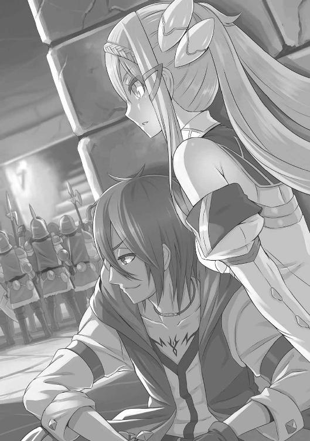
「おっ、イアンとやらの横にいる奴、なかなかだぞ」
懐に隠し持っていた煎り豆などをポリポリやって、ダークの気分としては、旅芸人の公演を観覧するかのような心づもりらしい。
部隊のなかでは、リッグスという兵士が一番の遣い手のようだった。やや小柄だが、背丈を補うほどに横幅があって、振るう剣においても突きあげる槍においても、鋭さがほかの兵士とはひと味ちがう。
イアンの思いもかけぬ成長や、そのリッグスをはじめとした精錬の兵の活躍もあって、日没が迫るころには、ちょうどダークがマッピングを終えた五階にまで辿り着いていた。もちろん、ダークは自分たちがかかった転移の罠の位置も描き加えている。同じ轍は踏ませなかった。
彼らは広間になっている場所でキャンプを張ることに決めたようだ。見張りの兵を前後の通路におき、残りの者は天幕を張って、その下で冷えた食事を開始した。
指揮官はランプの灯りの下でしげしげと地図を眺めながら、
「さて。明日からはいよいよ未知の領域だな。皆、気持ちを引きしめていけよ」
と部下を鼓舞する。
最初こそいくらか部下を失ったが、地図のおかげでそれから被害者はほとんど出ていない。あきらかに指揮官はこの塔攻略に自信を深めていた。
配下の兵たちも士気があがっている。食事をしながらおのおのの手柄話を語っては、仲間たちと功を競うのにいそがしい。
リッグスという兵士は本来無口な性質なのか、ひとり集団の脇に腰をおろしてむっつりと食糧を口に運んでいた。
一方、新米兵士のイアンは、ぐったり疲れたように硬い床に身を横たえている。
「なんだ、食べないのか」
同僚の兵士が声をかけてくる。前におかれた干し肉と乾パンは手つかずのままだ。
「ええ、さすがに疲れてしまって。食べる元気もないんです」
「そりゃ駄目だ、無理にでも流し込んでおけ。明日もきつくなる。兵の生き死にをわけるのは、意外とこういう単純なことなのさ」
「は、はい」
イアンは素直に応じた。同僚の兵士は彼が肉にかぶりつくのをにっと笑顔で見守ると、自身は配給された食糧を手に広間から離れていった。見張りの任務があるのだろう。イアンは感心して彼の背中を見送った。自分より若いと見えるほどなのに、妙に場慣れした感じのある兵だった。顔に見覚えはない。
それもそのはず、イアンに声をかけたのはカーラーンの兵士ではない。こともあろうにダークである。
大胆にも、彼はカーラーンのキャンプに紛れ込んでちゃっかり食糧を受け取っていたのだ。
「ほい」
隠れ場所に戻ったダークは、フィーネに持ち帰った食糧の半分を手渡す。
「ありがとうございます」とフィーネは律儀にお礼を口にしながらも、「しかし、豪胆ですね。わたしには見えないだけで、なにか魔法で変装でもされていたんでしょうか」
「うんにゃ」ダークは乾パンをかじりながら首を振った。「見ていたところ、おれの知りあいはいなかったし、まあ大丈夫だろうと思ってさ」
ちなみにダークは、罠にかかって不運にも倒れた兵から、カーラーン軍の装備を奪っている。マントには同じ部隊の所属を意味する徽章もあったし、見破られる心配はないと踏んでのことらしかった。
「しかし、明日以降はどうなさるおつもりです？ このまま彼らが進んでいくのをただ見ているだけですか？」
「さあ」
食事を終えたダークが舌なめずりする。
「あの兵士にかけた言葉じゃないが、明日もきつくなる。お嬢さん、今夜はよく休んでおけよ」
２
昨日の経験で、カーラーン隊もようやく地図の重要性を悟ったらしい。兵のひとりをマッパーに据えて、未知の領域である五階以降に挑むこととなった。
ダンジョン攻略に手応えを感じつつあった彼らだが、五階以降は罠も怪物も格段にパワーアップした。
まずは転移のトラップが増えた。道を歩いていると、突然先頭の四、五名が消え失せる。「おおっと」と叫びたくなるほど唐突なタイミングで、迷宮のあちこちに飛ばされていくのだ。運がよければのちのち合流してくる場合もあるのだが、大半は遠くまで飛ばされているだろうし──ダークたちがそうだったように、入り口にまで戻された者もあるだろう──、はたまた運が悪ければ、飛ばされた先に石壁やら柱やらほかの物体が存在していたがために命を失うという最悪の状況もあったかもしれない。
そうして仲間を失いながらも先へ進むカーラーン隊は、ちょうど正午ごろ、壁が取り払われて広くなっている場所において、身の丈四メートルほどもあろうかという巨大ガーゴイルに出くわす羽目となった。
（『中ボス』級の敵だ）
とはダークの言だったが、フィーネには意味がよくわからない。
翼を生やした青銅製の巨大怪物は、尻尾のひと振りで兵数名を薙ぎ払い、上空からの爪の一撃で甲冑をたやすく引き裂いた。
「隊列を乱すなっ」
「槍を揃えろ。剣士隊は小隊ごとに散って、敵が着地した瞬間を狙え」
いままで数ばかり多かった亡者たちと異なってかなりの難敵といえたが、カーラーン隊は人海戦術を駆使して、大きな犠牲を払いつつもかろうじて退治することができた。
と、広間の奥まった場所から宝箱が発見された。蓋を開けてみるとひと振りの剣が光沢を放っている。強敵が守っていたのだからさぞ強力な武器なのだろうと、部隊でも剣技自慢の男が背に負っていたが、これが一定時間経過すると発火するという代物で、男は髪を燃やされるわ、背中を火傷するわ、荷物を失うわと、散々な目にあわされた。
さらにさらに、当然術者が近くなれば怪物にこめられた魔力も増幅する。数も質もいままでの比ではない。兵数に物をいわす戦術だけでなんとかなるレベルはとうに超えて、巨大ガーゴイルのような相次ぐ強敵との連戦は、部隊に大きな損害と疲弊をもたらした。
生き残った者たちも甲冑をつぶされて、兜を失い、愛用の剣も槍もへし折れて......という始末だ。
彼らは、使命半ばで命を落とした仲間たちから、涙ながらに装具を剝ぎ取った。
「仇は取ってやる」
「必ず、邪悪なゲルウィンを斃してくるからな」
短期間ながらもこの迷宮攻略において一致団結し、血よりも濃い絆で結ばれた彼らにとって、仲間の仇であるゲルウィンはもはやただの魔道士ではない。必ずや、命と引き換えにしてでも斃さねばならぬ『邪悪』そのものの権化である。
仲間たちの武具と引き換えに涙と悔恨を置き土産に残しつつ、即製の勇者たちは、六階、七階、八階......と塔をのぼっていく。
それにつれて見る見るうちにカーラーン隊は数を減らしていた。九階への階段を前に、残った数は三十名にもならない。小休止を取ったが、兵たちは皆床に腰を落としたきりで、いままでのように自ら見張りの任を志願する者もあらわれない。口数も少なかった。無言で水筒の水を飲み干したり、虚ろな目で残った矢の数を確認したりするのがやっと、といった有様だ。
さすがに指揮官も顔に焦りの色を濃くし、
「いまからでも遅くはない」手もとの地図を眺めながらふとつぶやき、「幸い、塔の情報は数多く得られた。ここは万全を期すために、はぐれた仲間や置いてきた兵たちを回収しがてら、いったん引き返すべきか」
と口にした。
彼とて覚悟の上の言葉であったろう。兵たち皆の意気が沈んでいるときである。『撤退』を意味するこの言葉は、一度発されたが最後、抗うことのできない魔法のような効果を発揮した。
「口惜しいが、隊長どのがそうおっしゃるならば」
「ご英断に身を委ねましょう」
と、一座の空気がかたまりかけたとき、
「いいや、まだだ」
ひとりの兵士が立ちあがった。遣い手なのだろう、彼の鎧兜だけは傷がほとんどついていない。
「おれたちならばまだやれます。先へ進みましょう！」
「しかし」
「ここで引き返せば隊長どのの名に傷がつく。無念にも倒れ、われわれにあとを託してくれた仲間たちにも顔向けできません。それでも撤退をお命じになるのなら、どうぞわたしのことなどは忘れ果て、本陣にお戻りください。ただひとりになろうとも、わたしは前進をつづけてみせます」
後ろから見守っていたフィーネは、敵のことながらじんと胸に染みわたるものを感じていた。カーラーンにも団結力と絆がある。そして同時に血の通った人間であった。いままで戦闘を繰りひろげてきた相手のこと、もちろんそうした認識は抱いていたが、実感をしたのはこのときがはじめてだったかもしれない。
隣のダークはさっきから無言だ。自分と同じく感動に胸を震わせているのだろうか、とある種の共感を込めてちらりと横を見やると、しかしダークの姿はいつしか消え失せている。
それもそのはず、
（あっ）
と危うくフィーネは口から声を洩らしそうになった。
さっきからひとり気炎を吐いている兵士は、よくよく見ればカーラーン軍属の者などではなく、敵の装具を身にまとったダーク本人だ。
それに気づくと、先ほどまでいかにも勇ましかった「まだだ」「やればできる」「不可能はない」などといった言葉の連呼も、ただ無責任の極みのようにしか思えなくなる。と同時に、
（危うい）
フィーネの目が細くなった。
前にキャンプに潜り込んだときとは状況がちがう。いまは人数が減っている上に、勇ましく立ちあがったダークは憔悴した部隊の雰囲気からはあきらかに浮いていた。このままではほどなくして正体がばれてしまう。
（相手は三十人ていど。いまなら、あるいは）
フィーネが息を吞みつつ、腰の柄に手をかけたとき、
「そうです、隊長」
ダークの気炎に同調するものがあらわれた。あの新米兵士イアンである。
「われわれはこの塔に入る前よりずっと団結し、個々の力も強くなりました。残っているのは、皆、選ばれしつわもの揃い。隊長、ご決断を願います。われわれなら、必ずや邪悪な魔王ゲルウィンを討ち果たし、故郷に平和をもたらすことができます！」
ついにゲルウィンは『魔王』にまで昇格した。それにあわせるかのように兵たちの意気もよみがえって、
「隊長」
とひとりが叫べば、
「仲間たちのためにも先へ進みましょう」
とひとりが涙ながらに訴えて、次から次に兵たちはその場を立ちあがっていった。なかには、無口で大人しかった兵士リッグスの姿もある。
「われわれならば大丈夫」
「どうか、気遣わずに前進をお命じください」
「そう、いままで黙っていたのですが、実はおれは世界を救った勇者の血を引いている──ような気が前々からしていたのですが、昨日今日と生き抜くにしたがってその確信を強めていたところでして、魔王ゲルウィンを討つ使命はすなわちおれのものでありますから、おれのものは隊長のものでもあるゆえに、だからいきましょう、手早くすばやく」
と大盛りあがり。ちなみに最後の余計な長台詞はダークのものだ。
「おまえたち......」
指揮官も熱くこみあげてくるものがあってか、つと顔を逸らして目もとを手袋で拭った。
大柄な肩が震えている。それを見てますます涙を誘われるカーラーン兵たちである。
と、そんな感激しきりの場面から、ひとりだけこっそり離れていく人物があった。
当然、役目を終えたダークだ。
わいのわいのと車座になってはしゃいでいる兵たちから単身遠ざかると、フィーネのもとへ舞い戻った。
そしてイアンを指しざま、
「まさかあいつが真っ先に同調してくれるとは思わなかった。あの男、化けたな」
とどこか感慨深げな、まるで愛弟子を見つめる師匠のような顔をしていうのである。
「ダンジョンは男を育てる。昨日までひよっこ同然だった男が、ダンジョン攻略からいったん帰還して馬小屋でひと晩休んだその翌日、別人のように見ちがえていた──、ということはダンジョン攻略が盛んな時代にはよく見受けられたのだ」
あなたはいったいおいくつですか、と問いただしたくなるが、フィーネは別件が引っかかったようで、
「なぜ馬小屋です？」
「金があろうがなかろうが、迷宮攻略に挑む冒険者のオアシスは馬小屋と決まっている」
いまひとつ会話が嚙みあわない。そうこうしているあいだにも、わずかな休憩を経たカーラーン隊はいよいよ九階へと挑むこととなった。
また脱落者が次々とあらわれたが、彼らはひるむことなく先へ、ひたすら先へと進む。おそらくこの次が最上階だろうという希望もあって、『ゲルウィン打倒』というひとつの意志に統一された彼らの足が止まることはない。
そして遅ればせながら、フィーネも、ダークが立てた作戦の──、その本当の意味に気づいた。
カーラーン部隊をわざわざ塔におびき寄せたのは、彼らの殲滅を狙ってのことではない。いや無論その意図もあるだろうが、本当の目的は、先をいく彼らに罠をことごとく発動させ、また無数に湧いて出てくる怪物退治をさせることで、自分たちは無傷のままこの塔を踏破しようというのだ。
「これは、さすがに」
フィーネがめまいさえするような思いで囁いた。
「卑劣すぎませんか」
「なにが？」先をいくダークは涼しい顔をしている。「おれたちは危機に陥った仲間のゲルウィンの救助に向かっているのだ。卑劣だなどととんでもない」
「それは、ひょっとしなくても詭弁というやつでは」
「なにが気に入らないんだ？」
言葉の調子ほどダークに剣吞な様子はない。彼とて、フィーネの性格くらいは多少理解できるようになっている。こういうクレームが来ることも織り込み済みだった。
「こういう戦い方は、聖剣団らしくありません」
どこかむすっとして、フィーネはいいはった。
「ほうほう、なるほど。で、おれは聖剣団の下働きの身分になってまだ日も浅いんで、ぜひ見習いの身であるあなたさまにご教示願いたいのですがね、聖剣団らしい戦い方ってのは、いったいなんなんです？」
「正面から正々堂々激突する──、それだけが戦いというつもりもありませんが、これは卑劣、卑怯といわれるたぐいのものです。聖剣団にはふさわしくない」
「あんたにとっての聖剣団はそうなんだな。じゃあ、質問を変えよう。あんたにとってではなく、その他大勢の人間にとっての聖剣団ってのはなんだと思う？」
また前方で戦いの物音が起こっていた。この辺りになるとゴーレムとて魔法を扱うようになっている。居場所の近くなったゲルウィンが〈手〉を直接宿しているためだろう。炎を吐く音が聞こえ、壁に投げかけられた兵士たちの影がいくつか消失した。
「マルス、無事か！」
「隊長、あとは......あとは頼みます。いつもの店で、アデルに伝えてください。きみを、心の底から愛していた、と」
「マルスー！」
それなりに劇的なドラマが曲がり角の向こうで展開されているなか、
「大勢の人にとっての聖剣団？ それは......、いついかなるときでも敵を打ち負かす、無敵で、誇りある傭兵団です」
「そう、グラジスがいて、ラッセルがいて、ヒエンがいて......手強くて、負け知らずの精鋭集団。少なくとも、おれがカーラーンにいたときはそういう認識を皆が抱いていた。で、いまは？ いまはどうなんだ。グラジスがいるか？ ラッセルは、ヒエンは。あんたは、たったひとりで五百もの数の敵を打ち負かすことができたのか？」
「それは」
「団長も隊長もいないおれたちだから、いままでのやり方すべてができるわけじゃない。逆に、おれたちだけでそのやり方を徹底したところで、あっという間にやられちまうのが落ちだ。おれたちがやられれば、当然谷は陥落して、男たちは奴隷となり、女たちは外国に売り飛ばされる」
「──」
「そうなればもう誇りだの矜持だのはなんの価値もない。犬か馬にでも喰われたあとクソになって草花の肥やしになっちまうだけだ。そしておれたちは後世になんといわれるか？ 『最後まで正々堂々戦った誇りある傭兵団』なんて持ちあげてくれる奴はいやしないよ。せいぜい、ただの愚劣、あほ、馬鹿、間抜けだ。それはわかるな？」
「──ええ」
「だからおれたちは、人々が聖剣団を認識しているたったひとつの要素を優先するしかない。それは、ほかのなにを差し置いてでも、まずは『負けない』ことだよ。つまりは、なにをおいても谷を『守る』ということさ。それが聖剣団であることを証明する、おれたちにできる数少ないやり方なんだ」
フィーネは押し黙った。
ダークはもともと、思いつきで、あることないこと、べらべらしゃべるのが得意だ。今回は前もって準備していただけにより舌もなめらか。詭弁といえばこれ以上もない詭弁なのだが、フィーネには効果があったらしい。以降は口を挟むこともなく、二人して、カーラーン隊の進撃のあとにつづいていった。
そして。
いよいよ最上階へと通じる階段が目の前につづいていた。
肩を組んで、荒々しく息を吐いているのは指揮官に、イアン。五百人からいた部隊のうち、いまや残っているのはこの二人きりだった。
あの、もっとも強かった兵士リッグスも、怪物軍団との連戦で手足を相次いで負傷し、ついには腹部から多量の出血をしながら、
「隊長、イアン。──おれは、ここにおいていってください。あとで、必ずや追いつきます」
と気弱な笑みを浮かべて、通路の壁際に背を預けたきり、立ちあがれなくなった。
「わかった」
と指揮官は言葉少なに応じた。
負傷の度合いからして、もしまたここに怪物の襲撃があれば、今度こそ助かるまいと思われた。が、指揮官はあえて表情を明るくして、
「カーラーンの歴史に名を残す英雄になれる好機だ。あとで必ず馳せ参じてこい。でなければ、のちのち語られるであろう英雄譚に登場しそこねてしまうぞ」
肩を叩いた。その指揮官の背後で、イアンはひっそりと目もとを拭っていた。
その二人とて、満身創痍。指揮官はまぶしげにしながら階段の向こう側を見あげた。黒い色を孕んだ夕刻の陽射しが入ってきている。
「大勢の仲間が散った。まさか残ったのが、おれとおまえ二人きりとはな、イアン」
「はい」
「いこう」指揮官は胸を張った。「この戦いを終わらせるのだ。おれたちの手で、仲間たちの遺志を継いで必ずや」
「はいっ」
この短期間で信じられぬほどに絆を深めた両者が顔を見あわせ、頷いた。
そしていよいよ階段に足をかけ、ありったけの感慨を込めて一段目を踏み出そうとしたその刹那、
「ほい、ごめんよ」
ごちん。
指揮官もイアンも声ひとつ発することなく、その場にへたり込んだ。
後ろからダークが杖による一撃を見舞ったのだ。
「ふう、長かった」
稲光を発する杖をしまって、ダークは指揮官の代わりをやろうという風に、滴り落ちてもいない汗を拭う仕草をした。
「フィーネくん、われわれは大きな犠牲を払った」
「はあ」
「われわれは、彼らの血に報いねばならぬ。彼らの思いに、そして彼らの魂に、必ずや任務をやり遂げて報いねばならぬ。ともにいこうではないか」
「それは、無論」
いまだどこか納得しきれない感じで頷くフィーネには構わず、ダークは一段目を踏みしめた。万感の思いが込められているふうなのは奇妙だが、まあそこは乗りというやつだろう。
階段をのぼり終えると、そこは、風が吹き荒れていた。
最上部は天井が長い柱で支えられているきりで、四方の壁はない。外からの風が吹きさらしになっていて、ラグナの谷を構築する峰々が赤く染まっている光景も望むことができた。
同じく絞り出したような血の色に染まった、円形の空間。
中央に、ひとりの男がいた。
ダーク、フィーネ、二人の目が細くなる。
まちがいない。
戦場で、そして塔の入り口でも目撃した男は、〈魔人形遣い〉ゲルウィンその人だった。
３
他力本願とはいえ、ようやくのことで直接の対面がかなった相手だ。
横ざまの風が衣服をはためかせ、髪をも舞いあげていくなか、さすがのダークとて大人の態度で声をかけるかと思いきや、
「やいこら」
突然怒鳴りかかった。
「散々苦労かけてくれたな。だが、ここまで来たらこっちのもんだ。縄でふんじばってでも谷に連れ帰るからな。やい、聞いているのか手前、おお!?」
いままで部隊の後ろにこっそり隠れているのがいかにも似合いだったが、形勢有利と見るや大上段に出ている。小悪党の面目躍如というべきか。
が、接近してみて、ダークはゲルウィンの姿が揺らめいているように見えた。震えているのではない。なんというのか、存在が『薄い』。その証拠に、ゲルウィンの身体がかすかに透けているのがわかる。
（幻影？）
とダークが感知したのと、
「ダーク、さがって！」
とフィーネが叫んだのはほぼ同時。
だがひと足遅かった。ダークは天井を見あげていた。ぱらぱらと頭や肩に小石や埃のようなものが舞い落ちてきたからだが、その直後に口があんぐりと開いた。
天井が崩れ落ちてくる。
そのまま押し潰されるかに見えた。
悪運が尽きるのも呆気ないものだ。ダークは身動きひとつできなかった。そのおかげで、というべきか、彼は落ちてくるその天井が人の姿をしているのを見て取った。いままで、のばした手足の部分で四本の柱に摑まっていた格好だ。
その巨大な人型は空中でとんぼを切ると、ダークをちょうど両足のあいだに挟み込む姿勢で着地した。
震動がダークの身体を跳ね飛ばした。
「うわっ」
木の葉のように宙を舞ったダークだったが、落下していくより早く、空中の一点でぴたりと静止した。いや、静止させられた。巨大な人影からさっとのびた腕がダークをひとすくいし、そのまま五本の指で固定させられたのである。
「て、手前」
ダークは大きな手でがっしりと摑まれたまま、後方を振り仰いだ。
いうまでもない、落ちてきた天井そのものが巨大なゴーレムであったのだ。
全長五メートル以上にはなろうか。甲冑をまとった騎士人形のような姿をしている。肩の部分に、今度こそまぎれもなく本物のゲルウィンが立っていた。
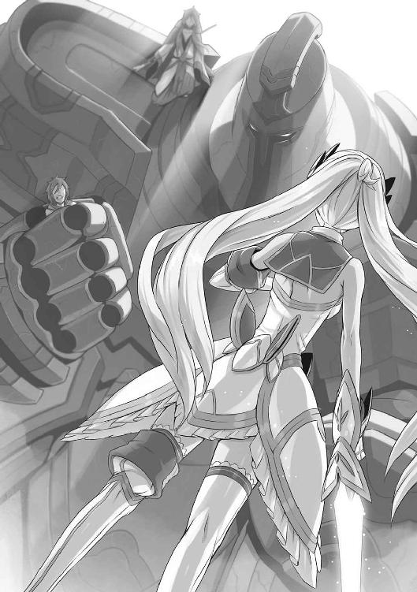
「最後の最後まで......なんて卑劣な野郎だ」
「おまえにいわれたくない」
とはごもっともな弁だが、なにせこのゲルウィン、相手が味方だろうが敵だろうが、目を逸らしながらぼそぼそしゃべるものだから迫力がない。
「と、塔のなかでの出来事はすべて把握している。ゴーレムや骸骨兵たちの目はわたしの目であるからだ。まさかフィーネがこんな手段でのぼってくるとは思いもしなかったが」
「ごめんなさい。わたしは反対したのだけれど」
「こら、土壇場で裏切るな」
ダークは空中で抗議の声をあげたが、フィーネはしかしすでに剣を抜いている。刀身があるべきはずの部分には、青白い光が立ちのぼりつつあった。
「ゲルウィン、ダークをお放しなさい。わたしたちは、なにもあなたと敵対しようというわけではありません」
「ど、どのような用件であれ、同じこと。前にそういわなかったかね。そ、そして、聞き入れられない場合はこちらも本気を出すと」
「いましもカーラーンの魔の手がのびようとしているのです。谷の人々の命運はいまや風前の灯火です。悔しいけれど、わたしたちでは力不足。どうしてもあなたのお力が必要なのです」
フィーネは眉根を寄せて、風に負けじと大声で訴えかけた。
「谷に戻っていただくわけにはいきませんか」
フィーネのすがりつくようなその表情、声に、男ならば心を大きく揺り動かされずにはいられまい。が、
「その理由がない」
ゲルウィンは伏し目がちに、ぼそぼそとした声でいった。
「理由がない？」
対するフィーネの声もまた、地に落ちそうなくらいはかなげだった。
「谷の人々を守ることも、カーラーンの侵略の手を止めるということも、もはやあなたが戦う理由になりませんか」
「──」
ゲルウィンは答えなかった。
強い風が吹いている。フィーネの髪がばさりと跳ねあがり、その拍子に束ねていた髪がほどけて、少女の顔を覆いつくした。
数秒。
気まぐれな風がやんで、ふたたびフィーネの表情が露わになったとき、少女はまっすぐにゲルウィンを見あげたままだった。剣を手にした腕をだらりとさげて、
「わかりました」
と口にした。
「これ以上は互いにとって時間の無駄のようです。まあ、カーラーンの一部隊を殲滅できただけでよしとしましょう、邪魔をしました。ダークを放してください」
淡々としたものいいに見えるが、このとき十六歳の少女の胸には、おそらく吹き荒れる風にも負けず、向き先や強さを変えながら様々な感情がよぎっていただろう。
父のつくった聖剣団。
フィーネはそこに強い憧憬を抱いている。信仰に近いとすらいっていいかもしれない。どのような困難にも屈せず、どのような強敵にも背を向けず、そこには無類の強さと、絶対の絆があるのだと、そう信じていたはずだった。
ゴーレムの腕が音を立てて床におろされようとした。
フィーネが表情を殺しながら階段のほうへ向きなおろうとしたとき、
「そんなに怖いか？」
ダークの声がして、ゴーレムの腕がぴたりと止まった。
「ひとりぼっちでいることが、そんなに怖いのか？」
「なに？」
ゲルウィンが、彼にしては珍しく正面からダークのほうを見た。ゴーレムの指につかまれて身動きできぬ哀れな少年は、しかし冷笑を浮かべている。
「み、妙なことを」ゲルウィンもぎこちないが、同じく冷たい笑みを返した。「わたしはひとりでいたいからこそこの場にいつづけることを選んだ。ひとりが怖いなどということは、あり得ない」
足を止めたフィーネにももっともな言い分に聞こえた。が、ダークはつづけて、
「周りに誰もいないなら、そりゃ不安も恐れもないだろうさ。おれがいいたいのは、あんたは集団のなかでひとりになることを怖がっている、ってそういう意味さ」
「黙れ。し、初級魔道士の戯言につきあっている暇などない──」
「グラジスは、あんたに約束した」
敬愛する団長の名前を出されて、思わずゲルウィンが押し黙った。ダークは言葉をなおもつづけて、
「『決して、ひとりにさせない』って。おれはその話を聞いたとき妙なものだと思ったが、なんのことはない、グラジスにはわかってたんだな。あんたが本心からひとりでいたいわけじゃないってことが。本当は外の世界に飛び出したくてうずうずしているんだってことが。だからグラジスは約束してくれたんだ」
「き、貴様」
「おれにも人見知りの友だちがいたよ。そいつがいうんだよ、他人といることそのものが嫌いなんじゃない、他人といっしょにいるときにどうしようもなく訪れる沈黙が怖いんだ、痛いんだ、つらいんだってさ。その沈黙を、居心地の悪さを、全部自分のせいにしちまうから、ひとりでいるときよりよっぽど自分の孤独を痛感させられるんだ、ってさ」
誰のことを口にしているのか、心なしか、ダークの弁舌にはいつも以上の熱がこもっている。
「ゲルウィン！」
とそのときフィーネが叫んだのは、ダークの顔が苦悶の色に染まり、離れている彼女の耳にすらぎちぎちというゴーレムの指に力が入る音が聞こえてきたからだ。
「だ、黙れといったぞ、小僧め。知ったようなことをこれ以上いうなら、このまま──」
「そうやって、近づいてくるものすべて壊すのか？」
ダークは声を絞り出していた。脂汗の浮いた顔はあきらかに苦痛を訴えているのに、口が減らない。
「だから、いつまで経ってもひとりなんだよ。自分で自分を、自分を取り巻く世界を決めつけちまってるからさ」
なぜ、どうして、なんのために。
そんな疑問がひときわ強く渦巻いていたのは、ほかならぬダーク自身の心のうちだったかもしれない。
ゴーレムの指にあとわずかでも力が加われば呼吸困難になるどころか全身の骨という骨が砕け、内臓が口から飛び出しそうだというのに、その代わりとばかりにべらべらと口を衝いて出てくる言葉の群れはなんだというのか。
が、もうこうなったらダーク自身でも止められない。止めるつもりもない。
「なあ、ゲルウィン。なあ、〈魔人形遣い〉。ゴーレムやガーゴイルなんて、自我をわけ与えた、いわば自分の分身だ。そんなものに取り巻かれながら自分の城を築いて悦に入っているあんたは、──」
「............」
「ずいぶん、滑稽じゃねえかよ」
ゲルウィンの目がかっと見開かれた。
危うし、と見てフィーネが二人のもとへ駆け寄ろうとする。腰の剣に手をかけた。さすがにゲルウィンに剣を向けることはできず、せめてゴーレムの指を切り離そうとする意志のあらわれだったが、
「来るんじゃねえ、フィーネ！」
ダークの叫びに、啞然として足を止めた。このときはっとしたようにゲルウィンもわれに返っている。
「おれがこの馬鹿としゃべっているんだ。邪魔をするな」
「き、き、貴様あ」
「あんたの性格も長所も短所も知らないけど、おれはカーラーンの兵だったから、あんたの恐ろしさはよくわかっている。カーラーンを恐れさせたその力がある限り、おれもフィーネも、何度だってここに足を運んでくるし、それにもしあんたが仲間に加わってくれれば、その力をあてにする場面がこれから何度だって訪れる。......なあこれって、ようゲルウィン、おっそろしいほど、単純な話じゃないかよ」
ゲルウィンは口をぱくぱくと喘がせる。ダークは、いまにも肺のなかの空気がすべて洩れ出てしまうような恐怖と戦いつつも、
「あんたの生まれ持った才能、努力で開花させた実力も、全部ひっくるめてゲルウィンだろ？ おれたちはその力ある限り、つまるところゲルウィンという男がいる限り、絶対に──あんたが泣こうがわめこうが、『絶対に』あんたをひとりにさせない、ってそういっているんだ」
ゲルウィンはこの瞬間、ダークの笑みを真正面から見つめていた。
真っ赤に染まった空を背に、笑いかけてくるひとりの男。全身傷つきながらも、そんなことは微塵も感じさせない、空よりも大きくて柔らかい笑みの持ち主を、ゲルウィンはたったひとりだけ知っている。
思わず目に涙が浮いた。
それを見守るフィーネの目にも、巨人の手の内にある少年の姿が、別の何者かの姿に重なって見えていた。
そのため、気づくのに遅れた。
「ゲルウィン、後ろ！」
魔道士の背後に、あのカーラーン部隊指揮官がぬっとばかりに忍び寄っていたのである。いつの間にやら意識を取り戻していて、気配を殺しながらゴーレムの身体を這いのぼってきたらしい。
さすがの〈魔人形遣い〉もあわてて振り向いたが、そのときには剣が脇腹を擦過している。
体勢を崩したゲルウィンはゴーレムの肩から転げ落ちた。ついでにゴーレムに宿していた〈手〉も消えたか、巨人像はその偽りの命を失ったかのように、がくりと膝を折るような姿勢になって、ダークも拳もろとも床に落ちた。
「うあっ」
衝撃はあったが、皮肉なことにゴーレムの指が守ってくれる格好となって、ひとまず大怪我は免れた。が、五指すべてががっしりとダークの身体をつかんでいる状況に変わりはない。
一方のカーラーン軍指揮官も、ゴーレムの膝が落ちたことでゲルウィンとともに転げ落ちていたが、こちらは両足から着地している。
その地点からさほど遠くない距離にゲルウィンが倒れていた。血が流れている。脇腹ばかりか、額が割れて頭からも出血していた。意識が朦朧としているのか、カーラーン国の兵たちを脅かしつづけた稀代の魔道士は、低い呻き声をあげつつも動こうとしない。
指揮官はにたりと笑みを浮かべながら、剣を手に近づいた。
「待ちなさい！」
フィーネが駆け込もうとする。
一対一ならばそうそう引けを取る彼女ではない。
いまのいままで機会をうかがっては腰に戻していた聖剣ゼスが、いよいよ唸りをあげて抜き放たれようとした──。
が、駆けていく彼女と指揮官とのあいだへ、さらに疾駆して横からわけ入る影があった。
金属質の音を立ててフィーネの剣が弾かれる。あの新米兵士イアンだ。彼も意識を取り戻して、指揮官に加勢しようと立ちあがったのだ。
「邪魔です」
フィーネは切れあがった目に苛立ちを覗かせつつ、剣で一撃した。
それで昏倒するはずのイアンだったが、予想した勢いの半分も出ないまま、ふたたび剣が弾かれた。
（馬鹿な）
一瞬啞然となったフィーネは、しかし次の瞬間には脳裏を真っ赤な血液で満たすと、矢継ぎ早に剣を繰りだした。が、そのことごとくを叩き落とされて、あまつさえ、連撃の合間にイアンが撃ち返してきさえする。
フィーネにはまだ経験のないことだったが、稀に、戦場でもこのようなことが起こる。
殺しあいを見るのすら恐れていたはずの新兵が、はじめて戦場に立った際、ただもう死にたくない一心でひたすら剣を振るって、槍を突くうちに、幸運に恵まれてか、ひとり、二人の敵兵を屠るとする。
すると恐怖はそっくりそのまま身体にみなぎる意気へとすり替わって、自分はどのような相手にも引けを取らない、そのように選ばれた戦士なのではないかと誤解する。たいていの場合、その誤解は当人を死に至らしめるだけなのだが、ごくごく稀に、その誤解が真実へと化ける一瞬がある。
その意気が敵を丸吞みして、圧倒的に実力差のある相手とさえ互角以上に撃ちあうのだ。
それに加えて、フィーネは焦りに支配されている。ゲルウィンとダークという仲間が両名とも命の危機に立たされているから無理もない。また、カーラーン部隊の進撃を一部始終見守っていたフィーネは、自分でも意識していないうちにこの敵兵にわずかばかり感情移入していた節がある。知らず知らず、剣に力がこもらない。
いつもの半分ほども力が出ないフィーネと、通常の三倍、四倍もの力を発揮するイアンとでは剣が拮抗するも道理。
「隊長っ」何度目かにフィーネの剣を退けて、イアンが叫んだ。「いまのうちに、魔王ゲルウィンを！」
「おうさ」
指揮官が応じた。両手にした剣を振りあげる。ゲルウィンはやはり動かない。
（くそっ）
一方のダークは、なんとかゴーレムの指から逃れようと身をよじらせるのだが、余分な隙間など少しもないという風に、まったく身動きが取れない。指の開閉さえままならないほどで、むしろ前より身体の拘束が強くなった気さえする。
ただでさえ狭くなっていた呼吸の通り道はさらに圧迫され、一瞬、ダークの気が遠くなった。
（あっ）
とその瞬間、周りになにも見えなくなった。
ついには意識を失ったのか、と思いきや、ダークは宙を漂う自分を意識していた。
〈手〉だ。
本来の心から切り離された、魔法専用の意識がいつしか練りあげられ、肉体の枷を離れて宙に浮いていたのだ。
だが、ダークは今回ゴルボ三人衆をつれてこなかった。隠密行動には向かないためだったが、そのおかげで近くに宿るべき器がない。またダークは精霊による魔法の発現を得意としていないため、〈手〉によって精霊と交信して地水火風の現象を引き起こすこともかなわない。
（なら）
とばかりに、いままさに剣を振りおろそうとしている指揮官へと接近した。敵の身に乗り移って操ろうという試みだった。
が、見あげるほどに高い壁の前に、ごくあっさりと弾き返された。
ゴルボたちと異なって、こちらに心を開いていない相手に〈手〉を宿らせるのは困難を極める。自我の薄い動物相手でも同じことで、人間、さらに敵対関係にある者ならばなおのこと。おそらく殺意をもった敵を操るなどといった芸当は、ゲルウィンにさえも不可能だろう。
押し戻されたダークの〈手〉は寄る辺もないままに宙を放浪した。
（くそ、くそくそっ）
ダークの焦りが強くなった。感情が昂るとダーク本来の心のほうがより自己主張を強くするため、〈手〉を維持していられなくなる。このまま無為に消失していくだけに思われた。
「ゲルウィン、起きてください。お願い！」
フィーネの叫びが耳朶を打つ。声が聞こえる、ということはつまり、ダーク本人の五感が働いているわけだから、〈手〉が薄れつつあるということのあらわれだ。
こうなればますます焦りがつのる。ダークは半ば捨て鉢気味に〈手〉をあらゆる方向へと走らせた。
と──、
このとき偶然なのかあるいは引き寄せられてか、ダークの〈手〉はとある箇所でぴたりと止まった。
格好の『器』を見出したのである。
「くたばれ、魔王！」
指揮官がゲルウィンの胸めがけて剣を突きおろした。
肉を貫き、骨を砕く感触を予感して彼の背筋が震えた。これで無数に払った犠牲も報われる、と熱い感情がこみあげてきた。
その背にどかんと来た。
背丈ほどの大きさもある鉄球に殴られるも同然の衝撃で、指揮官は前のめりに倒れた。
「あっ!?」
とイアンが声をあげたとき、夕陽が消え失せ、世界が唐突に翳った。
思わずフィーネも見あげた先で、ゴーレムの巨大な腕が振りあがっている。指揮官を跳ね飛ばしたのと同じ腕だ。陽光を赤く弾きながら、ダークを握っていないほうの手が、イアンの眼前に叩き落とされた。
地面が激震し、イアンがよろめく。なんとか倒れまいと足を踏ん張ったが、そのときにはすでにフィーネが駆け込んでいた。
こちらはよろめくことなく見事に疾走すると、今度こそ横殴りの一撃でイアンをとらえ、彼をふたたび昏倒させた。
「ゲルウィン、ダーク！」
倒した敵のことはもう構わず、両名の名を呼んでフィーネが駆けつけていく。
ゲルウィンはすでに上半身を起きあがらせていたが、ダークのほうは目を閉じ、がっくりとゴーレムの手のなかでうなだれている。フィーネは急いでゴーレムの指を切り離そうと剣を振りあげかけた。
「ま、待ちなさい、フィーネ」
ゲルウィンが声をかけた。額から滴る血を拭いながらもうつむき加減のままなのは、さすがにばつが悪いのか、それともこれも単に人見知りゆえか。
ゲルウィンがいったん目を閉じ、そして見開くと、ゴーレムの五指がゆっくりと音を立てて開いた。解放されたダークの身体が前方によろめくのを、フィーネが抱き止める。
ダークの目は閉じられたきりだ。顔色も紙のように白く、細い呼吸さえしていなければ、命が絶たれたも同然の姿だった。
「いけない、すぐに治療を受けさせねば。ゲルウィン、入り口に転移できるいちばん近い場所はどこです？」
「い、いや、それにはおよばない。彼はいま、意識の大半を外部に持っていかれているために気を失ったように見えるだけだ。じき、もとに戻るだろう」
「どういう意味です？」
「さ、先ほどはわたしも意識を失っていた。あのままなら、止めを刺されて、終わりだった」
「では、あのゴーレムは自発的に動くようになっていたと？」
「この城砦攻略用のゴーレムに限っていえば、ちがう。あれは、この小僧が動かしたのだ」
フィーネははっとなって、改めてダークの顔を覗き込んだ。
「ゴーレムの指を開かせるため、いまさっき『介入』してみたが、依然このなかには小僧の〈手〉が宿っている。し、しかし『空き屋』の状態だったとはいえ、まさかわたしのゴーレムへと咄嗟に〈手〉を宿して動かすとはな。火事場のなんとやらというやつか、はたまた見かけによらず高い才能が眠っているのか。だ、だがまあ、その代償で彼はいま本来の肉体を見失っているようだ」
たとえばゲルウィンの場合、複数の〈手〉を練りあげることで、あくまで術者本人の自我は保持したまま亡者やら人形やらを遠隔操作するのだが、いまのダークの場合だと、彼本人の意識がそっくりそのまま肉体を離れてしまって、ゴーレムに移っている状態なのだろう。
フィーネはそっとダークの身を床におろすと、拳を叩きつけた姿勢のまま固まっているゴーレムのほうへと視線を転じさせた。
「ダーク、聞こえますか、ダーク」
青銅製の脚をコツコツと軽く叩く。最初は反応がなかったものの、何度か繰りかえすと、母親に起こされる幼子そっくりに、ゴーレムははっと上半身をもたげるような動きをした。が、体重を支えていた腕が滑って、前のめりに倒れかかる。
フィーネはあわてて横っ飛びにその場を退いた。ゴーレムの上半身が倒れて、おびただしい砂煙を巻き起こすのを、
「あ、焦ることはない、ダークとやら。最初はみんな慣れないんだ」
とゲルウィンがいった。
「生き物の心を導くのとちがって、虚ろな器に宿るというのは、術者にとってもうひとつの肉体を得るというのに等しい。だが誰しも、自分以外の肉体などといったもの、もちろん動かしたこともなければ意識したこともないはずだから、最初のうちはなかなか思いどおりにはならないものだ」
さしもの人見知りも、自分の得意分野となるとわずかながら饒舌になるらしい。
「こちらに戻ってこれますか？」
フィーネがダークの肉体のほうを指し示していうと、ゴーレムがかすかに首を上下させた。
（やってみる）
という意思表示だろう。
フィーネとゲルウィン、並んで巨人像とダークの肉体とを見守っている。先ほどまでの戦闘空間とは一転して、風吹きすさぶ塔の最上階には、どこか穏やかな空気が流れつつあった。
しばしあって、
「う、ううん」
かすかな声とともにダーク本人の背中がぴくりと震えた。次いで、うっすらとだが両目ともに開いていく。どうやら〈手〉を本体へと引き戻すことに成功したようだ。
フィーネが安堵の表情を浮かべたが、
「さ、さて、ここからがまたひと苦労だぞ」
ゲルウィンがさも無念そうにかぶりを振った。その口もとはしかしほころんでいる。
「ひと苦労？」
「わたしにも覚えがある。といっても、も、もう幼少の時分のことだが......。まったく別のものに意識を丸ごと移したあとというのは後遺症がひどいのだ。ずっと馴染んでいたはずの自分の肉体すら、よそよそしい『器』のように感じられて、もとの感覚に戻るまで悩まされた」
「戻るまでどのくらいの期間が必要だったのですか？」
「さ、さあ。わたしの場合は、一日も経てばひとまず手足くらいは動かせるようになったが......それも、感覚や脳が柔軟な幼子だったからこそだろう。彼のようにあるていど年齢を経た上での初体験となると、想像できないな」
「ふ、ふん」ダークが、薄目でゲルウィンをにらみながら小さく息を吐いた。「こ、この魔道士、ダ、ダークさまを、そこらのケチな魔法使いと、い、いっしょにするねえ。たとえいまここにカーラーンの大軍があらわれても、あっという間に片づけてやらあ」
「頼もしい限りです」
両の掌をあわせてフィーネは喜んだ。普通なら皮肉かと思われるところだが、この少女のことだ、本気でそう信じている節がある。
と──、
「ほうほう」
階段のほうから新たな声が聞こえてきた。
「確かに頼もしい限りだ。しかし、五百の兵で向かうと聞いたときはどれほどのことができるものかと思ったが、いや、ついてきてよかった。これは存外、大物が釣れたかもしれんなあ」
フィーネがすばやく身構えたのは、その声、そして気配に、穏やかならざるものが含まれていたからだ。
果たして、そこにはカーラーンの赤黒い甲冑姿が立っていた。いや、赤いのはもともと塗装されていた色のせいばかりではない、彼自身がおびただしい出血をしていたためだ。
それは、リッグス──、あの、もう助かるまいと自ら判断して迷宮内に留まったはずのカーラーン兵士であった。
４
出血多量のためか顔はすでに青ざめ、皮膚は乾いている。すでに死相が浮いているとさえいえた。というのに、リッグスはわざわざ最上階まで足を運んできて、あまつさえ青白い顔に冷笑を浮かべている。
一瞬、フィーネは戸惑うように眉を寄せたものの、
「そのような深手を負ってまで駆けつけてくるとは豪気」剣士の顔を取り戻していい放つ。「しかし、ごらんのとおり勝負はすでにつきました。あなたもすでに戦える状態ではないようです。このまま潔く退くというのなら、ここの二人もつれて、わたしが入り口まで送り届けましょう」
逃げ道を提示しながらも剣の柄から手を放さないのは、
（それでも抗うというのなら、斬る）
という意思表示だった。が、
「ありがたい申し出だが、それにはおよばないね。お嬢さんの護衛などもってのほか。おれもひとりじゃないんでな」
リッグスはからからと笑った。フィーネがさらに不審の色を強めたのは、相手の口にした言葉の意味がわからなかったからではなく、迷宮内で見かけた、あの無口でおとなしかったリッグスとはなにやら様子が変わっているように見えたからだ。とはいえ、
「そうですか、ならば」
あえて提示してみせた逃げ道を拒否するというなら、フィーネの進むべき道もただひとつ。
聖剣ゼスを改めて身体の前方に構えた。
リッグスは動かない。いや、さすがに負傷著しく、ここまで来たはいいもののやはり戦うにはいたらないのか。
「はっ」
フィーネがひと声あげてリッグスへ迫る。
このわずか一撃で勝負は決する──と、フィーネも、ゲルウィンも、そしていまだ身体の自由が利かないダークもまたそう思った。
が、その切っ先は急速に相手の姿を見失った。
リッグスの背後から新たな集団が進み出てきて、彼の姿をすっぽり覆い隠したのだ。
そしてその集団から繰りだされた槍の列が、フィーネの鼻先を掠めた。前のめりになっていた体勢をすばやく引いて、フィーネは剣を横薙ぎに振るった。
槍の穂先がまとめて斬り飛ばされていくのも見届けず、床を反対方向へと蹴って、いったん相手集団から距離を取る。
「き、貴様」
どこか焦ったような声を発したのは、フィーネでも、リッグスでもない。
ゲルウィンだ。
彼の面に浮かんだ驚きの表情を、フィーネ・エストールも共有していた。
なにしろ、いま彼女の突進を阻んだのは──すなわちリッグスを守るために前へとあらわれた集団は──骸骨剣士やゾンビの群れであったからだ。
そう、このゲルウィンが住処とする遺跡のなかで散々目にし、飽きるほど剣を交えてきた怪物ども。〈魔人形遣い〉ゲルウィン直属の兵団であり、ゲルウィンの命令によってのみ動くはずの彼らが、なぜか敵であるカーラーンの軍人を守るため、フィーネへ槍を向けてきたのだった。
「貴様」ともう一度ゲルウィンが声を発した。「塔のなかでは、そんな素振りなどまるで見せなかったが......、その正体は魔道士だったということか」
「なに、見る目がなかったからといって自分を責める必要はない。そこで眠ってらっしゃる指揮官どのとておれが魔道士などとは知らなかった。いや、それをいうなら、このおれ自身とて、つい一ヶ月前まで、これほどの才能が眠っているとは知らなかったのだ」リッグスの声は、からからと声も立てずに笑う亡者軍団の背後から聞こえてきた。「このかわいいかわいい亡者の軍団は、おまえの〈手〉が離れている隙にわが配下に組み込んでやった。ここでなにがあったかは知らないが、ゲルウィン、フォーセルン魔法学院にさえ『百年にひとり』と才を認められたおまえにしてはいささか油断したな？」
「ゲルウィン、さがって」
怒りに駆られてか、ゲルウィンが痛む脇腹を押さえながらも前へ出ようとしたので、フィーネが鋭く声をあげて彼の前へと立ちはだかった。
すでに亡者軍団は前進を開始している。
先頭の骸骨剣士が斬りかかってくるのを、フィーネは側面へまわってやり過ごしつつ頭部へ突きを見舞う。二体目、三体目へと、停滞もなく斬りかかっては成果を挙げるフィーネの動きは、まるであらかじめ敵と打ちあわせしたとおりにステップを踏んで、巧みに舞い踊るダンサーのようだ。
が、このリッグスという魔道士、どれほどの遣い手であるのか、亡者たちはひっきりなしに押し寄せてくる。
その噴出してくる勢いを根もとで封じ込めようと、フィーネは懸命に剣を振るったが、しょせんは多勢に無勢。十体、二十体と敵を屠っても、どうしても剣の届かぬ相手が出てくる。相手がするりとフィーネの脇を通り過ぎようとすれば、その都度フィーネは後退してこの敵の対処にまわらざるを得なくなる。
なにしろ肉弾戦が可能であるのはフィーネ・エストールひとりきりだ。敵に抜かれれば、いまだ朦朧としているらしいダークや、傷ついたゲルウィンの命が危うくなる。じりじりとフィーネは後退を余儀なくされつづけた。
（うわわっ、フィーネ、なんとかしろお）
近づいてくる亡者軍団を目にして、ダークは泡を喰って足をばたばた動かしたが、まだ生身の感覚を取り戻せておらず、声すらまともに出ていない。
と、
「ま、〈魔人形遣い〉と呼ばれたわたしを、甘く見るな」
さすがに誇りを傷つけられてか、ゲルウィンが顔をしかめつつも両手をかざした。
途端、フィーネに左右から挑みかかろうとしていた亡者数体の動きがぴたりと止まる。じきじきに〈手〉をのばしてその支配権を取り戻した形だ。
「ほほう、さすが」
リッグスの声が不気味に地を低く這った。
「ではここは、魔力比べと洒落込もうか」
フィーネと亡者軍団が剣戟の音をひびかせ、血肉を散らして戦うその裏側で、ゲルウィンとリッグス、双方の魔道士による戦いも開始された。
こちらには相打つ鋼のひびきも、巻き起こる剣風も、飛び散る血のりの色もない。
しかし当然、命懸けの死闘。
〈手〉は精神力の象徴ともいえる。その〈手〉が無数に生み出されては空を飛び交って、意思なき兵士たちを自軍の支配下におこうとする。一度奪ったかに見えた支配権もふたたび追い落とされ、その邪魔をされぬようにと、敵の次なる〈手〉が空中にあるうちにおのが〈手〉で打ち払う。無限につづく根競べのようなものだった。
一方、ダークは地面に這いつくばったままだ。いったん肉体を移し変えたことで生じる違和感は生半なことでは消えようがない。
（ち、ちくしょう。これじゃ、『這い這い』できるまでどれだけかかるかわからねえぞ）
ダークが赤子同然の苦闘をしているその傍らで、フィーネと亡者軍団、そしてゲルウィンとリッグスの戦いは、どちらも終焉の気配を見せずにつづいている。
迷宮の通路のような狭い場所でないため、さしものフィーネも多勢相手の戦闘に難儀しているのに加えて、魔法による暗闘も思いのほか双方の力が拮抗しているために長引いていた。
ゲルウィンの負傷が主な原因だ。額に脇腹を傷つけられ、いまなお出血がつづいているため、ともすれば意識が朦朧としがちになる。
が、それをいうならばリッグスも同様、というかむしろこちらのほうが痛手はひどい。意識が霞むどころか、歯を喰いしばって〈手〉を生み出すそのさなかにも、ばたりと倒れ伏して息を引き取ってもおかしくなかった。
それがやはり勝敗をわけたか、さすがに戦いがはじまって数分も経てば、趨勢が次第次第に一方へと傾きはじめた。
亡者たちに覆い隠されていたはずのリッグスの姿がふたたび見えるようになったことからもあきらかだ。フィーネは数を減らした亡者たちを突き伏せつづけ、対するリッグスの表情には苦悶の色が濃くなる。数体の骸骨剣士などは踵を返して、フィーネに加勢する様子も見せた。
最上階にあらわれたときの余裕ぶりはどこへやら、リッグスはじりじりと追い詰められた。
剣を振るうフィーネばかりでなく、ゲルウィンも次第次第に敵との距離を詰めていく。塔のなかでダークが指摘したとおり、〈手〉の力は対象者との物理的距離にも作用するからだ。二人はついにリッグスの目前まで迫った。
「うおおお」
その瞬間、リッグスは恐怖ゆえにか、口を大きく開いてわめいた。
叫びそのものは数秒で絶えたが、リッグスの口はなおも開いた。限界を越えてさらに上下へと搔き開く。喉を反らしながらも、さらにさらに。
ぶちぶちぶちという嫌な音がした。
いまだ敵と斬り結んでいたフィーネが呆気に取られた。ダーク、ゲルウィンも同様だ。
リッグスの頰の肉が裂けている。顎の骨などはとっくに外れているだろう。それでもなお──まるで、入り口を大きくこじ開けることで喉の奥からなにか別の生き物を生み出そうとでもするかのように、リッグスの口はさらにさらにと開いていく。
ゲルウィンがはっとなった。
「さ、さがりなさい、フィーネ！」
先ほどとは逆にゲルウィンのほうが後退を命じた。
その瞬間、フィーネの視界は赤黒い色に染められた。
リッグスの口腔内から、同じ色をした気体状のなにか──霧とも風ともつかぬもの──が逬っていたのだ。
それは人間ひとりの体内から噴出したとは信じられないほどにもうもうと吹き荒れ、最上階をそのまま丸ごと包みあげた。
（うわっ）
ダークは反射的に腕で顔を隠そうとした。しかしこれも半ばほどまでしか果たせず、赤黒い色をした、奇妙に粘り気のある風が口のなかへと侵入してくる。
とともにダークは激しく咳き込んだ。ゲルウィンも咄嗟に長い袖で口を覆ったものの、同じ運命を辿っている。
フィーネの腰すら落ちていた。片膝でかろうじて踏ん張り、倒れるのばかりは避けたものの、表情には隠しきれない苦悶の色が浮かんでいる。
「ははは、これがなんだかおわかりか、聖剣団諸君」
リッグスの笑い声が、赤黒く染まった世界の奥底からひびきわたった。口はとっくに上下に裂けており、下顎などはだらんと首から垂れているというのに、不思議に声は明瞭としている。
「魔界の谷から噴きあがる瘴気そのものよ。それも、谷底に悪名高い〈背徳の殺生石〉を吞んだといわれるヴァ・ホー・ムの谷の名産だ。邪悪の化身どもにはこの上なくさわやかな風であろうが、この大地に生ける者には少し刺激が強いかな？」
けたけたけた、と奇妙な笑い声をあげる。
もはや見てわかるとおり、このリッグス、生身の人間などではない。負傷していたはずの手足は緑色に変色し、よくよく目を凝らせば、傷口の上からかすかに鱗状の皮膚が浮きあがっているのがわかる。
本人曰く、魔界の瘴気とやらを口から吹き散らして、なお無事でいることからして、すでに本人が魔物に近しい存在なのだろう。カーラーン国主は魔法の研究と称して、生きた人間を実験体に使うという。なかには魔物化させられた人間も数多いという噂だった。
「カーラーンのエルドラン王は、魔術研究のさなかに魔界の光景を幻視されたそうな。そのとき目にしたこの瘴気の色をいたくお気に召されて、ご自分が編制しなおされた軍勢の甲冑にこの色を採用されたのさ。おっと、このような薀蓄はどうでもよいか。ともあれ、これは魔法ではないからな。ゲルウィン、貴様が対魔法用に全身に彫り込んでいるだろう『呪紋』も効果がないぜ。皮膚は火をつけられたように熱く、内臓は凍らされたかのように冷たかろう。なまじの人間なら十分と保たねえさ。いままでのおまえは戦場でその姿を隠していたからな、こうして直接吹きつけることのできる機会を待っていたのよ」
赤黒い瘴気は天地を一色に染めあげている。夕暮れどきの陽光すらここには一片たりとて差し込まず、まるで世界の一部がそっくりそのまま魔界につくり替えられでもしたかのようだ。
ダークもゲルウィンも動けなくなった。ともに激しく咳をしながら身を縦に横にとねじっている。火の海に投じ入れられたばかりか、身体の内側からも刃を振るわれているのと同然の苦痛が身を苛んでいるのだ。リッグスは「十分と保たない」と口にしたが、正直なところ、この苦痛に耐えかねて、あと三分もしないうちに精神のほうが崩壊しかねない。
ひとり残ったフィーネは──、
片膝立ちの状態からすっくと起きあがっていた。見ると、兜の形状がまたしても変化している。口の部分がすっかり覆われていた。
「おう」とリッグスはこちらもある意味で変貌を遂げた顔で、血を口からあふれさせながら笑った。「その兜、妖精族の手がかかっているな。だが、それでもどこまで保つことやら」
「あなたを討ち取るまでは」
フィーネはいって、床を蹴った。
まっしぐらにリッグスめがけて疾走する。
瘴気の大もとを断とうという構えだ。
が、
「こちらの瘴気、生きた人間には苦しかろうがこれを寝床にする者どももいるんだ」
リッグスの言葉が合図となったか、赤黒い霧にいくつかの灯あかりが灯った。フィーネの足がぴたりと止まる。肌に突き刺すような冷気があった。それを、戦場で得たいくつかの経験によって、フィーネは『殺気』ととらえた。
すると、瘴気の一部がまるで生命そのものの意思を得たかのように、〈本体〉からおのが身を切り離して、フィーネの頭上から躍りかかった。反射的にフィーネは剣で払う。一撃したはずだが、それは体勢を乱さず、六つの脚で着地した。
「絶え間ない追跡の脚を持つ、われらが猟犬ゴーントよ」
リッグスがさらに笑った。
なるほど、一見犬に見えないこともない。だがその身体はこの世のどんな生物にも似ず、いま最上階を覆った霧のごとく、気体がたまたま寄り集まって生物の形を取ったようだったし、赤く火のように灯る眼光は三つ。胴に比べればいずれも長すぎるその脚は六つあった。
そのゴーントが、霧のなかから次から次にあらわれると、獣そっくりの仕草でフィーネの周囲を徘徊しはじめた。
かと思うや、前後からいっせいに襲いかかってくる。フィーネは腰をやや落としつつ、前方の猟犬を縦に裂き、右足を軸として回転しざまに後方からの一撃をかわした。
「ほう、その剣も普通じゃないな」
リッグスがそう評したのは、今度こそフィーネの一撃が猟犬をとらえたからだ。一撃されたゴーントは、まさしく霧のごとくその姿かたちを崩れさせると、風に流されて消えていった。
「この世における物理的な攻撃など、たとえ巨人族をも沈めるほどの一撃とてゴーントには通じねえ。しかしその剣、相手に応じて性質を変えられるようだな。なるほどさすがは団長どのの娘御。だがいつまで防ぎきれる？」
その言葉どおり、吐き出される獣の数はなおも増えていく一方。
このゴーント、一見、ふわふわといかにも頼りない気体状の物質に見えながらも、その爪や牙は確かな実体をそなえており、いまにもフィーネの喉笛を喰いちぎらんばかりの鋭さを秘めている。さらには、最上部を包み込んだ赤黒い瘴気は、人間には霧のようであっても、ゴーントにとっては住処とする岩山のようなものなのか、あたかもフィーネの目には見えない足場が無数に存在しているも同然だった。ゴーントたちはこの瘴気そのものを駆けあがって、時にフィーネの頭上よりはるか高い位置へと舞いあがったり、時に見えない壁を蹴った反動で予測のつかない方向から襲いかかってきたりする。
四方八方──どころの話ではない。この立体的な集団攻撃の前では、いかに訓練を積み重ねた強国の一個師団であれ、たった数匹のゴーントに全滅させられてしまうにちがいない。
しかし対するフィーネもなまじの剣士ではなかった。
絶え間なく足場を変えて、視線を全方位にくまなく配りながら、時に跳躍し、時に身を低くしつつ、躍りかかってくる猟犬たちをその手からのびる青白い光輝で打ち払いつづけた。
フィーネの剣、そしてそのすばやい足さばきは、異界の獣を相手にしたとてまったくひるむことなく、むしろ冴えわたっていたが、表情にはさすがに焦燥の色が見え隠れする。
敵は無限に湧きかえるかと思われるほどひっきりないし、妖精族の兜で身を守っているとはいえ、リッグスが指摘したとおり、いつまでこれが瘴気を遮ってくれるやらわからない。
このままでは、消耗させられ、追い詰められるのは目に見えている。なんとしてでも、身体が動けるうちに突破口を見出さねばならない。
その焦りが出たのだろう。
一歩ずつでもリッグスへ近づこうと、剣で敵を薙ぎ払いつつじりじりと進んでいたフィーネは、四方への観察がおろそかになっていた。
視界の裏でさっと蠢く影を認めたときには、遅かった。
（しまった）
兜の奥でフィーネの顔が青ざめた。敵集団と戦うその背後を、別の猟犬二体が通りすぎていった。ただしフィーネの背中から襲いかかる素振りは見せない。狙いは別のところにあった。
「見よ！」
リッグスが指し示した先に、ゲルウィン、そしてダークがいた。
いずれの首根っこも、彼の操る魔界の猟犬たちに押さえられていた。それぞれの喉近くに赤黒い牙がぬめりを帯びて輝いている。
二人を人質に取られた格好だ。さしものフィーネもぐっと唇を嚙みしめた。
「剣をおろせ、勇ましい娘御」リッグスが肩を揺らした。「〈魔人形遣い〉にグラジスの娘まで得られれば、さぞ陛下もお喜びになられるであろう。おっと、助けに向かおうとも無駄だぞ。当然あの魔犬どもにはおれの〈手〉が宿っている。おれは自分の指を一本立てるのと同じくらい気安く、そして手早く、彼らの首を搔き切ってやることができるからな」
「か、構うな」
とそのとき口を開いたのはゲルウィンだ。喉もとに牙を突きつけられながらも、
「カーラーンのいいなりになどなってはならない。ど、どのみちきみが剣を引いたとて、彼らはわれわれを利用するだけのこと。そうなれば団長をもとに戻す望みさえも失われてしまう。──大丈夫だ、わたしたちはとうに覚悟ができている」
わたしたちというからには、その台詞にはダークのぶんまで含まれていることになる。当然、
「おい、ふざけんな手前。そちらの美談にこのいたいけな少年を勝手に巻き込むんじゃねえ」
とダークは大声でわめき散らしたいところだったろうが、生憎とこの口やかましい少年は口を利けるような状態ではない。というよりも、
「おや」リッグスの声が邪悪な笑みを含んだ。「勇ましいことをいえるのはゲルウィンひとりきりか。そちらの小僧はすでに息を引き取ったようだ」
瘴気のなかにある以上、当然苦痛は絶え間ないだろうに、もはやダークはぴくりとも動こうとしなかった。青紫色をした唇からは泡を吹いて、おまけに舌がだらりと垂れている。
はっ──とフィーネの目が一瞬見開かれ、それから糸のように細くなった。
「これではもはや人質の用も為さんな。まあいい、ゲルウィンひとりがこちらの手の内にあれば。さあ、決断はそなたに委ねられたぞ、聖剣の姫よ。おれは寛大な魔道士だ。ゆっくりと猶予をやろう。おっと、おれに時間があってもそちらにはなかったかな。あと五分も放っておけば、ゲルウィンも、あの小僧と同じ運命にいたるのだぜ」
リッグスはおどけた態度で首を打ち振った。その拍子に垂れさがった下顎が揺れ、めくれあがった上唇が震えるものだから、実に凄まじい形相である。
対するフィーネは構えを解かない。周囲にはゴーントが数体、いつ獲物の喉笛に跳びかかったものかというふうに円を描いてうろついていた。
逡巡が、少女の顔をかすめること数度。
不意に、胸の位置にまで掲げられていた剣の切っ先が落ちた。フィーネ・エストールはうつむいて目を閉じている。
「い、いけない、フィーネ」
弱々しくゲルウィンが叫ぶのと正反対に、リッグスは裂けた口に笑みを浮かばせた。
「よかろう、賢明な判断だ。さあ、猟犬どもよ。そこの娘をわが前へとつれてこい」
瘴気から生じた赤黒い獣が、前後からフィーネへと躍りかかった。あとは有無もなく引き倒されて、聖剣団団長グラジスの娘とて敵の手に落ちるばかりかと思われた。
と──、
「おまえは二つの過ちを犯した」
フィーネの小柄な身体が赤黒い色に染められるその寸前、青白い光が縦と横、それぞれ一回ずつ瞬いた。
「おおっ？」
思わずリッグスが声をあげた。不定形な姿をした猟犬は、フィーネの身体に触れるその直前にどちらも両断されて、霧消していた。
「あくまで歯向かおうってのかい。それともこちらが本気でないと思っているのならば、その剣の腕にも似ず、実に甘い考えだぜ。しょせん小娘といったところか。ならばよい、まずはゲルウィンの腕を喰いちぎらせてやる。次は脚、それから......」
「いったはず」
フィーネは跳びかかってきたゴーントを斬り伏せたばかりか、さらに前へと足を進め、円陣をつくっていた猟犬たちを次から次へと聖剣の光で消し去っていく。
「おまえは過ちを犯したと」
「追い詰められたあまりに気でもちがったか、娘。おれがいったいどのような過ちを──」
「まず、ひとつ。ゲルウィンに対しておまえ自身が口にした言葉です。『ここでなにがあったかは知らないが』と馬鹿正直に打ち明けたこと。そしてもうひとつ」
聖剣ゼスのひと振りが、正面から跳びかかったゴーントの身体を霧消させる。
「わざわざ正体を隠してまでこのような手法を用いたのは、おそらくゲルウィンと、そしてこのわたしフィーネを警戒した上でのことでしょう。決して油断せず、敵を見誤るまいと心がけたのは見事。しかし、おまえはひとつ見落としました。聖剣団にはわれらのみならず、魔道士ダークがいるということを」
「ダーク？」リッグスはせせら笑った。「あの、とっくにくたばった小僧のことか。よいわ、貴様に現実を見せてやる。ゴーントども、その小僧の死体を喰らえ！」
そのような言葉を耳にしながらも、にっと微笑んだフィーネの、なんと恐ろしく、なんと気高いことか。
彼女だけはわかっていた。
泡を吹いて倒れていたダークの姿をひと目見たその瞬間に。
前進をやめないフィーネのその背後で、命令を受けた異界の獣たちが、声なき咆哮をあげながらダークに群がりかかった。
少年の悪運もここにて尽きるかと思われたその瞬間、ダーク、そしてゲルウィンの、もはや自分の意思ではどうにも動きようがなかったはずのその肉体が、空へと浮いた。
「なにっ？」
リッグスが目を剝いたのも無理はないが、なにもこの両者、魔法で空へと飛んだのではない。この塔の最上部には、いままでものもいわず、彫像のように立ち尽くしていた巨影がある。それも道理、なにしろ本当に青銅製の彫像であったからだが、それがこの一瞬、突如生命を得たかのように立ちあがると、ダークとゲルウィン、双方の肉体をその太い腕でさらって、肩の上まで持ちあげていたのである。
跳びかかったゴーントたちはむなしく青銅の皮膚にその牙を打ち立てた。
リッグスはようやくのことで理解した。
ダークというあの魔法使いが、瘴気に身を苛まれながらも〈手〉を練りあげていたこと。その〈手〉をゴーレムに潜り込ませていたこと。
フィーネが指摘したとおり、リッグスはこの最上階でおこなわれた戦いを目撃していない。そのため、ダークがいったんゴーレムを操った事実を知らなかった。さすがにゲルウィンは侮れぬと見て、瘴気で追い込んだあとも彼ひとりの動向に気を配っていたリッグスだから、その虚を衝かれた格好だった。
そして、
「天誅」
気づいたときにはもはや遅かった。
フィーネは猟犬たちを斬りたおしざま、すでに目前まで迫っていた。リッグスはその腕を振りかざした。鋭利な刃物に切り裂かれでもしたかのように肘から先が八方向に裂けた。肉色の花弁を広げたような格好だったが、それらの皮膚が見る間にのびて、触手状となってフィーネへ襲いかかった。
「ぎやああああ」
空中でそのことごとくを斬り払われた。悲鳴をあげてのけぞったリッグスの首が、次の瞬間には胴体から切り離されていた。
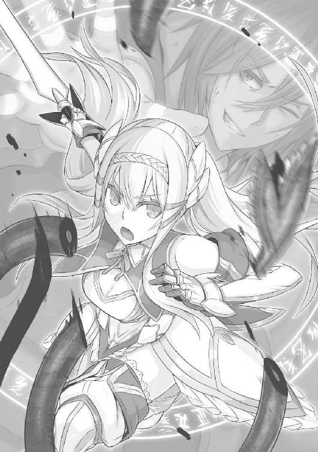
宙を舞ったその首は、やがてゲルウィンと正面から視線をあわせた。
異界の生命と化したものは、異界の法則に従うのが鉄則であるのか、痛みと恐怖の表情を凝固させたその生首は、いたる箇所から黒煙を噴いて、やがてゴーントや赤黒い霧と同様、風にさらわれるがままに消えていった。
ゲルウィンの身体を内外から蝕んでいた苦痛も噓のように引いていく。彼は一見、絶世の美女と見まがうほどの顔に汗の珠を浮かせつつ、小さく嘆息した。
と、
「ば、馬鹿野郎」
ダークの弱々しげな声が聞こえてくる。本来の肉体に戻ったようだ。床におろされた彼の様子を、屈んで見守っていたフィーネへ恨みがましい視線を当てつつ、
「ずいぶんな賭けに出やがって。こっちはゴーレムの腕一本、自由になるかわからねえんだ。まさか本気で見捨てるつもりじゃなかったろうな？」
「さあ」フィーネは小首を傾げた。「でも、過程はどうあれ、結果として勝つことはわかっていました。わたしたち聖剣団は──『負けない』。それが優先すべきなによりのこと。そうでしょう？」
十六歳の少女はにっこりと微笑んでいた。
ゲルウィンはそれをはじめて見る顔だと思った。
終章
「──で」
とヤミーが長い沈黙を破って口を開いた。
「彼が、聖剣団に新しく加わったメンバーですか？」
「そう」自信満々に胸を張ったのはダーク。「ちょっと無口だけど、根はいい奴だ。仲良くしてやってくれ」
「いい奴ねえ」
ヤミーが呆気に取られているのも無理はない。
聖剣団の宿舎、その前庭において、陽の光を遮る勢いで立ちはだかるのは、巨大な甲冑武者。いや武者甲冑、と言い換えるべきか。
「名づけて、ラグナの谷防衛用、人型究極兵器ゴンゴルくんだ」
ダークは振り仰いで、この威容を惚れ惚れと見あげる。
ゲルウィンから貰い受けた城砦攻略用のゴーレムで、塔の最上部でダークが〈手〉を二度にわたって宿したのと同じものである。『これ』をダークは聖剣団の新メンバーだと言い張った。二度にわたるゲルウィンの塔への挑戦、目に見える戦果のひとつが『これ』である。
もちろん、当初の目的は〈魔人形遣い〉ゲルウィン本人の再スカウトにあった。五百からなるカーラーンの先遣部隊をほぼ全滅に追いやったことなどはその過程で起きた、いわばおまけのような出来事でしかない。
が、ようやくのことでゲルウィン本人と直接顔をあわせ、声を交わすことに成功したものの、極度の人見知りなど一朝一夕でどうにかなるものではないのも事実。
「ラグナ郷に常駐するのは難しいが、でき得る限り外に出る努力はするし、協力もする」
と請けあってはくれたが、彼にも物事の優先順位はあって、現在は、
「カーラーンがよみがえらせた禁断の秘術についての研究に忙しい」
らしい。
ダークには知らされなかったことだが、つまりこれは暗に、
（団長の魂を戻す方法を研究している）
ということだ。無論、グラジス団長さえもとに戻れば聖剣団はかつての仲間と力を取り戻すはずだから、フィーネはこの優先順位に関しては口を挟まなかった。
そこで、ひとまずは谷の防衛用に、ゲルウィン愛用のゴーレムを一体貰い受けることとなったのである。
欲をいえばもっと数が欲しかったところだが、
「きみの技量ではいきなり複数操るのは無理だろう。まずはこの一体で慣れておけばいい」
とのことであった。
誇りをいたく傷つけられたかたちのダークであったが、確かにこのゴーレムに〈手〉を宿した経験上、まともに歩かせるのも難しかった。いままで慣れ親しんできた生身の肉体とはちがう。特にこのゴーレムの場合、人の姿を模してはいても、生身とは比べようもないほど巨大であるゆえ、どうしても意識と肉体とに差異が生じるのだ。
幸いであったのは、ゲルウィンとダークとでは扱う魔法の種類が似かよっていることだろう。
たとえ術者のレベルが天と地ほどかけ離れていようが、もとより得意とする魔法が異なっているようでは、ゴーレムを与えられたところで使いようがない。
自身の意識を複数にわけて、物体や動物に宿らせる手法というのは、これでなかなか生まれついての才能を必要とする。ダークが自分に過剰なまでの自負を抱いているのはこの術が扱えるからという理由もあった。
ダークがゴンゴルをうっとりと見あげているのも、新しいおもちゃを手に入れた子供のような気分でいるのと、まるで自分のたぐいまれなる才能が具現化して目の前にあらわれたような錯覚を抱いて、得意の絶頂であるためだ。
「こら、ヤミー。もっと感動していいんだぞ。待望の新メンバーじゃないか。燃えるだろう、いや、おまえの場合は『萌える』といったほうがいいのか。新しい人物が増えれば脳内における組みあわせの幅も広がろうというもの。あれこれと新しいカップルの絵を想像しただけで涎が止まらないだろう？」
「ダークはなにかあたしのことを根本的に誤解しているようね」当然といおうか、ヤミーはにべもない。「まあ、いいわ。お布団干すのにちょうどいい高さの竿がなくて困ってたから。あ、ゴンゴルくんだったっけ、しゃがみ込んで腕ひろげといてもらえる？」
「究極兵器ゴンゴルくんを物干しに使うんじゃない！」
なんだかんだと、日々が経つにつれてラグナの谷に馴染んでいく風なダークである。
ここのところカーラーンに目立った動きもない。ヴァニスの攻撃隊につづいて、さらなる一隊を壊滅させたことで、敵も慎重にならざるを得なくなったのだろう。ドレーム率いる残り千以上の本隊も、陣を後方に引いたとのことだ。
「だが──」
と塔を離れる際、フィーネひとりにゲルウィンが忠告を与えていたのを、ダークは知らない。
「団長の魂を奪った術といい、あのリッグスという魔物化させられた兵士といい、カーラーンの国主がよみがえらせたという禁断の黒魔術は、すでに危険な領域に達していると見ていいだろう。か、かの者の目的がどこにあるかはわからないが──、これは、魔界の〈門〉を巡って巻き起こったかつての魔法大戦争が再勃発する兆しにさえ見える。そう、もう一歩のところで、現世に異界そのものが招き寄せられかねなかった、あ、あの恐るべき事態がふたたび起ころうとしているのだ。き、気をつけなさい、フィーネ。決して敵を侮らぬように」
フィーネは神妙な表情で顎を引いた。
もとより、敵の先遣部隊を退けたところではしゃぐような彼女でもない。父グラジスがふたたび帰ってくる場所を守るためにも、むしろこれからがカーラーンとの壮絶な戦いのはじまりになろうとは覚悟している。
ともあれ、ダークは吞気なものだ。
ダークとフィーネの『活躍』は谷でも評判になっていて、いまや一歩でも外へ出れば、
「おお、ダークといったかな。ゲルウィンさまを説得してくれたのはきみらしいな」
「わざと仲たがいさせるように見せて、敵を塔に引き込んだんだって？」
「きみがゲルウィンさまの一番弟子というのは本当かい」
などと人々にかこまれて、あれやこれやと質問攻めにあう。まっすぐ目的地に向かうのもしんどいほどだが、
（まあ、これも英雄の仕事のうちか）
などと慨嘆して、ダークはひとりひとりに笑みを向け、握手を求められたら気さくに応じてやるし、若い女性相手ならば求められずとも自ら手をのばす。最近彼が夜遅くまで机に向かって寝不足気味であるのは、新しい谷の防衛策を一睡もせずに考えているから──ではなくて、大量の紙を浪費してまでサインの練習をしているのだ。
まあ、つまるところ──ダークは、有頂天だ。
生まれ故郷でくすぶっていたり、夜盗まがいにまで落ちぶれたり、カーラーンで下っ端魔法使いをやらされたりしていたころが噓のようだ。いや、噓というより、いまこのときこそが本来ダークのあるべき姿であり、
（ようやくおれは見出したのだな。自分にふさわしき新天地を）
緑色の草ぐさが、谷あいを流れる風に伏しなびいている。それをゴンゴルの肩の上に乗って眺めわたしつつ、あたかもダークは何十年も放浪の旅をつづけてきたような感慨を視線に込めていた。
「見よ、ゴンゴル」
巨大ゴーレムの肩に乗って、ダークは手を振りかざす。作物の植わった畑に、果樹園が東から西へとつづき、北側には小規模ながら牧場が見られる。またこの高さからは、岩山を掘り抜いてつくられたラグナの神殿をも眺めることができた。それらを一望しながら、
「日々の労働に笑顔でいそしむ人々の姿を。皆、かわいいかわいい、わが子のようなものだ。なあゴンゴル、われわれが戦うのは、後世に名前が残るほどの名誉のためではない、両手で抱えきれぬほどの黄金、諸国の王が何度生まれ変わっても味わいつくせぬ海や山の珍味のためなどではない。人々のこの笑顔と、つつましい幸せのためにこそ、われわれは命を懸けて戦うのだ、いや戦えるのだ。そうは思わないか、ゴンゴル──」
自分の台詞にじいんと痺れてしまう。
幸せな男であった。
翌日。
「敵襲」
の声とともに谷の鐘楼が音を鳴りひびかせた。
すでにダークはその情報を得ている。
『敵』と目される一隊は、谷の南方、天然の障壁でもある連丘の踏破に取りかかる寸前だった。
と──、その彼らをすっぽりと覆いつくすほどの影が投げかけられた。
はっとなった彼らは馬上で剣を引き抜きつつ、揃って兜を上向けた。
岸壁上にひとりの巨人が立っている。
カーラーン軍の先頭にいた若者はそれを──というより、巨大ゴーレムの肩の上に乗った魔道士ダークを──見あげると、きっとにらみつけた。
「あらわれたな、ダーク！」
「ほほう、貴様か」
隊の先頭にいるのは、イアン・ウィーバー。
が、なにやら塔で見かけたときとは様子が変わっている。頰に刀傷などつけて、目つきも以前よりだいぶ荒んでいた。
「ここで会ったが百年目だ、魔道士ダーク。降りて、おれと一対一で勝負しろっ」
ひと声吠えて、馬上で剣を高々と掲げた。
「ふん、本来ならあの塔で命を落としていたところを、このおれの寛容な処置によって見逃してやった小童風情が、大層な口を利くじゃあないか」
ダークはせせら笑った。
ちなみに、「見逃してやった」とはいうが、あのときダークは意識の大半をゴーレムに持っていかれていたために、イアンたちのことはすっかり忘れ果てていた、というのが本当のところだ。あとで、ゲルウィンがゴーレムか骸骨剣士を使って外に運び出していたのだろう。
「なぜ、なにゆえ、なんの理由があって、このおれが貴様などと勝負せねばならん？」
「理由。理由だと？ いまさらそれをおれの口からいわせるのか。貴様のせいで......貴様の邪悪で、狡猾で、卑劣極まりない策によって、おれの隊はもはや壊滅した。指揮官どのにいたっては......」
「いたっては？」
「あの方は、気性まっすぐな武人であられた。今度の失敗に関してひとつも言い訳なさることなく、ありのままを陛下にご報告された。陛下は大層ご立腹されて......『そのような馬鹿げた策にはまるとは、男の風上にもおけぬ奴。男でないというなら、貴様の進むべき道はひとつだけだろう』と仰せられ......」
「仰せられ？」
「魔法によって、心だけ女性に変えられてしまったのだ！」イアンは涙ぐみながらも大声をあげた。「貴様に、わかるか。様子をうかがおうとご自宅に向かったところ、『今日はお肌の調子が悪いから誰にも会いたくないの』といわれたおれの気持ちが。店頭で女性ものの服をご婦人方と争っている指揮官どののお姿をたまたま目撃したときのおれの気持ちが。『今度こそ聖剣団を討ち取りましょう』と熱く訴えるおれの言葉さえも、『復讐なんてナンセンスだわ』と斬って捨てられたときの気持ちが。なんだ、ナンセンスって。なんで男のたぎるような熱い気持ちを、婦女子は自分の価値観だけで斬って捨てることができるというのか！」
「それは、まあ、ご愁傷さま」
「黙れ。それもこれも貴様のせいだっ」
イアンは涙を頰に伝わせながらも剣を振りまわした。背後にいる馬上の武人たちも同じく怒りをにじませ、あるいは沈痛な面持ちをしている。となると、彼らはゲルウィンの塔で壊滅した隊の生き残りなのだろう。
「どうやら独断で隊をまとめて向かってきたようだな。はん、指揮官がいない以上報奨も出ないってのに律儀なことだよ。まあよい、その意気やよし。イアン、おれと一騎打ちをする栄誉を貴様にくれてやろう」
「抜かしたな。では参るぞっ」
雄たけびをあげてイアンは突進した。対するダークはゴーレムの上で動かない。胡坐などをかいて余裕しゃくしゃくの態度だ。
ゴーレムまであと数歩の距離、というところで、すとんとイアンの姿が消えた。なんのことはない、ゲルウィンの塔でダーク自身があわや犠牲になりかけた罠──落とし穴をあらかじめ掘っておいたのだ。
「あっ、い、イアン！」
「おのれ、卑怯者め」
イアンの後ろにいた武人たちも口々にわめいて突撃した。
彼らは土煙をたなびかせつつ、しかし仲良くイアンと同じ運命を辿った。当然、罠はひとつきりとは限らない。全員の姿が消え失せると、あははははっ、とダークは遠慮のない高笑いをあげる。
「馬っ鹿でえ。軍勢を相手にするってのになんの準備もしてない奴がいるものかよ。ダンジョンひとつ突破したくらいで英雄伝説の勇者を気取りやがって、まだまだ気が早いってんだよ、イアン。おれのような最強魔道士級を相手にするには、まだまだ研鑽が必要──」
「貴様の魂胆、よくわかった」
「んなっ？」
ダークが目を剝いたのは、相当深く掘ったはずの落とし穴から、イアンがあまりに早く這い出てきたからだ。この罠、入り口こそいたる箇所に穴を空けていたが、根っこの部分は同じ──もともと丘陵地にあった裂け目を利用したもの──である。なので、穴の底で隊と合流したイアンは、そこで仲間たちの肩車を利用して単身穴から抜け出てきたのだ。
ダークも、こういうときの詰めはまだまだ甘い。
罠が破られたとなると途端に動揺してしまうのも、精神面が未熟な証であった。
「ば、馬鹿め。たったひとりで、この究極兵器ゴンゴルくんと渡りあうつもりか？ いまのうちに尻尾を巻いて逃げ帰ったほうがいいんじゃないの？」
などと脅しをかけているが、実のところダークはまだまだゴンゴルを自在に操る自信がない。この岸壁まで運んでくるのだって相当苦労させられたし、またそのため彼はすでに疲弊している。
イアンは鼻で笑い、
「指揮官どのの味わった汚辱を晴らすため、ここでおめおめ逃げ帰るわけにいくものか。ダーク、覚悟せいっ」
根は育ちのよい武人らしく、張りあげた声にもなんというのか立派なひびきがある。どう考えても物語の主役を張るにふさわしい正義の立場であり、となると、
「ば、馬鹿馬鹿馬鹿。考えなおす時間を与えようってのに、どうしてあたら若い命を散らせようとするかなあ。あれだよ、死んだら汚辱を晴らすどころじゃないよ？ おいしいものも食べられないし、きれいなおねえちゃんと楽しく時間を過ごすこともできないよ？」
思いきりゴーレムの上で震えあがっているダークこそ、正義の味方にけちょんけちょんにされるのがお似合いの小悪党。
「もはや問答無用。いくぞっ」
地を蹴って、イアンはゴーレムまでの距離を縮めにかかった。
このわずかな時間で、どれほどの修練があったか。あるいはダークの言葉を借りるならどれほどの研鑽を経てきたのか。その鋭い踏み込みは百戦錬磨の武人そのものだ。
「ちくしょうっ、人が優しくしてやってりゃ」
ダークもいよいよ激怒した。
ゴンゴルの、ダークが乗っていないほうの肩が後方に振りかぶられたかと思うと、大きく弧を描いて腕が振るわれる。
馬が引く戦車数台をまとめて叩きつぶせそうな拳が、勢いよく地面に打ちつけられた。
もうもうと砂煙があがる。
「惜しい奴を亡くした」
ダークはため息とともに目を閉じた。内心、相当に安堵している。先ほど述べたようにまだ自信がなかったからだが、幸い、いまの一撃はかろうじて成功した。
「おまえとなら、いつか美味い酒が飲めるかと思ったものを。いいか、研鑽をこなすのになにより大事なのは、身分相応という言葉をわきまえることだ。自分がなんとかギリギリで勝てそうな相手と戦い、勝利を重ねることによって人は強くなる。一足飛びに強くなろうといきなり強敵にかかったのでは命を無駄に散らすだけのこと。その相手を見極める目がまだなかったということだな」
つくづくダークも学習をしない。
まだ相手の生死も確認していないのに勝利にひたりたがる。砂煙を割って、イアンがゴーレムの腕を伝って駆け込んできたとき、ダークは目と鼻の先まで『死』が迫りつつある現実を直視できず、むしろぽかんとなって口を開けていた。
「覚悟っ」
イアンの剣がダークの首に吸い込まれていった。
あわれ、小悪党のなりあがり英雄伝もあっさり終わりを告げるかに思われたとき、
「はあっ」
聞き覚えのある裂帛の気合いが、ダークの耳もとで炸裂した。
とともに、青白い火花が瞬いた。
イアンの剣が後方に弾かれる。若武者が驚きの表情を浮かべるより早く、ゴンゴルのダークとは反対側の肩に、すたりと降り立った影があった。
「ダーク」とその影はとがめるようにいった。「ひとりで戦おうなどと、無茶もいいところです」
「フィ、フィフィフィフィーネ・エスエスエスエストール」
「そのような名前に知りあいはおりません」
そう言い放ったのは、無論のことフィーネ・エストール。手からは、陽光に透けるほどに淡い光が剣の形になって立ちのぼっている。
「貴様かっ」
イアン・ウィーバーは剣を構えなおした。
「聖剣団の見習い風情め。どのみち貴様も討たねばならぬ相手だ。指揮官どののご自宅に、二人の首を揃って届けてやる」
「ほう」
と、少女は不意に目を細めて、ダークのほうから視線を転じさせた。
「以前にもお会いしましたね」
「お会いしたどころか」イアン・ウィーバーはせせら笑った。「もう一歩のところまで貴様を追い詰めたではないか。あのときゴーレムの邪魔がなければ、確実におれは貴様を仕留めていたぞ」
「なるほど、それで」
フィーネは淡々と口にした。一見、無表情に近い十六歳の横顔が、なぜだかそのときばかりは奇妙に艶めいてダークの目に見えた。
「自信を深めておられましたか。このフィーネと渡りあい、追い詰めたというその事実によって。──それは、いけない」
「なにがいけない」
「若武者にあやまった自信をつけさせたのは、わが不明。その道筋、ほかならぬわたしが正してさしあげねばなりません」
目を細めたままフィーネは聖剣ゼスの柄を胸の高さまで掲げた。
（あ）
とダークはその近くで息を吞む。
「小娘が、このウィーバー家末弟の剣を受けられるか！」
嘲弄されたと見たイアンは、顔を真っ赤にして躍りあがった。
相手の兜を真っ向から叩き割る──に見せかけて、まずは足を払う。フィーネが体勢を崩した瞬間、その胸めがけて渾身の突きを見舞う。
その三連打を夢想しながらイアンは剣を打ち振った。
初手は牽制に過ぎない。
だから、速く、なおかつ鋭い。すぐに引き戻して二撃目を放つため、スタンスを広く取ろうとした。
が、
その速くて鋭いはずの初手が、弾かれた。
前へと踏み出した左足も、あっさり遮られた。
気づいたときには手から剣が叩き落とされている。
「え？」
と声をあげる間もなかった。
いつしかフィーネとイアン、その位置が入れ替わっている。すれちがいざまに胸を一撃されたと果たしてイアンは気づいたろうか。白目を剝いた彼は、ゴーレムの腕から落下してごろごろと地面を転がっていった。
折りしも、槍やら剣やらで足場をつくってかろうじて落とし穴から這い出ていた仲間たちのもとまで落ちた。
「い、イアンっ」
「気を確かにしろ」
イアンはどうやら意識を失ったらしい。仲間たちは彼を担ぎあげると、そのままダークらに背を向けた。
フィーネはというと、剣を一撃した姿勢のまま、その背中の列ににらみを利かせている。
ダークはこっそりその横顔をうかがった。少女の目つきは依然厳しいが、口もとがややほころんでいる。胸につっかえていた気がかりなものがいっぺんで晴れたような顔つきに、
（おっかねえ）
内心つぶやいた。と、
「なにかおっしゃいましたか、ダーク」
フィーネのまなざしがじろっとダークを見据える。ダークは懸命にかぶりを振った。すると、
「どうします。あとを追って止めを刺しますか」
となおもおっかねえことを口にする。
ダークは震えあがるような思いをしつつも、
「確かにそれも戦場のならい。が、今回は放っておこう」
改めてゴンゴルの肩の上にすっくと立って、そういった。
「とは、どうして」
「敵に情けをかけるわけじゃない。いい宣伝になるのさ。敵は一部隊をゲルウィンの塔で失い、おまけにその残党をラグナの谷で遁走させられた。カーラーンは知るだろう。ラグナの谷に魔道士ダークあり、ラグナの谷にフィーネ・エストールあり、ってね。これでもう少々は大人しくしてくれるはずだ」
「ゲルウィンの塔での功労者であるあなたがそうおっしゃるならば」
フィーネは素直に剣を引いた。
もっとも、この場合ダークもなにかご大層な考えがあってイアンたちを逃がすことにしたわけではない。単に、危うく殺されそうになった相手を鷹揚に扱うことで、自分の『大物』っぷりを演出したかっただけのことだ。
──が、誰が知るだろう。
ラグナの谷に魔道士ダークあり。
ラグナの谷にフィーネ・エストールあり。
この、ダークが気まぐれで発したような言葉は、ラグナ郷とカーラーン国、これからのちに発足する『初代』聖剣団、北のログエル国、さらには神盟騎士団を巡って起こるさまざまな戦いのなかで、実際に敵味方問わずいくたびも囁かれることとなる言葉であった。
あるときは畏怖をもって、あるときはある種の滑稽さを含めて、そしてあるときには恐怖すらともなわせながら。
いまは、当のダークとて知る由もない。
この、狡猾で小心者の魔道士は、ひとまず今日の命があったことに安堵しつつ、谷に帰ったらイアンらを追い払った功績をどうやって宣伝しようかなどということで頭を悩ませていた。
あとがき
スニーカー文庫では久しぶりとなります、杉原智則です。
前回の『ＣＡＮＡＡＮ（下）』からは三年ぶりですが、ノベライズでないオリジナル作品ということになると、なんと！ 『てのひらのエネミー（４）』から八年ぶりということになってしまうから恐ろしいものです。
時の経過とは誰にとっても平等であり、そして残酷なものですね。ふう。
その八年ぶりのオリジナルということで、ここはいったん原点に帰って、スニーカーのデビュー作となる『てのひらのエネミー』と同様、ヒロイック・ファンタジーを題材として選んでみました。
といっても、だいぶ趣は異なります。『てのひら』のほうは、邪悪な魔王が滅んで数百年後、人間はすでに産業革命を起こしており、剣や槍の代わりに銃や空飛ぶレシプロ戦闘機をもって戦っていた時代でしたが、今回はまさしく「ファンタジー」としての直球勝負。
頭上を矢が飛び交うなか、鎧兜で身をかためた戦士たちが鋼鉄の剣を振るいあって雌雄を決する一方、怪しげな魔法もまた剣と同列に存在しているという、いわゆる「剣と魔法」と呼ばれるたぐいの世界観です。
また、人類の生活を脅かす魔物、幻獣、怪物たちが群れなす一方で、人間も決して無力ではありません。凄腕の剣士が剣を振るえば鬼や巨人とて吹き飛び、熟練の魔法使いがひとたび呪文を詠唱すれば天が翳って雷が降り注ぐ──、本作にはそういう超人的な英雄たちもわんさと出てきます。
『てのひら』とも、また、つい最近まで他社さんで出させていただいた戦記ものともちがう、より派手で、よりケレン味の強い物語が展開していくこととなります。
ファンタジーというと、現実の世界を舞台にしたものや、あるいは現実の延長線上にあるＳＦよりも、自分の裁量であれこれ決められるためにやりやすい反面、むしろ「何でもあり」のため、世界を構築せねばならない苦しみが存在するのもまた事実です。
たとえば「東京、新宿」といえば、ほとんど描写がないにしても、読んでいる方の頭には自然とイメージも浮かんでくるでしょうが、「ラグナの谷」だの「ログエル国のどこそこ」といったところで、まだ誰もそのイメージを共有できていないので、おそらく頭のなかは白紙のままでしょう。
ある意味においては、最初は白紙だらけだったそれら固有名詞ごとのイメージを、色とりどりに変化させ、最後には読者皆が共有できるほど確固たるものに固めていく──という作業こそが、ファンタジーにおける世界構築といえるかもしれません。
今回、シリーズをはじめるにあたってまさしくその苦労を思い知らされた感もあります。
正直、根気と粘り気とやる気と、その他人間として大事なものが諸々欠けている作者のこと、
「あー、世界つくるの時間かかりそうだな、じゃあキャラをそのままに学園ものにしよっかな」
などと不埒なことを考えたことも一度や二度ではありません。
が、そこは熱血編集氏の指導や、進捗に応じて、まだ稚拙なイメージしかなかった世界をあれこれと絵にしてくださったNidy‒2D‒さんのお力添えもあり、なんとかこうして「王道ファンタジー」という冠を得たまま刊行にいたった次第であります。（王道？ 横道？）
さて、先ほど述べましたように、この作品には超人的な英雄がたくさん出てきます。
ですが、物語の主役を張る少年ダークは、いわゆる凄腕の人物ではありません。もし前述した英雄たちが主役の物語があるとしたなら、彼などは脇役がいいところ、あまつさえ敵対しようものなら、「あっ」という間に退散させられるような、「小悪党」の役割がせいぜいです。
まだ若いゆえに多少ののびしろはあるものの、この先どんなに成長したとて（おそらく）英雄たちの足もとにも及ばないでしょう。
ですが、彼にはほかのどの英雄にもない「武器」があるのです。
それはお読みになった読者の皆さんにはすでにおわかりのとおり。
このつたない「武器」のみをもって、彼はこの先、大国を巻き込む大戦争、それも綺羅星のごとく超人たちがあらわれる戦いを、生き抜いていかねばなりません。
少年魔法使いダークの活躍と運命やいかに？
どうぞ、ご期待ください。
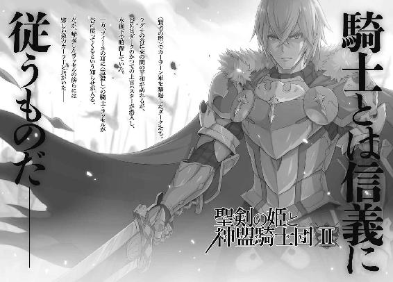
聖剣の姫と神盟騎士団Ⅰ
杉原智則
角川スニーカー文庫
平成25年5月1日 発行
発行者 宍戸健司
発行所 株式会社角川書店
〒102-8078 東京都千代田区富士見2-13-3
http://www.kadokawa.co.jp/
(C) 2013 Tomonori Sugihara, Nidy─2D─
本電子書籍は下記にもとづいて制作しました
角川スニーカー文庫『聖剣の姫と神盟騎士団Ⅰ』平成25年4月1日初版発行
平成25年4月15日再版発行